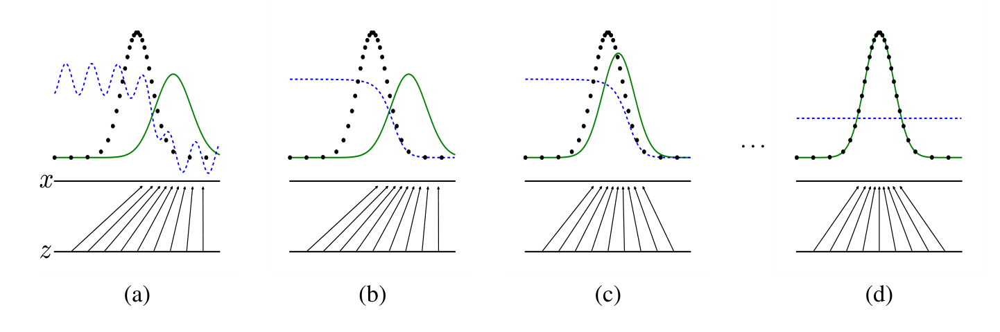
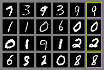
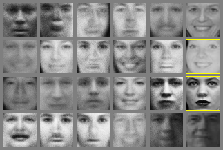
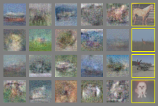
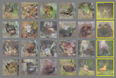

<!doctype html>
<html lang="zh-Hans"><head><meta charset="utf-8">
<meta name="viewport" content="width=device-width, initial-scale=1">
<title>GAN 原论文中英对照</title>


<style>
:root{--accent:#0F766E;--accent-soft:#E6F4F1;--accent-line:#B8DED8;--accent-ink:#0B5750;
--bg:#FBFAF8;--bg-elev:#FFF;--bg-sunken:#F3F1ED;--bg-hover:#F1EFEA;
--text:#14161A;--text-2:#4E5560;--text-3:#868D98;--line:#E4E1DA;--line-soft:#EFEDE7;
--warn:#B45309;--warn-soft:#FEF6E7;--key:#C0564E;--mk:#FBEFC0;--mk-on:#F7E08A;--mk-line:#DDBE6A;
--shadow-sm:0 1px 2px rgba(20,22,26,.05);--r-sm:6px;--r-md:10px;--r-full:999px;--topbar-h:56px;
--sans:-apple-system,BlinkMacSystemFont,"SF Pro SC","PingFang SC",system-ui,sans-serif;
--serif:"Iowan Old Style","Palatino Linotype",Palatino,Georgia,"Songti SC",serif;
--mono:"SF Mono",ui-monospace,Menlo,Consolas,monospace}
*{box-sizing:border-box}html{-webkit-text-size-adjust:100%;scroll-behavior:smooth}
body{margin:0;background:var(--bg);color:var(--text);font:15px/1.6 var(--sans);-webkit-font-smoothing:antialiased;padding-bottom:80px}
a{color:inherit;text-decoration:none}button{font:inherit;color:inherit;background:none;border:0;cursor:pointer;text-align:left}
h1,h2,h3,h4{margin:0;font-weight:650;letter-spacing:-.01em}
.wrap{max-width:1440px;margin:0 auto;padding:0 24px}
.topbar{position:sticky;top:0;z-index:60;height:var(--topbar-h);background:color-mix(in srgb,var(--bg) 90%,transparent);backdrop-filter:blur(12px);border-bottom:1px solid var(--line)}
.topbar .wrap{height:100%;display:flex;align-items:center;gap:14px}
.back{color:var(--text-2);font-size:13px}
.src-flag{margin-left:auto;font-size:12px;color:var(--text-3);border:1px solid var(--line);background:var(--bg-elev);padding:3px 9px;border-radius:var(--r-full)}
.ep-head{padding:30px 0 8px;max-width:900px}
.ep-kicker{display:flex;gap:10px;align-items:center;font-size:12.5px;color:var(--text-3)}
/* flex:none —— 不然窄屏上后半段挤过来，药丸会被压得从「论文」中间断成两行 */
.ep-kicker .topic{flex:none;white-space:nowrap;background:var(--accent-soft);color:var(--accent-ink);padding:2px 9px;border-radius:var(--r-full);font-weight:600}
.ep-head h1{font-size:29px;line-height:1.25;margin:12px 0 0}
.ep-head h1 .nb{white-space:nowrap}
.ep-head h1 em{display:block;font-style:normal;font-size:16.5px;font-weight:400;color:var(--text-2);margin-top:8px}
.ep-meta{display:flex;flex-wrap:wrap;gap:6px 20px;margin-top:13px;font-size:13px;color:var(--text-3)}
.ep-meta b{font-weight:600;color:var(--text);font-variant-numeric:tabular-nums}
.bar{position:sticky;top:var(--topbar-h);z-index:50;background:color-mix(in srgb,var(--bg) 92%,transparent);backdrop-filter:blur(10px);border-bottom:1px solid var(--line);margin-top:10px}
.bar .wrap{display:flex;align-items:center;gap:14px;flex-wrap:wrap;padding:10px 24px}
.swbox{margin-left:auto;display:flex;gap:9px}
/* 图例：四类批注各一色，外加划重点的波浪线 */
.legend{display:flex;align-items:center;gap:14px;flex-wrap:wrap;font-size:12.5px;color:var(--text-2)}
.lg{display:inline-flex;align-items:center;gap:5px;cursor:default}
.lg i{width:13px;height:13px;border-radius:3px;border:1px solid transparent;flex:none}
.lg .key{color:var(--text-2)}
/* .key 的 padding-bottom 会把盒子撑高，flex 居中后这一项就比别人高一截；
   用等量负 margin 抵掉，让它和色块那几项对齐 */
.lg .key{margin-bottom:-8px}
.sw{display:inline-flex;align-items:center;gap:7px;padding:5px 12px 5px 9px;border:1px solid var(--line);border-radius:var(--r-full);font-size:13px;color:var(--text-2);background:var(--bg-elev)}
.sw:hover{background:var(--bg-hover);color:var(--text)}
.sw i{width:26px;height:15px;border-radius:var(--r-full);background:var(--line);position:relative;flex:none;transition:background .15s}
.sw i::after{content:"";position:absolute;top:2px;left:2px;width:11px;height:11px;border-radius:50%;background:#fff;box-shadow:var(--shadow-sm);transition:transform .15s}
.sw[aria-pressed="true"]{color:var(--accent-ink);border-color:var(--accent-line);background:var(--accent-soft)}
.sw[aria-pressed="true"] i{background:var(--accent)}
.sw[aria-pressed="true"] i::after{transform:translateX(11px)}
.bar .sp{margin-left:auto;font-size:12.5px;color:var(--text-3)}
/* 单列时也要显式写 minmax(0,1fr)：不写的话隐式列按 max-content 撑，
   正文里任何一个宽块（全景图、表格）都会把整页顶出横向滚动条 */
.main{display:grid;grid-template-columns:minmax(0,1fr);gap:34px;padding-top:26px}
@media(min-width:1000px){.main{grid-template-columns:210px minmax(0,1fr)}}
/* 顶部三个 tab：论文 / 两张全景图。图有 1560 宽，跟正文并排就会压到目录上，
   所以不并排 —— 切到图，正文和目录一起收起，整幅让给图 */
.tabs{display:flex;gap:8px;align-items:center;flex-wrap:wrap}
.tb{font:inherit;font-size:13px;color:var(--text-2);background:var(--bg-elev);cursor:pointer;
  border:1px solid var(--line);border-radius:var(--r-full);padding:5px 14px;white-space:nowrap}
.tb:hover{background:var(--bg-hover);color:var(--text)}
.tb.on{background:var(--accent);border-color:var(--accent);color:#fff;font-weight:600}
.mapview{display:none}
.mapview .pbox{overflow-x:auto;overscroll-behavior-x:contain}
.mapview .pin{min-width:1040px}
.mapview svg{display:block;width:100%;height:auto}
.mapview .pcap{display:flex;gap:12px;align-items:baseline;margin:12px 0 0;
  font-size:12.5px;color:var(--text-3)}
.phint{margin-left:auto;white-space:nowrap}
/* 哪个视图显示，交给 JS 打的 .on —— tab 是按数据生成的，这里不写死几张图 */
.mapview.on,.resview.on{display:block}
/* 看图 / 看资源时正文、目录、批注开关都收起来 */
body[data-view^="map"] .toc,body[data-view^="map"] .paper,
body[data-view^="map"] .legend,body[data-view^="map"] .swbox,
body[data-view^="doc"] .toc,body[data-view^="doc"] .paper,
body[data-view^="doc"] .legend,body[data-view^="doc"] .swbox,
body[data-view="res"] .toc,body[data-view="res"] .paper,
body[data-view="res"] .legend,body[data-view="res"] .swbox{display:none}
/* 正文要 26px 的天头，图不要 —— 图自己已经有一圈留白，两份叠起来就空出一条 */
body[data-view^="map"] .main,body[data-view="res"] .main,
body[data-view^="doc"] .main{grid-template-columns:minmax(0,1fr);padding-top:8px}

/* ══ 独立内容 tab ══ */
.docview{display:none}
.docview.on{display:block}
.doc{max-width:760px;margin:0 auto;padding:8px 0 64px;font-size:15px;line-height:1.75;color:var(--text-2)}
.doc>h2{margin:38px 0 4px;font-size:20px;line-height:1.35;font-weight:650;color:var(--text);letter-spacing:-.2px}
.doc>h2:first-child{margin-top:6px}
.doc>h3{margin:26px 0 4px;font-size:16px;font-weight:650;color:var(--text)}
.doc>p.lede{margin:0 0 26px;font-size:15px;color:var(--text-3)}
.doc p{margin:0 0 12px}
.doc b{color:var(--text);font-weight:600}
.doc ul,.doc ol{margin:0 0 14px;padding-left:1.2em}
.doc li{margin-bottom:6px}
.doc a{color:var(--accent-ink);text-decoration:underline;text-underline-offset:2px;text-decoration-thickness:.5px}
.doc hr{border:0;border-top:1px solid var(--line-soft);margin:34px 0}
.doc svg{display:block;width:100%;height:auto;margin:14px 0 6px}
.doc figure{margin:18px 0 22px}
.doc figcaption{margin-top:6px;font-size:13px;color:var(--text-3)}
.doc p.fnote{margin:-10px 0 18px;font-size:12.5px;line-height:1.6;color:var(--text-3)}
.doc table{width:100%;border-collapse:collapse;margin:6px 0 18px;font-size:13.5px}
.doc thead th{text-align:left;font-weight:600;color:var(--text-3);font-size:12px;
  padding:0 10px 6px 0;border-bottom:1px solid var(--line)}
.doc td{padding:7px 10px 7px 0;border-bottom:1px solid var(--line-soft);vertical-align:top}
.doc tr:last-child td{border-bottom:0}
.doc td.n{font-family:var(--mono);font-size:12.5px;white-space:nowrap;color:var(--text)}
/* 中文每个字之间都能断行，自动表格布局会把短标签列挤到一个字宽（「张/祥/雨」竖着排）。
   标签列显式不折行；长文字留给其它列去折。 */
.doc td.k{white-space:nowrap;color:var(--text)}
.doc td .who{margin-left:8px;font-size:12.5px;color:var(--text-3)}
.doc td .sub{display:block;margin-top:3px;font-size:13px;line-height:1.65;color:var(--text-2)}
.doc .eg{margin:6px 0 16px;padding:11px 13px;background:var(--bg-sunken);border-radius:var(--r-sm);
  font:12.5px/1.65 var(--mono);color:var(--text-2);white-space:pre;overflow-x:auto}
.doc .callout{margin:16px 0;padding:13px 15px;background:var(--accent-soft);
  border-radius:var(--r-md);font-size:14px;color:var(--accent-ink)}
.doc .callout b{color:var(--accent-ink)}
.doc .warnout{margin:16px 0;padding:13px 15px;background:var(--warn-soft);
  border-radius:var(--r-md);font-size:14px;color:#7A3A06}
.doc .warnout b{color:#7A3A06}
@media (max-width:640px){
  .doc table{display:block;overflow-x:auto;width:max-content;min-width:100%;max-width:100%}
  .doc th,.doc td{min-width:5.5em}
  .doc td:last-child,.doc th:last-child{min-width:12em}
}
@media(max-width:900px){.doc{padding:4px 0 48px}}

/* ══ 资源 tab ══ */
.resview{display:none}
.resview .area-note{margin:0 0 20px;max-width:760px}
.res-sec{max-width:1040px}
.res-sec+.res-sec{margin-top:34px}
.res-h{font-size:12px;color:var(--text-3);font-weight:600;letter-spacing:.06em;
  padding-bottom:8px;margin-bottom:2px;border-bottom:1px solid var(--line)}
/* 工具只是个链接引用，没有播放器也没有章节，卡片就矮一截 */
.rcard h4{font-size:16px;line-height:1.4}
.rcard h4 a:hover{color:var(--accent)}
.vcard{border:1px solid var(--line);border-radius:var(--r-md);background:var(--bg-elev);
  padding:18px 20px}
.vcard+.vcard{margin-top:18px}
.vhd h4{font-size:16px;line-height:1.4}
.vhd h4 a:hover{color:var(--accent)}
.vzh{margin:7px 0 0;font-size:13.5px;color:var(--text-2);line-height:1.6}
.vmeta{display:flex;flex-wrap:wrap;gap:6px 14px;align-items:center;margin:9px 0 0;
  font-size:12.5px;color:var(--text-3)}
.vmeta .vsrc{background:var(--accent-soft);color:var(--accent-ink);font-weight:600;
  padding:2px 9px;border-radius:var(--r-full)}
.vmeta time{font-variant-numeric:tabular-nums}
.vmeta a{color:var(--text-2);border-bottom:1px solid var(--line)}
.vmeta a:hover{color:var(--accent);border-color:var(--accent-line)}
.vbody{display:grid;gap:16px;margin-top:15px}
@media(min-width:820px){.vbody{grid-template-columns:minmax(0,1.35fr) minmax(240px,1fr)}}
.vwrap{position:relative;aspect-ratio:16/9;border-radius:var(--r-sm);overflow:hidden;
  background:var(--bg-sunken);border:1px solid var(--line)}
.vwrap iframe{position:absolute;inset:0;width:100%;height:100%;border:0}
.vplay{position:absolute;inset:0;width:100%;height:100%;padding:0;cursor:pointer;
  background-size:cover;background-position:center;display:flex;
  align-items:center;justify-content:center}
.vplay::before{content:"";position:absolute;inset:0;background:rgba(20,22,26,.45);transition:background .15s}
.vplay:hover::before{background:rgba(20,22,26,.32)}
.vtri{position:relative;width:54px;height:54px;border-radius:50%;background:rgba(255,255,255,.94);
  box-shadow:0 2px 12px rgba(20,22,26,.3)}
.vtri::after{content:"";position:absolute;top:50%;left:52%;transform:translate(-50%,-50%);
  border-style:solid;border-width:9px 0 9px 15px;border-color:transparent transparent transparent #14161A}
.vchap{margin:0;padding:0;list-style:none;max-height:min(46vh,320px);overflow:auto;
  overscroll-behavior:contain;border:1px solid var(--line-soft);border-radius:var(--r-sm)}
.vchap li+li{border-top:1px solid var(--line-soft)}
.vchap button{display:flex;gap:10px;width:100%;padding:7px 11px;font-size:12.5px;
  color:var(--text-2);line-height:1.45}
.vchap button b{flex:none;font:12px/1.45 var(--mono);color:var(--accent);font-weight:600;
  font-variant-numeric:tabular-nums}
.vchap button:hover{background:var(--bg-hover);color:var(--text)}
.vchap button.on{background:var(--accent-soft);color:var(--accent-ink)}
.vchap button.on b{color:var(--accent-ink)}
.vshots{margin-top:15px;border-top:1px solid var(--line-soft);padding-top:12px}
.vshots summary{cursor:pointer;font-size:12.5px;color:var(--text-2);display:flex;gap:8px;align-items:baseline}
.vshots summary span{font-size:11.5px;color:var(--text-3)}
.vshots summary:hover{color:var(--accent)}
.shots{display:grid;grid-template-columns:repeat(auto-fill,minmax(190px,1fr));gap:12px;margin-top:12px}
.shot{margin:0}
.shot img{display:block;width:100%;height:auto;aspect-ratio:16/10;object-fit:cover;
  border-radius:var(--r-sm);border:1px solid var(--line);cursor:zoom-in;background:var(--bg-sunken)}
.shot img:hover{border-color:var(--accent-line)}
/* 缩略图统一裁成一个比例，这一排的说明才在同一条线上；点开是没裁过的原图 */
.shot figcaption{margin-top:5px;text-align:left;font-size:11.5px;color:var(--text-3);line-height:1.45}
.shot figcaption i{display:block;font-style:normal;font-size:10.5px;color:var(--accent);
  letter-spacing:.03em;font-weight:600}
.lb{position:fixed;inset:0;z-index:70;background:rgba(20,22,26,.86);display:none;
  align-items:center;justify-content:center;padding:28px;cursor:zoom-out}
.lb.on{display:flex}
.lb figure{margin:0;max-width:min(1400px,100%);max-height:100%;display:flex;
  flex-direction:column;gap:10px;align-items:center}
.lb img{max-width:100%;max-height:calc(100vh - 100px);object-fit:contain;border-radius:var(--r-sm)}
.lb figcaption{font-size:12.5px;color:rgba(255,255,255,.78);text-align:center}
.lb-nav{position:absolute;top:50%;transform:translateY(-50%);width:44px;height:44px;flex:none;
  border-radius:50%;background:rgba(255,255,255,.13);color:#fff;font-size:26px;line-height:1;
  display:flex;align-items:center;justify-content:center;cursor:pointer;padding-bottom:3px}
.lb-nav:hover{background:rgba(255,255,255,.3)}
.lb-nav[hidden]{display:none}
.lb-prev{left:16px}.lb-next{right:16px}
@media(max-width:640px){.lb-nav{width:38px;height:38px;font-size:22px}.lb-prev{left:6px}.lb-next{right:6px}}
.toc{display:none}
@media(min-width:1000px){.toc{display:block;position:sticky;top:calc(var(--topbar-h) + 54px);align-self:start;max-height:calc(100vh - 150px);overflow:auto}}
.toc h4{font-size:11px;text-transform:uppercase;letter-spacing:.08em;color:var(--text-3);margin-bottom:10px}
.toc a{display:block;padding:4px 8px;border-radius:var(--r-sm);font-size:12.5px;color:var(--text-2);border-left:2px solid transparent}
.toc a:hover{background:var(--bg-hover);color:var(--text)}
.toc a.on{color:var(--accent);background:var(--accent-soft);border-left-color:var(--accent);font-weight:600}
.toc .sub{padding-left:16px;font-size:12px}
.paper{max-width:1080px}
.front,.ph,.eqbox,.floatbox,.refs{max-width:calc(100% - 322px)}
.front{text-align:center;padding:6px 0 22px;border-bottom:1px solid var(--line);margin-bottom:10px}
.ptitle{font:600 27px/1.3 var(--serif)}
.agrid{margin-top:18px;display:flex;flex-direction:column;gap:10px}
.arow{display:flex;justify-content:center;gap:26px;flex-wrap:wrap}
.acell{display:flex;flex-direction:column;gap:1px;min-width:150px}
.acell .an{font:600 13.5px/1.5 var(--serif);color:var(--text)}
.acell .aa{font:12px/1.5 var(--sans);color:var(--text-3)}
.acell .ae{font:11.5px/1.5 var(--mono);color:var(--text-3);opacity:.8}
.acell .amk{font-size:.72em;vertical-align:super;color:var(--text-3);margin-left:1px}
/* 首页页脚：论文里在正文下方、一条短横线之后 */
.fnotes{margin:26px auto 0;max-width:720px;text-align:left;padding-top:12px;position:relative}
.fnotes::before{content:"";position:absolute;top:0;left:0;width:150px;height:1px;background:var(--line)}
.fnotes p{margin:0 0 5px;font:11.5px/1.65 var(--serif);color:var(--text-3);text-indent:1.2em}
.fnotes sup{font-size:.9em;margin-right:2px}
.ph{font:650 19px/1.3 var(--sans);margin:34px 0 12px;padding-bottom:8px;border-bottom:1px solid var(--line);scroll-margin-top:130px}
h3.ph{font-size:16px;margin-top:26px;border-bottom-color:var(--line-soft)}
/* 段落级标题：论文里是接在正文前面的粗体小标题，不带横线 */
h4.ph{font:650 14.5px/1.4 var(--serif);margin:20px 0 2px;padding-bottom:0;border-bottom:0;color:var(--text)}
.hn{font-family:var(--mono);font-size:.8em;color:var(--accent);margin-right:10px}
.blk{display:grid;gap:6px 26px;margin-bottom:4px;position:relative}
/* 不用 content-visibility：屏外块的高度只是估算，滚动位置会随渲染漂移，刷新后落点乱跑 */
html{overflow-anchor:none}
@media(min-width:1200px){.blk{grid-template-columns:minmax(0,1fr) 296px;align-items:start}
.side{grid-column:2;grid-row:1/span 3;position:sticky;top:calc(var(--topbar-h) + 62px)}
/* 标题批注复用正文两栏，但标题不能再套全页级的减宽；卡片与 h3 顶部对齐。 */
.hblk>.ph{max-width:none;grid-column:1}
.hblk>.side{padding-top:26px}}
.pp{margin:0;font:16px/1.78 var(--serif);color:#1B1E24;padding:6px 0 6px 22px;
  border-left:2px solid transparent;overflow-wrap:break-word}
/* 论文里那条 tensor2tensor 长网址一个断点都没有，break-word 也断不开（它不改最小内容宽度）。
   只给链接开 anywhere：手机上不这么做，整页就被这一行顶出横向滚动条 */
.pp a.ltx_url,.nt-a a,.sheet-bd a{overflow-wrap:anywhere}
.blk.hot .pp{border-left-color:var(--accent-line);background:linear-gradient(90deg,rgba(230,244,241,.5),transparent 60%)}
/* itemize：原件的 • 在 <li> 上，段落被单拎出来后就丢了，这里补回去 */
.blk.li .pp{position:relative;padding-left:52px}
.blk.li .pp::before{content:"•";position:absolute;left:30px;color:var(--text-3)}
.lxa{display:block;height:0;scroll-margin-top:130px}
.dot{position:absolute;left:0;top:12px;width:16px;height:16px;border-radius:50%;background:var(--accent-soft);border:1px solid var(--accent-line);color:var(--accent-ink);font:10px/14px var(--mono);text-align:center}
/* 划重点：偏红的波浪线，和批注的黄绿紫底色分得开。
   不用 text-decoration:wavy —— 那个的波长由浏览器定死，只能调线宽，密得像锯齿。
   改成自绘的一段波形铺底，波长（background-size 的宽）就能自己定。 */
.key{text-decoration:none;padding-bottom:8px;
  background:url("data:image/svg+xml;utf8,<svg xmlns='http://www.w3.org/2000/svg' width='15' height='8' viewBox='0 0 15 8'><path d='M0 4 Q 3.75 0 7.5 4 T 15 4' fill='none' stroke='%23C0564E' stroke-width='2' stroke-linecap='round'/></svg>") repeat-x 0 100%}
/* 波长 = svg 的 width（15），波幅 = 控制点偏移的一半（基线 4、控制点 0 → 偏移 4 → 幅 2） */
mark{background:var(--mk);border-bottom:1px solid var(--mk-line);border-radius:2px;padding:0 1px;cursor:pointer;color:inherit}
mark:hover{filter:brightness(.96)}
mark.on{box-shadow:0 0 0 2px rgba(20,22,26,.14)}
mark>sup{font:9.5px var(--mono);vertical-align:super;opacity:.85}
mark[data-k="词句"]{background:#FBEFC0;border-bottom-color:#DDBE6A}
mark[data-k="词句"]>sup{color:#8A6512}
.num[data-k="词句"]{background:#FBEFC0;color:#8A6512}
.tag[data-k="词句"]{color:#8A6512;border-color:#DDBE6A;background:#FBEFC066}
mark[data-k="原理"]{background:#E5DDF4;border-bottom-color:#B3A2DA}
mark[data-k="原理"]>sup{color:#4B3B7A}
.num[data-k="原理"]{background:#E5DDF4;color:#4B3B7A}
.tag[data-k="原理"]{color:#4B3B7A;border-color:#B3A2DA;background:#E5DDF466}
mark[data-k="基础"]{background:#D8EDE3;border-bottom-color:#8CC9B2}
mark[data-k="基础"]>sup{color:#1D6B52}
.num[data-k="基础"]{background:#D8EDE3;color:#1D6B52}
.tag[data-k="基础"]{color:#1D6B52;border-color:#8CC9B2;background:#D8EDE366}
mark[data-k="工程对照"]{background:#F7DCE3;border-bottom-color:#DFA0B4}
mark[data-k="工程对照"]>sup{color:#8B2F4B}
.num[data-k="工程对照"]{background:#F7DCE3;color:#8B2F4B}
.tag[data-k="工程对照"]{color:#8B2F4B;border-color:#DFA0B4;background:#F7DCE366}
/* 图例 */
.legend{display:flex;gap:7px;flex-wrap:wrap;align-items:center}
.legend i{font-style:normal;font-size:11.5px;padding:2px 9px;border-radius:var(--r-full);border:1px solid transparent}

/* 来源 HTML 自带的标记 */
.pp math{font-size:1em}
.eqbox{margin:18px 0 18px 22px;padding:14px 8px;background:color-mix(in srgb,var(--bg-elev) 45%,transparent);border:1px solid var(--line-soft);border-radius:var(--r-md);overflow-x:auto}
.eqbox table{margin:0 auto;border-collapse:collapse}
.eqbox math{font-size:1.1rem}
.ltx_eqn_cell{padding:2px 6px}
.ltx_eqn_center_padleft,.ltx_eqn_center_padright{width:20px}
.ltx_tag_equation{font:12px var(--mono);color:var(--text-3)}
.floatbox{margin:20px 0 20px 22px;text-align:center;overflow-x:auto}
.floatbox figure{margin:0}
/* 带批注的图：网格已经留出旁注列，图自己就不用再减宽度了 */
.blk.float{align-items:start}
.blk.float .floatbox{max-width:none;margin-left:22px}   /* <figure> 的浏览器默认左右各 40px 边距，会把容器顶出滚动条 */
.floatbox.rot{overflow:visible}
.floatbox.sxs figure{display:flex;flex-wrap:wrap;gap:14px;align-items:flex-start;justify-content:center}
.floatbox.sxs img{min-width:0;width:auto;max-width:none;max-height:none;align-self:flex-start}
/* 源里带 ltx_fig_right 的是右幅，但它在 DOM 里排在前面，按图注的 (Left)/(Right) 摆回去 */
.floatbox.sxs img.ltx_fig_right{order:2}
.floatbox.sxs figcaption{flex:1 0 100%;order:3}
@media (max-width:860px){.floatbox.sxs figure{display:block}.floatbox.sxs img{max-height:600px}}
/* 图 1 原图 912×1344，铺满一屏还多，限高压一压；横图不受影响 */
.floatbox img{max-width:100%;max-height:600px;width:auto;height:auto;background:#fff;border:1px solid var(--line);border-radius:var(--r-md);padding:12px}
/* 图 2 是两块并排的 panel，原件用 ltx_flex_figure 表达，这里给它真的 flex —— 竖着堆太占地方 */
.ltx_flex_figure{display:flex;flex-wrap:wrap;justify-content:center;align-items:flex-end;gap:56px}
.ltx_flex_cell{display:flex;flex-wrap:wrap;justify-content:center;align-items:flex-end;gap:56px}
.ltx_figure_panel{width:auto!important;max-width:100%;display:flex;flex-direction:column;align-items:center;gap:8px}
.ltx_figure_panel>p{margin:0;font:13px/1.5 var(--serif);color:var(--text-2)}
.ltx_figure_panel img{max-height:400px;width:auto}
/* 图片本身已经转正，控高直接写 max-height */
.floatbox.rot img{max-height:470px;width:auto}
/* 图内的两块并排：ltx_flex_break 是原件用来强制换行的，横排就得让它失效；
   高度写死，两块才严格等高 */
.floatbox.rot .ltx_flex_figure{flex-wrap:nowrap;align-items:flex-start;gap:20px}
.floatbox.rot .ltx_flex_break{display:none}
.floatbox.rot .ltx_flex_cell{display:flex;justify-content:center;min-width:0}
.floatbox.rot .ltx_figure_panel{height:400px;max-height:400px;width:auto;max-width:100%}
.floatbox.rot figure{display:flex;flex-direction:column;align-items:center;width:100%}
figcaption,.ltx_caption{margin-top:12px;font:13px/1.65 var(--serif);color:var(--text-2);text-align:center;max-width:min(760px,100%);margin-inline:auto}
.ltx_tag_figure,.ltx_tag_table{font-weight:600;color:var(--text)}
.floatbox table.ltx_tabular{border-collapse:collapse;margin:0 auto;font:13.5px/1.5 var(--serif);background:var(--bg-elev)}
.ltx_tabular td,.ltx_tabular th{padding:6px 12px;white-space:nowrap}
.ltx_border_t{border-top:1px solid var(--line)}
.ltx_border_b{border-bottom:1px solid var(--line)}
.ltx_border_r{border-right:1px solid var(--line-soft)}
.ltx_align_center{text-align:center}.ltx_align_left{text-align:left}.ltx_align_right{text-align:right}
.ltx_font_italic{font-style:italic}.ltx_font_bold{font-weight:650}
.ltx_font_typewriter{font-family:var(--mono);font-size:.92em}
.pp a,.refs a{color:var(--accent)}
.pp a:hover{text-decoration:underline}
.ltx_cite a{font-variant-numeric:tabular-nums}
/* 脚注：正文里只留角标，注文攒到章节末尾 */
.fnm{font-size:.72em;vertical-align:super;color:var(--warn);margin-left:1px}
.fnsec{margin:22px 0 8px 22px;padding-top:10px;position:relative;max-width:calc(100% - 322px)}
.fnsec::before{content:"";position:absolute;top:0;left:0;width:150px;height:1px;background:var(--line)}
.fnsec-h{display:block;font:10.5px var(--mono);letter-spacing:.06em;color:var(--text-3);margin-bottom:5px}
.fnsec p{margin:0 0 6px;font:12.5px/1.7 var(--serif);color:var(--text-3)}
.fnsec sup{color:var(--warn);margin-right:4px}
.ltx_note_outer,.ltx_note_content{display:none}
.sf-hidden{display:none}
.side{display:flex;flex-direction:column;gap:8px;padding-top:6px}
/* 不挂原句的批注：成组摆在章节末尾，或预备/岔路区 */
.nblock{margin:16px 0 22px 22px;max-width:calc(100% - 322px)}
.nb-h{display:flex;align-items:baseline;gap:8px;font:12px var(--mono);color:var(--text-3);margin-bottom:8px;
  padding-top:9px;border-top:1px dashed var(--line)}
.nb-h span{font-size:11px;opacity:.8}
.nb-list{display:grid;gap:7px}
.ph.area{margin-top:44px;border-bottom-width:2px;border-bottom-color:var(--accent-line)}
.ph .n{font:11.5px var(--mono);color:var(--text-3);font-weight:400;margin-left:10px}
.area-note{margin:0 0 4px 22px;max-width:calc(100% - 322px);font-size:13px;color:var(--text-3)}
.nt{border:1px solid var(--line);border-radius:var(--r-md);background:var(--bg-elev);box-shadow:var(--shadow-sm);overflow:hidden}
.nt.on{border-color:var(--accent);box-shadow:0 0 0 3px var(--accent-soft)}
.nt-q{display:flex;gap:8px;align-items:flex-start;width:100%;padding:9px 11px;font-size:13px;line-height:1.5}
.nt-q:hover{background:var(--bg-hover)}
.nt-q .num{flex:none;width:17px;height:17px;border-radius:5px;background:var(--mk);color:#8A6512;font:10px/17px var(--mono);text-align:center;margin-top:1px}
.nt-q .qt{font-weight:600;color:var(--text)}
.nt-q .tag{flex:none;font-size:10.5px;color:var(--text-3);border:1px solid var(--line);border-radius:var(--r-full);padding:0 7px;margin-top:2px}
.nt-q .tag.basic{color:var(--warn);border-color:#EBD9B4;background:var(--warn-soft)}
.nt-a{display:none;overflow-wrap:break-word;padding:10px 11px 12px 36px;font-size:13px;line-height:1.7;color:var(--text-2);border-top:1px solid var(--line-soft);
  }
.nt.open .nt-a{display:block}
.nt-a p{margin:0 0 8px}.nt-a b{color:var(--text)}
.nt-a ul{margin:0 0 8px;padding-left:1.1em}.nt-a li{margin-bottom:4px}
/* <ol> 的浏览器默认缩进 40px，序号会比正文缩进一大截；收窄到刚好让数字左缘和正文齐平 */
.nt-a ol{margin:0 0 8px;padding-left:1.5em}
/* 批注里的表：旁注栏只有 296px，浏览器默认的自动布局会把每一列都压到换行，
   「情形」这种两个字的表头都能竖着排。所以一律不折行，放不下就整表横向滚
   —— 和批注 7 的参数表同一套。需要折行的说明列单独标 class="w"。 */
.nt-a table{display:block;overflow-x:auto;width:max-content;min-width:100%;max-width:100%;
  border-collapse:collapse;margin:2px 0 10px;font-size:12.5px;line-height:1.55}
.nt-a td,.nt-a th{white-space:nowrap;vertical-align:top;text-align:left;
  padding:5px 12px 5px 0;border-bottom:1px solid var(--line-soft)}
.nt-a td:last-child,.nt-a th:last-child{padding-right:0}
/* 最后一列几乎总是说明文字，默认让它折行吸收剩余宽度；中间列要折行的另标 .w */
.nt-a td:last-child,.nt-a th:last-child{white-space:normal}
.nt-a tr:first-child td{color:var(--text-3);font-size:11.5px}
.nt-a tr:last-child td{border-bottom:0}
.nt-a td.w{white-space:normal;min-width:9.5em}
/* 整张都是数字、本来就要横向滚的表，末列也别折 —— 折了会把表头撑成三行 */
.nt-a table.nw td:last-child,.nt-a table.nw th:last-child{white-space:nowrap}
/* 批注里的插图：跟着旁注栏的宽度缩放 */
.nt-a svg{display:block;width:100%;height:auto;margin:4px 0 10px}
.mf{font-family:var(--serif);white-space:nowrap}
.mf i{font-style:italic}
.mf sub{font-size:.7em;vertical-align:sub;line-height:0}
.mf sup{font-size:.7em;vertical-align:super;line-height:0}
.nt-a .m,.doc .m{font-family:var(--mono);font-size:.9em;background:var(--bg-sunken);padding:1px 5px;border-radius:4px;
  /* 别 nowrap：旁注栏才 296px 宽，多词的短语会被整体挤到下一行，上一行留一大截空白。
     换行时用 box-decoration-break 让两段各自带上圆角和底色 */
  box-decoration-break:clone;-webkit-box-decoration-break:clone}
.eg{margin:0 0 8px;padding:8px 10px;background:var(--bg-sunken);border-radius:var(--r-sm);
  font:11.5px/1.75 var(--mono);color:var(--text-2);
  /* 例子里的对齐是靠空格排出来的，pre-wrap 一折行就散了 —— 宁可横向滚 */
  white-space:pre;overflow-x:auto;overscroll-behavior-x:contain}
.eg::-webkit-scrollbar{height:6px}
.eg::-webkit-scrollbar-thumb{background:var(--line);border-radius:3px}
.refs{margin:30px 0 0 22px;border:1px solid var(--line);border-radius:var(--r-md);background:var(--bg-elev);scroll-margin-top:130px}
.refs summary{padding:12px 16px;font:650 15px/1.3 var(--sans);cursor:pointer;display:flex;align-items:center;gap:10px}
.refs summary span{font:12px var(--mono);color:var(--text-3);font-weight:400}
.refs ol{margin:0;padding:0 18px 16px 20px;font:13px/1.7 var(--serif);color:var(--text-2);list-style:none}
.refs li{margin-bottom:8px;scroll-margin-top:130px}
.refs li>details>summary{cursor:pointer;list-style:none;display:block;padding:3px 0}
.refs li>details>summary::-webkit-details-marker{display:none}
.refs li>details[open]>summary{color:var(--text)}
.refs li>details>summary:hover{background:var(--bg-hover);border-radius:4px}
.rl{margin-left:8px;font:11.5px var(--mono);color:var(--accent);white-space:nowrap}
.rn{margin:6px 0 6px 14px;font:13px/1.7 var(--sans);color:var(--text-2)}
.rc{margin:6px 0 10px 14px;padding-left:10px;border-left:2px solid var(--accent-line)}
.rc b{display:block;font:11px var(--mono);color:var(--text-3);font-weight:400;margin-bottom:4px}
.rc p{margin:0 0 5px;font:12.5px/1.65 var(--serif);color:var(--text-2)}
.rc i{font-style:normal;color:var(--accent);margin-right:8px;font-size:11px;font-family:var(--mono)}
.refs li:target{background:var(--mk);border-radius:3px}
.ltx_tag_bibitem{font:12px var(--mono);color:var(--accent);margin-right:6px}
.ltx_bibblock{display:inline}
/* 隐藏批注：高亮、旁注、段落底色、序号一起收掉，只剩论文本身 */
body.no-notes .side,body.no-notes .dot,body.no-notes .nblock{display:none}
body.no-notes mark{background:none;border-bottom:0;cursor:auto}
body.no-notes mark>sup{display:none}
body.no-notes .blk.hot .pp{border-left-color:transparent;background:none}
/* 隐藏批注只收内容，不动版面 —— 两栏网格保持原样，正文宽度不跟着变；
   划重点的波浪线也一起收掉，回到一份干净的论文 */
body.no-notes .key{background:none;padding-bottom:0}
/* 批注全收起来之后，那排颜色图例（含划重点）也就没有对应物了，一起收掉 */
body.no-notes .legend{display:none}
@media(max-width:999px){.ep-head h1{font-size:22px}.pp{font-size:15.5px;padding-left:16px}.dot{display:none}
.front,.ph,.eqbox,.floatbox,.refs{max-width:none;margin-left:16px}
.arow{gap:14px}.side{padding-top:2px;margin:0 0 14px 16px}}

/* ── 手机 ──
   批注卡片插在段落之间，一屏能塞下的正文就没几行了 —— 66 条批注会把文章切成碎片。
   所以 860 以下换一种给法：正文保持干净，点高亮从底部推上来一张卡。
   想一次看完的，顶部「展开全部批注」仍然把卡片摊回正文里。 */
@media(max-width:859px){
  .wrap{padding:0 14px}
  .side{display:none}
  body.notes-inline .side{display:flex}
  .pp{font-size:16px;line-height:1.8;padding-left:12px}
  .front,.ph,.eqbox,.floatbox,.refs{margin-left:0}
  .ep-head h1{font-size:20px}
  /* 出处那行在手机上要折两行，药丸跟着居中会飘到中间，顶对齐才像个标签 */
  .ep-kicker{align-items:flex-start;gap:8px}
  .ep-meta{gap:5px 14px;margin-top:11px;font-size:12px}
  .bar .wrap{padding:8px 14px;gap:8px}
  /* 顶栏在手机上是钉住的，三行就吃掉一屏的六分之一。
     颜色图例让位 —— 每条批注自己带分类标签，不看图例也认得出 */
  .legend{display:none}
  .swbox{margin-left:0}
  .sw{font-size:12px;padding:4px 10px}
}
/* 抽屉本身不限屏宽 —— 桌面端用不到，但样式留着，窗口一窄就能接上。
   背景怎么定住：**什么都不改**。之前给 body 加 position:fixed，body 一脱离
   文档流布局就重算一遍，开一次关一次闪两下。现在正文原地不动，只是拦住
   滚动手势 —— 遮罩上 touch-action:none（配一个 wheel 拦截给窄窗口的鼠标），
   抽屉里 overscroll-behavior:contain 不让滚动链传到底下的正文。 */
.scrim{position:fixed;inset:0;background:rgba(20,22,26,.38);opacity:0;pointer-events:none;
  transition:opacity .18s;z-index:60;touch-action:none}
.scrim.on{opacity:1;pointer-events:auto}
.sheet{position:fixed;left:0;right:0;bottom:0;z-index:61;background:var(--bg-elev);
  border-radius:16px 16px 0 0;box-shadow:0 -8px 32px rgba(20,22,26,.18);
  transform:translateY(102%);transition:transform .22s cubic-bezier(.32,.72,0,1);
  max-height:82vh;display:flex;flex-direction:column;overscroll-behavior:contain}
.sheet.on{transform:none}
.sheet-grab{flex:none;width:38px;height:4px;border-radius:2px;background:var(--line);margin:8px auto 4px;touch-action:none}
.sheet-hd{flex:none;display:flex;gap:9px;align-items:flex-start;padding:6px 16px 10px;
  border-bottom:1px solid var(--line-soft);touch-action:none}
.sheet-hd .num{flex:none;width:19px;height:19px;border-radius:5px;background:var(--mk);color:#8A6512;
  font:11px/19px var(--mono);text-align:center}
.sheet-hd .qt{flex:1;font-size:14.5px;font-weight:650;color:var(--text);line-height:1.45}
.sheet-hd .tag{flex:none;font-size:11px;color:var(--text-3);border:1px solid var(--line);
  border-radius:var(--r-full);padding:1px 8px}
.sheet-x{flex:none;font:inherit;font-size:20px;line-height:1;color:var(--text-3);background:none;
  border:0;cursor:pointer;padding:0 2px}
.sheet-bd{overflow:auto;-webkit-overflow-scrolling:touch;overscroll-behavior:contain;padding:12px 16px 26px;overflow-wrap:break-word;
  font-size:14.5px;line-height:1.75;color:var(--text-2)}
.sheet-bd svg{display:block;width:100%;height:auto;margin:4px 0 10px}

/* 宽屏下 .blk 是「正文 | 旁注」两栏网格，中文段不钉住会被自动排进旁注那一栏 */
.blk>.pp{grid-column:1}
.pp.zh{font:15.5px/1.85 var(--sans);color:#2C3440;padding-top:2px;margin-bottom:10px;
  border-left:2px solid var(--line);margin-left:22px;padding-left:14px;background:none}
.blk.hot .pp.zh{border-left-color:var(--line);background:none}
.blk.li .pp.zh{margin-left:52px;padding-left:14px}
.blk.li .pp.zh::before{content:none}
.pp.zh math{font-size:.97em}
.hzh{margin-left:12px;font-weight:600;color:var(--accent-ink);font-size:.92em}
h4.ph .hzh{font-family:var(--sans)}
.tzh{margin-left:6px;color:var(--text-3);font-size:.95em}
.toc a.on .tzh{color:inherit}
.fzh{margin:6px auto 0;max-width:min(760px,100%);font:13.5px/1.75 var(--sans);color:#2C3440;text-align:center}
.fzh math{font-size:.97em}
.lzh{display:block;margin:1px 0 3px 1.5em;font:13px/1.6 var(--sans);color:var(--text-2)}
.fnsec .fzh{text-align:left;max-width:none;margin:0 0 8px;font-size:12.5px}
.ltx_listing{text-align:left;display:inline-block;margin-top:10px;font:14px/1.7 var(--serif)}
.ltx_listingline{padding:1px 0}
body.no-zh .pp.zh,body.no-zh .hzh,body.no-zh .tzh,body.no-zh .fzh,body.no-zh .lzh{display:none}
/* LaTeXML 的 flex 拼版和 span 表格，make-paper 的样式默认不含这些规则 */
.ltx_flex_figure{display:flex;flex-wrap:wrap;justify-content:center;align-items:center;gap:6px 10px}
.ltx_flex_cell{flex:1 1 40%;min-width:0;text-align:center}
.ltx_flex_size_1{flex:1 1 100%}
.ltx_flex_break{flex-basis:100%;height:0}
.ltx_flex_cell img{max-width:100%;height:auto}
[id="S5.T2"] table{zoom:.9}
[id="S5.T2"] td,[id="S5.T2"] th{white-space:normal;min-width:96px;vertical-align:top}
figure.ltx_table{overflow-x:auto}
:root{--topbar-h:0px}</style></head><body>

<div class="wrap"><section class="ep-head">
  <div class="ep-kicker"><span class="topic">论文</span>
    <span>《Generative Adversarial Nets》 · NIPS 2014 ·
      <a href="https://arxiv.org/abs/1406.2661" target="_blank" rel="noreferrer">arXiv:1406.2661 ↗</a></span>
  </div>
  <h1>《Generative Adversarial Nets<span class="nb">》中英对照</span></h1>
  
</section></div>

<div class="bar"><div class="wrap">
  <div class="tabs" role="tablist">
    <button class="tb on" type="button" role="tab" data-v="paper" aria-selected="true">论文 · 中英对照</button>
    
    
    
  </div>
  <div class="legend" style="display:none">
    <span class="lg" title="一个词、一个短语、一整句在说什么"><i style="background:#FBEFC0;border-color:#DDBE6A"></i>词句</span><span class="lg" title="公式、维度、为什么这么设计"><i style="background:#E5DDF4;border-color:#B3A2DA"></i>原理</span><span class="lg" title="论文默认你会的前置知识"><i style="background:#D8EDE3;border-color:#8CC9B2"></i>基础</span><span class="lg" title="2017 年的写法，今天变成了什么"><i style="background:#F7DCE3;border-color:#DFA0B4"></i>工程对照</span>
    <span class="lg" title="读完之后想留给下一个读者看的句子"><u class="key">划重点</u></span>
  </div>
  <div class="swbox">
    <button class="sw" id="sw-all" type="button" aria-pressed="false" style="display:none"><i></i>展开全部批注</button>
    <button class="sw" id="sw-off" type="button" aria-pressed="false" style="display:none"><i></i>隐藏所有批注</button>
    <button class="sw" id="sw-zh" type="button" aria-pressed="false"><i></i>隐藏译文</button>
  </div>
</div></div>

<div class="wrap main">
  <aside class="toc"><h4>论文目录</h4><div><a href="#sabstract" data-ol="sabstract" class="">Abstract<span class="tzh">摘要</span></a><a href="#s1" data-ol="s1" class="">1 Introduction<span class="tzh">引言</span></a><a href="#s2" data-ol="s2" class="">2 Related work<span class="tzh">相关工作</span></a><a href="#s3" data-ol="s3" class="">3 Adversarial nets<span class="tzh">对抗网络</span></a><a href="#s4" data-ol="s4" class="">4 Theoretical Results<span class="tzh">理论结果</span></a><a href="#s4-1" data-ol="s4-1" class="sub">4.1 Global Optimality of p<sub>g</sub> = p<sub>data</sub><span class="tzh">p<sub>g</sub> = p<sub>data</sub> 的全局最优性</span></a><a href="#s4-2" data-ol="s4-2" class="sub">4.2 Convergence of Algorithm 1<span class="tzh">算法 1 的收敛性</span></a><a href="#s5" data-ol="s5" class="">5 Experiments<span class="tzh">实验</span></a><a href="#s6" data-ol="s6" class="">6 Advantages and disadvantages<span class="tzh">优点和缺点</span></a><a href="#s7" data-ol="s7" class="">7 Conclusions and future work<span class="tzh">结论和未来工作</span></a><a href="#sacknowledgments" data-ol="sacknowledgments" class="sub">Acknowledgments<span class="tzh">致谢</span></a><a href="#sreferences" data-ol="sreferences" class="">References<span class="tzh">参考文献</span></a></div></aside>
  <div class="paper"><section class="front">
    <h2 class="ptitle">Generative Adversarial Nets</h2>
    <div class="agrid"><div class="arow"><div class="acell"><span class="an">Ian J. Goodfellow</span></div><div class="acell"><span class="an">Jean Pouget-Abadie</span></div><div class="acell"><span class="an">Mehdi Mirza</span></div><div class="acell"><span class="an">Bing Xu</span></div></div><div class="arow"><div class="acell"><span class="an">David Warde-Farley</span></div><div class="acell"><span class="an">Sherjil Ozair</span></div><div class="acell"><span class="an">Aaron Courville</span></div></div><div class="arow"><div class="acell"><span class="an">Yoshua Bengio</span></div></div></div>
    <div class="fnotes"><p>Département d’informatique et de recherche opérationnelle</p><p>Université de Montréal</p><p>Montréal, QC H3C 3J7</p></div>
  </section>
<h2 class="ph" id="sabstract">Abstract<span class="hzh">摘要</span></h2>
<div class="blk">
    
    <p class="pp">We propose a new framework for estimating generative models
via an adversarial process, in which we simultaneously train
two models: a generative model <math id="abstract1.m1" class="ltx_Math" alttext="G" display="inline" intent=":literal"><semantics><mi>G</mi></semantics></math> that captures the data
distribution, and a discriminative model <math id="abstract1.m2" class="ltx_Math" alttext="D" display="inline" intent=":literal"><semantics><mi>D</mi></semantics></math> that estimates the
probability that a sample came from the training data rather than <math id="abstract1.m3" class="ltx_Math" alttext="G" display="inline" intent=":literal"><semantics><mi>G</mi></semantics></math>.
The training procedure for <math id="abstract1.m4" class="ltx_Math" alttext="G" display="inline" intent=":literal"><semantics><mi>G</mi></semantics></math> is to maximize the probability of <math id="abstract1.m5" class="ltx_Math" alttext="D" display="inline" intent=":literal"><semantics><mi>D</mi></semantics></math> making
a mistake. This framework corresponds to a minimax two-player game. In the
space of arbitrary functions <math id="abstract1.m6" class="ltx_Math" alttext="G" display="inline" intent=":literal"><semantics><mi>G</mi></semantics></math> and <math id="abstract1.m7" class="ltx_Math" alttext="D" display="inline" intent=":literal"><semantics><mi>D</mi></semantics></math>, a unique solution exists, with <math id="abstract1.m8" class="ltx_Math" alttext="G" display="inline" intent=":literal"><semantics><mi>G</mi></semantics></math>
recovering the training data distribution and <math id="abstract1.m9" class="ltx_Math" alttext="D" display="inline" intent=":literal"><semantics><mi>D</mi></semantics></math> equal to <math id="abstract1.m10" class="ltx_Math" alttext="\frac{1}{2}" display="inline" intent=":literal"><semantics><mfrac><mn>1</mn><mn>2</mn></mfrac></semantics></math>
everywhere. In the case where <math id="abstract1.m11" class="ltx_Math" alttext="G" display="inline" intent=":literal"><semantics><mi>G</mi></semantics></math> and <math id="abstract1.m12" class="ltx_Math" alttext="D" display="inline" intent=":literal"><semantics><mi>D</mi></semantics></math> are defined by multilayer perceptrons,
the entire system can be trained with backpropagation. There is no need for any Markov chains
or unrolled approximate inference networks during either training or generation
of samples. Experiments demonstrate the potential of the framework
through qualitative and quantitative evaluation of the generated
samples.</p>
    <p class="pp zh" lang="zh-Hans">我们提出一个新框架，通过对抗过程来估计生成模型。框架同时训练两个模型：捕捉数据分布的生成模型 <math class="ltx_Math" alttext="G" display="inline" intent=":literal"><semantics><mi>G</mi></semantics></math>，以及估计样本来自训练数据而非 <math class="ltx_Math" alttext="G" display="inline" intent=":literal"><semantics><mi>G</mi></semantics></math> 的概率的判别模型 <math class="ltx_Math" alttext="D" display="inline" intent=":literal"><semantics><mi>D</mi></semantics></math>。<math class="ltx_Math" alttext="G" display="inline" intent=":literal"><semantics><mi>G</mi></semantics></math> 的训练目标是使 <math class="ltx_Math" alttext="D" display="inline" intent=":literal"><semantics><mi>D</mi></semantics></math> 犯错的概率最大。这个框架对应一个二人极小极大博弈。在任意函数 <math class="ltx_Math" alttext="G" display="inline" intent=":literal"><semantics><mi>G</mi></semantics></math> 和 <math class="ltx_Math" alttext="D" display="inline" intent=":literal"><semantics><mi>D</mi></semantics></math> 的空间中存在唯一解：<math class="ltx_Math" alttext="G" display="inline" intent=":literal"><semantics><mi>G</mi></semantics></math> 恢复出训练数据的分布，<math class="ltx_Math" alttext="D" display="inline" intent=":literal"><semantics><mi>D</mi></semantics></math> 处处等于 <math class="ltx_Math" alttext="\frac{1}{2}" display="inline" intent=":literal"><semantics><mfrac><mn>1</mn><mn>2</mn></mfrac></semantics></math>。当 <math class="ltx_Math" alttext="G" display="inline" intent=":literal"><semantics><mi>G</mi></semantics></math> 和 <math class="ltx_Math" alttext="D" display="inline" intent=":literal"><semantics><mi>D</mi></semantics></math> 由多层感知机定义时，整个系统可以用反向传播训练。无论训练还是生成样本，都不需要马尔可夫链或展开的近似推断网络。实验通过对生成样本的定性和定量评估，展示了这个框架的潜力。</p>
    
  </div>
<h2 class="ph" id="s1"><span class="hn">1</span>Introduction<span class="hzh">引言</span></h2>
<div class="blk">
    
    <p class="pp">The promise of deep learning is to discover rich, hierarchical models <cite class="ltx_cite ltx_citemacro_citep">[<a href="#bib.bib2" title="" class="ltx_ref">2</a>]</cite> that represent
probability distributions over the kinds of data encountered in artificial intelligence applications,
such as natural images, audio waveforms containing speech, and symbols in natural language corpora.
So far, the most striking successes in deep learning have involved discriminative models,
usually those that map a high-dimensional, rich sensory input to a class
label <cite class="ltx_cite ltx_citemacro_citep">[<a href="#bib.bib14" title="" class="ltx_ref">14</a>, <a href="#bib.bib22" title="" class="ltx_ref">22</a>]</cite>. These
striking successes have primarily been based on the backpropagation and dropout algorithms, using
piecewise linear units
 <cite class="ltx_cite ltx_citemacro_cite">[<a href="#bib.bib19" title="" class="ltx_ref">19</a>, <a href="#bib.bib9" title="" class="ltx_ref">9</a>, <a href="#bib.bib10" title="" class="ltx_ref">10</a>]</cite> which have a particularly well-behaved gradient
. Deep <span id="S1.p1.1.1" class="ltx_text ltx_font_italic">generative</span> models have had less of an impact, due to the difficulty of approximating
many intractable probabilistic computations that arise in maximum likelihood estimation and
related strategies, and due to difficulty of leveraging the benefits of piecewise linear units in
the generative context. We propose a new generative model estimation procedure that sidesteps these difficulties.<sup class="fnm">1</sup></p>
    <p class="pp zh" lang="zh-Hans">深度学习的前景是发现丰富的层次化模型 <cite class="ltx_cite ltx_citemacro_citep">[<a href="#bib.bib2" title="" class="ltx_ref">2</a>]</cite>，用来表示人工智能应用中各类数据的概率分布，比如自然图像、含语音的音频波形以及自然语言语料中的符号。到目前为止，深度学习最引人注目的成功都在判别模型上，这类模型通常把高维、信息丰富的感官输入映射到类别标签 <cite class="ltx_cite ltx_citemacro_citep">[<a href="#bib.bib14" title="" class="ltx_ref">14</a>, <a href="#bib.bib22" title="" class="ltx_ref">22</a>]</cite>。这些成功主要依靠反向传播和 Dropout 算法，并使用梯度性质特别好的分段线性单元 <cite class="ltx_cite ltx_citemacro_cite">[<a href="#bib.bib19" title="" class="ltx_ref">19</a>, <a href="#bib.bib9" title="" class="ltx_ref">9</a>, <a href="#bib.bib10" title="" class="ltx_ref">10</a>]</cite>。深度生成模型的影响要小一些，原因有二：最大似然估计及相关策略中有许多难以计算的概率量，近似它们很困难；在生成的场景中也难以发挥分段线性单元的优势。我们提出一种新的生成模型估计过程，绕开了这些困难。<sup class="fnm">1</sup></p>
    
  </div>
<div class="blk">
    
    <p class="pp">In the proposed <span id="S1.p2.1.1" class="ltx_text ltx_font_italic">adversarial nets</span> framework, the generative model is pitted against an
adversary: a discriminative model that learns to determine whether a sample is
from the model distribution or the data distribution. The generative model can be thought of
as analogous to a team of counterfeiters, trying to produce fake currency and use it without
detection, while the discriminative model is analogous to the police, trying to detect the
counterfeit currency. Competition in this game drives both teams to improve their methods until the counterfeits
are indistiguishable from the genuine articles.</p>
    <p class="pp zh" lang="zh-Hans">在我们提出的对抗网络框架中，生成模型面对一个对手：判别模型，它学习判断样本来自模型分布还是数据分布。可以把生成模型比作一个制造假币的团伙，试图生产假币并在不被发现的情况下使用；判别模型则相当于警察，试图识别假币。这场博弈中的竞争促使双方不断改进方法，直到假币和真币无法区分。</p>
    
  </div>
<div class="blk">
    
    <p class="pp">This framework can yield specific training algorithms for many kinds of model and optimization
algorithm. In this article, we explore the special case when the generative model generates
samples by passing random noise through a multilayer perceptron, and the discriminative model
is also a multilayer perceptron. We refer to this special case as <span id="S1.p3.1.1" class="ltx_text ltx_font_italic">adversarial nets</span>.
In this case, we can train both models using only
the highly successful backpropagation and dropout algorithms <cite class="ltx_cite ltx_citemacro_citep">[<a href="#bib.bib17" title="" class="ltx_ref">17</a>]</cite>
and sample from the generative
model using only forward propagation. No approximate inference or Markov chains are necessary.</p>
    <p class="pp zh" lang="zh-Hans">这个框架可以为多种模型和优化算法导出具体的训练算法。本文研究其中的特例：生成模型把随机噪声输入多层感知机来生成样本，判别模型也是多层感知机。我们把这个特例称为对抗网络 (Adversarial Nets)。这种情况下，两个模型都可以只用非常成功的反向传播和 Dropout 算法 <cite class="ltx_cite ltx_citemacro_citep">[<a href="#bib.bib17" title="" class="ltx_ref">17</a>]</cite> 训练，从生成模型采样也只需前向传播，不需要近似推断或马尔可夫链。</p>
    
  </div>
<div class="fnsec"><span class="fnsec-h">脚注</span><p><sup>1</sup>
            
            
            
          All code and hyperparameters available at <span class="ltx_ref ltx_nolink ltx_url ltx_font_typewriter ltx_ref_self">http://www.github.com/goodfeli/adversarial</span></p><p class="fzh">全部代码和超参数见 http://www.github.com/goodfeli/adversarial</p></div>
<span class="lxa" id="S2"></span><h2 class="ph" id="s2"><span class="hn">2</span>Related work<span class="hzh">相关工作</span></h2>
<div class="blk">
    
    <p class="pp">An alternative to directed graphical models with latent variables are undirected graphical models
with latent variables, such as restricted Boltzmann machines (RBMs) <cite class="ltx_cite ltx_citemacro_citep">[<a href="#bib.bib27" title="" class="ltx_ref">27</a>, <a href="#bib.bib16" title="" class="ltx_ref">16</a>]</cite>,
deep Boltzmann machines (DBMs) <cite class="ltx_cite ltx_citemacro_citep">[<a href="#bib.bib26" title="" class="ltx_ref">26</a>]</cite> and their numerous variants.
The interactions within such models are represented as the product of
unnormalized potential functions, normalized by a global
summation/integration over all states of the random variables.
This quantity (the <span id="S2.p1.1.1" class="ltx_text ltx_font_italic">partition function</span>) and
its gradient are intractable for all but the most trivial
instances, although they can be estimated by Markov chain Monte
Carlo (MCMC) methods. Mixing poses a significant problem for learning
algorithms that rely on
MCMC <cite class="ltx_cite ltx_citemacro_citep">[<a href="#bib.bib3" title="" class="ltx_ref">3</a>, <a href="#bib.bib5" title="" class="ltx_ref">5</a>]</cite>.</p>
    <p class="pp zh" lang="zh-Hans">带隐变量的有向图模型的一种替代方案，是带隐变量的无向图模型，比如受限玻尔兹曼机 (RBM) <cite class="ltx_cite ltx_citemacro_citep">[<a href="#bib.bib27" title="" class="ltx_ref">27</a>, <a href="#bib.bib16" title="" class="ltx_ref">16</a>]</cite>、深度玻尔兹曼机 (DBM) <cite class="ltx_cite ltx_citemacro_citep">[<a href="#bib.bib26" title="" class="ltx_ref">26</a>]</cite> 及其众多变体。这类模型内部的相互作用表示为未归一化势函数的乘积，再用对随机变量所有状态的全局求和或积分来归一化。除了最简单的情形，这个量（配分函数，Partition Function）及其梯度都难以计算，只能用马尔可夫链蒙特卡洛 (MCMC) 方法估计。对依赖 MCMC 的学习算法来说，混合是一个严重问题 <cite class="ltx_cite ltx_citemacro_citep">[<a href="#bib.bib3" title="" class="ltx_ref">3</a>, <a href="#bib.bib5" title="" class="ltx_ref">5</a>]</cite>。</p>
    
  </div>
<div class="blk">
    
    <p class="pp">Deep belief networks (DBNs) <cite class="ltx_cite ltx_citemacro_citep">[<a href="#bib.bib16" title="" class="ltx_ref">16</a>]</cite> are hybrid models containing a single undirected layer and several directed layers.
While a fast approximate layer-wise training criterion exists, DBNs incur the computational
difficulties associated with both undirected and directed models.</p>
    <p class="pp zh" lang="zh-Hans">深度信念网络 (DBN) <cite class="ltx_cite ltx_citemacro_citep">[<a href="#bib.bib16" title="" class="ltx_ref">16</a>]</cite> 是混合模型，包含一个无向层和若干有向层。虽然存在快速的近似逐层训练准则，但 DBN 同时面临无向模型和有向模型的计算困难。</p>
    
  </div>
<div class="blk">
    
    <p class="pp">Alternative criteria that do not approximate or bound
the log-likelihood have also been proposed, such as score matching <cite class="ltx_cite ltx_citemacro_citep">[<a href="#bib.bib18" title="" class="ltx_ref">18</a>]</cite>
and noise-contrastive estimation (NCE) <cite class="ltx_cite ltx_citemacro_citep">[<a href="#bib.bib13" title="" class="ltx_ref">13</a>]</cite>.
Both of these require the learned probability density to be analytically specified
up to a normalization constant. Note that in many interesting generative models with several
layers of latent variables (such as
DBNs and DBMs), it is not even possible to derive a tractable unnormalized probability density.
Some models such as denoising auto-encoders <cite class="ltx_cite ltx_citemacro_citep">[<a href="#bib.bib30" title="" class="ltx_ref">30</a>]</cite> and contractive
autoencoders have learning rules very similar to score matching applied to RBMs.
In NCE, as in this work, a discriminative training criterion is
employed to fit a generative model. However, rather than fitting a separate discriminative
model, the generative model itself is used to discriminate generated data from samples
a fixed noise distribution. Because NCE uses a fixed noise distribution, learning slows
dramatically after the model has learned even an approximately correct distribution over
a small subset of the observed variables.</p>
    <p class="pp zh" lang="zh-Hans">也有人提出不近似、也不约束对数似然的其他准则，比如分数匹配 <cite class="ltx_cite ltx_citemacro_citep">[<a href="#bib.bib18" title="" class="ltx_ref">18</a>]</cite> 和噪声对比估计 (NCE) <cite class="ltx_cite ltx_citemacro_citep">[<a href="#bib.bib13" title="" class="ltx_ref">13</a>]</cite>。这两种方法都要求所学的概率密度在相差一个归一化常数的意义下有解析形式。注意，在许多有多层隐变量的有趣生成模型中（比如 DBN 和 DBM），甚至无法导出可计算的未归一化概率密度。去噪自编码器 <cite class="ltx_cite ltx_citemacro_citep">[<a href="#bib.bib30" title="" class="ltx_ref">30</a>]</cite> 和收缩自编码器等模型的学习规则，与应用在 RBM 上的分数匹配非常相似。NCE 和本文一样采用判别式的训练准则来拟合生成模型，但它不拟合一个单独的判别模型，而是用生成模型本身来区分生成数据和来自某个固定噪声分布的样本。由于 NCE 使用固定的噪声分布，模型在观测变量的一小部分上学到近似正确的分布后，学习就会急剧变慢。</p>
    
  </div>
<div class="blk">
    
    <p class="pp">Finally, some techniques do not involve defining a probability distribution explicitly,
but rather train a generative machine to draw samples from the desired distribution.
This approach has the advantage that such machines can be designed to be trained by
back-propagation. Prominent recent work in this area includes the generative stochastic network
(GSN) framework <cite class="ltx_cite ltx_citemacro_citep">[<a href="#bib.bib5" title="" class="ltx_ref">5</a>]</cite>, which extends generalized denoising
auto-encoders <cite class="ltx_cite ltx_citemacro_citep">[<a href="#bib.bib4" title="" class="ltx_ref">4</a>]</cite>: both can be seen as defining a
parameterized Markov chain, i.e., one learns the parameters of a machine that
performs one step of a generative Markov chain.
Compared to GSNs, the adversarial nets framework does not require a Markov chain for
sampling. Because adversarial nets do not require feedback loops during generation,
they are better able to leverage piecewise linear
units <cite class="ltx_cite ltx_citemacro_cite">[<a href="#bib.bib19" title="" class="ltx_ref">19</a>, <a href="#bib.bib9" title="" class="ltx_ref">9</a>, <a href="#bib.bib10" title="" class="ltx_ref">10</a>]</cite>,
which improve the performance of backpropagation but have problems with unbounded activation when used ina feedback loop.
More recent examples of training a generative machine by back-propagating into it
include recent work on auto-encoding variational Bayes <cite class="ltx_cite ltx_citemacro_citep">[<a href="#bib.bib20" title="" class="ltx_ref">20</a>]</cite>
and stochastic backpropagation <cite class="ltx_cite ltx_citemacro_citep">[<a href="#bib.bib24" title="" class="ltx_ref">24</a>]</cite>.</p>
    <p class="pp zh" lang="zh-Hans">最后，有些技术不显式定义概率分布，而是训练一个生成机器，从目标分布中采样。这种方法的优点是这类机器可以设计成用反向传播训练。这方面近期的突出工作包括生成随机网络 (GSN) 框架 <cite class="ltx_cite ltx_citemacro_citep">[<a href="#bib.bib5" title="" class="ltx_ref">5</a>]</cite>，它扩展了广义去噪自编码器 <cite class="ltx_cite ltx_citemacro_citep">[<a href="#bib.bib4" title="" class="ltx_ref">4</a>]</cite>：两者都可以看作定义一条参数化的马尔可夫链，也就是学习一个机器的参数，由它执行生成式马尔可夫链的一步。与 GSN 相比，对抗网络框架采样时不需要马尔可夫链。由于对抗网络生成时不需要反馈回路，它们能更好地利用分段线性单元 <cite class="ltx_cite ltx_citemacro_cite">[<a href="#bib.bib19" title="" class="ltx_ref">19</a>, <a href="#bib.bib9" title="" class="ltx_ref">9</a>, <a href="#bib.bib10" title="" class="ltx_ref">10</a>]</cite>。这类单元能改善反向传播的表现，但用在反馈回路中时存在激活值无界的问题。通过反向传播训练生成机器的更多近期例子，还有自编码变分贝叶斯 <cite class="ltx_cite ltx_citemacro_citep">[<a href="#bib.bib20" title="" class="ltx_ref">20</a>]</cite> 和随机反向传播 <cite class="ltx_cite ltx_citemacro_citep">[<a href="#bib.bib24" title="" class="ltx_ref">24</a>]</cite>。</p>
    
  </div>
<span class="lxa" id="S3"></span><h2 class="ph" id="s3"><span class="hn">3</span>Adversarial nets<span class="hzh">对抗网络</span></h2>
<div class="blk">
    
    <p class="pp">The adversarial modeling framework is most straightforward to apply when the models are both
multilayer perceptrons. To learn the generator’s distribution <math id="S3.p1.m1" class="ltx_Math" alttext="p_{g}" display="inline" intent=":literal"><semantics><msub><mi>p</mi><mi>g</mi></msub></semantics></math> over data <math id="S3.p1.m2" class="ltx_Math" alttext="\bm{x}" display="inline" intent=":literal"><semantics><mi>𝒙</mi></semantics></math>, we
define a prior on input noise variables <math id="S3.p1.m3" class="ltx_Math" alttext="p_{\bm{z}}(\bm{z})" display="inline" intent=":literal"><semantics><mrow><msub><mi>p</mi><mi>𝒛</mi></msub><mo lspace="0em" rspace="0em">​</mo><mrow><mo stretchy="false">(</mo><mi>𝒛</mi><mo stretchy="false">)</mo></mrow></mrow></semantics></math>, then represent a
mapping to data space as <math id="S3.p1.m4" class="ltx_Math" alttext="G(\bm{z};\theta_{g})" display="inline" intent=":literal"><semantics><mrow><mi>G</mi><mo>⁡</mo><mrow><mo stretchy="false">(</mo><mi>𝒛</mi><mo>,</mo><msub><mi>θ</mi><mi>g</mi></msub><mo stretchy="false">)</mo></mrow></mrow></semantics></math>, where <math id="S3.p1.m5" class="ltx_Math" alttext="G" display="inline" intent=":literal"><semantics><mi>G</mi></semantics></math> is a differentiable function
represented by a multilayer perceptron with parameters <math id="S3.p1.m6" class="ltx_Math" alttext="\theta_{g}" display="inline" intent=":literal"><semantics><msub><mi>θ</mi><mi>g</mi></msub></semantics></math>. We also define a second
multilayer perceptron <math id="S3.p1.m7" class="ltx_Math" alttext="D(\bm{x};\theta_{d})" display="inline" intent=":literal"><semantics><mrow><mi>D</mi><mo>⁡</mo><mrow><mo stretchy="false">(</mo><mi>𝒙</mi><mo>,</mo><msub><mi>θ</mi><mi>d</mi></msub><mo stretchy="false">)</mo></mrow></mrow></semantics></math> that outputs a single scalar. <math id="S3.p1.m8" class="ltx_Math" alttext="D(\bm{x})" display="inline" intent=":literal"><semantics><mrow><mi>D</mi><mo>⁡</mo><mrow><mo stretchy="false">(</mo><mi>𝒙</mi><mo stretchy="false">)</mo></mrow></mrow></semantics></math> represents
the probability that <math id="S3.p1.m9" class="ltx_Math" alttext="\bm{x}" display="inline" intent=":literal"><semantics><mi>𝒙</mi></semantics></math> came from the data rather than <math id="S3.p1.m10" class="ltx_Math" alttext="p_{g}" display="inline" intent=":literal"><semantics><msub><mi>p</mi><mi>g</mi></msub></semantics></math>. We train <math id="S3.p1.m11" class="ltx_Math" alttext="D" display="inline" intent=":literal"><semantics><mi>D</mi></semantics></math> to maximize the
probability of assigning the correct label to both training examples and samples from <math id="S3.p1.m12" class="ltx_Math" alttext="G" display="inline" intent=":literal"><semantics><mi>G</mi></semantics></math>.
We simultaneously train <math id="S3.p1.m13" class="ltx_Math" alttext="G" display="inline" intent=":literal"><semantics><mi>G</mi></semantics></math> to minimize <math id="S3.p1.m14" class="ltx_Math" alttext="\log(1-D(G(\bm{z})))" display="inline" intent=":literal"><semantics><mrow><mi>log</mi><mo>⁡</mo><mrow><mo stretchy="false">(</mo><mrow><mn>1</mn><mo>−</mo><mrow><mi>D</mi><mo>⁡</mo><mrow><mo stretchy="false">(</mo><mrow><mi>G</mi><mo>⁡</mo><mrow><mo stretchy="false">(</mo><mi>𝒛</mi><mo stretchy="false">)</mo></mrow></mrow><mo stretchy="false">)</mo></mrow></mrow></mrow><mo stretchy="false">)</mo></mrow></mrow></semantics></math>:</p>
    <p class="pp zh" lang="zh-Hans">当两个模型都是多层感知机时，对抗建模框架最容易应用。为了学习生成器在数据 <math class="ltx_Math" alttext="\bm{x}" display="inline" intent=":literal"><semantics><mi>𝒙</mi></semantics></math> 上的分布 <math class="ltx_Math" alttext="p_{g}" display="inline" intent=":literal"><semantics><msub><mi>p</mi><mi>g</mi></msub></semantics></math>，我们为输入噪声变量定义先验 <math class="ltx_Math" alttext="p_{\bm{z}}(\bm{z})" display="inline" intent=":literal"><semantics><mrow><msub><mi>p</mi><mi>𝒛</mi></msub><mo lspace="0em" rspace="0em">​</mo><mrow><mo stretchy="false">(</mo><mi>𝒛</mi><mo stretchy="false">)</mo></mrow></mrow></semantics></math>，再把到数据空间的映射表示为 <math class="ltx_Math" alttext="G(\bm{z};\theta_{g})" display="inline" intent=":literal"><semantics><mrow><mi>G</mi><mo>⁡</mo><mrow><mo stretchy="false">(</mo><mi>𝒛</mi><mo>,</mo><msub><mi>θ</mi><mi>g</mi></msub><mo stretchy="false">)</mo></mrow></mrow></semantics></math>，其中 <math class="ltx_Math" alttext="G" display="inline" intent=":literal"><semantics><mi>G</mi></semantics></math> 是一个可微函数，由参数为 <math class="ltx_Math" alttext="\theta_{g}" display="inline" intent=":literal"><semantics><msub><mi>θ</mi><mi>g</mi></msub></semantics></math> 的多层感知机表示。我们还定义第二个多层感知机 <math class="ltx_Math" alttext="D(\bm{x};\theta_{d})" display="inline" intent=":literal"><semantics><mrow><mi>D</mi><mo>⁡</mo><mrow><mo stretchy="false">(</mo><mi>𝒙</mi><mo>,</mo><msub><mi>θ</mi><mi>d</mi></msub><mo stretchy="false">)</mo></mrow></mrow></semantics></math>，它输出一个标量。<math class="ltx_Math" alttext="D(\bm{x})" display="inline" intent=":literal"><semantics><mrow><mi>D</mi><mo>⁡</mo><mrow><mo stretchy="false">(</mo><mi>𝒙</mi><mo stretchy="false">)</mo></mrow></mrow></semantics></math> 表示 <math class="ltx_Math" alttext="\bm{x}" display="inline" intent=":literal"><semantics><mi>𝒙</mi></semantics></math> 来自数据而非 <math class="ltx_Math" alttext="p_{g}" display="inline" intent=":literal"><semantics><msub><mi>p</mi><mi>g</mi></msub></semantics></math> 的概率。我们训练 <math class="ltx_Math" alttext="D" display="inline" intent=":literal"><semantics><mi>D</mi></semantics></math>，使它对训练样本和来自 <math class="ltx_Math" alttext="G" display="inline" intent=":literal"><semantics><mi>G</mi></semantics></math> 的样本都给出正确标签的概率最大；同时训练 <math class="ltx_Math" alttext="G" display="inline" intent=":literal"><semantics><mi>G</mi></semantics></math>，使 <math class="ltx_Math" alttext="\log(1-D(G(\bm{z})))" display="inline" intent=":literal"><semantics><mrow><mi>log</mi><mo>⁡</mo><mrow><mo stretchy="false">(</mo><mrow><mn>1</mn><mo>−</mo><mrow><mi>D</mi><mo>⁡</mo><mrow><mo stretchy="false">(</mo><mrow><mi>G</mi><mo>⁡</mo><mrow><mo stretchy="false">(</mo><mi>𝒛</mi><mo stretchy="false">)</mo></mrow></mrow><mo stretchy="false">)</mo></mrow></mrow></mrow><mo stretchy="false">)</mo></mrow></mrow></semantics></math> 最小：</p>
    
  </div>
<div class="blk">
    
    <p class="pp">In other words, <math id="S3.p2.m1" class="ltx_Math" alttext="D" display="inline" intent=":literal"><semantics><mi>D</mi></semantics></math> and <math id="S3.p2.m2" class="ltx_Math" alttext="G" display="inline" intent=":literal"><semantics><mi>G</mi></semantics></math> play the following two-player minimax game with value function <math id="S3.p2.m3" class="ltx_Math" alttext="V(G,D)" display="inline" intent=":literal"><semantics><mrow><mi>V</mi><mo>⁡</mo><mrow><mo stretchy="false">(</mo><mi>G</mi><mo>,</mo><mi>D</mi><mo stretchy="false">)</mo></mrow></mrow></semantics></math>:</p>
    <p class="pp zh" lang="zh-Hans">换句话说，<math class="ltx_Math" alttext="D" display="inline" intent=":literal"><semantics><mi>D</mi></semantics></math> 和 <math class="ltx_Math" alttext="G" display="inline" intent=":literal"><semantics><mi>G</mi></semantics></math> 进行以下二人极小极大博弈，价值函数为 <math class="ltx_Math" alttext="V(G,D)" display="inline" intent=":literal"><semantics><mrow><mi>V</mi><mo>⁡</mo><mrow><mo stretchy="false">(</mo><mi>G</mi><mo>,</mo><mi>D</mi><mo stretchy="false">)</mo></mrow></mrow></semantics></math>：</p>
    
  </div>
<div class="eqbox"><table id="S3.E1" class="ltx_equation ltx_eqn_table">

<tbody><tr class="ltx_equation ltx_eqn_row ltx_align_baseline">
<td class="ltx_eqn_cell ltx_eqn_center_padleft"></td>
<td class="ltx_eqn_cell ltx_align_center"><math id="S3.E1.m1" class="ltx_Math" alttext="\min_{G}\max_{D}V(D,G)=\mathbb{E}_{\bm{x}\sim p_{\text{data}}(\bm{x})}[\log D(\bm{x})]+\mathbb{E}_{\bm{z}\sim p_{\bm{z}}(\bm{z})}[\log(1-D(G(\bm{z})))]." display="block" intent=":literal"><semantics><mrow><mrow><mrow><munder><mi>min</mi><mi>G</mi></munder><mo lspace="0.167em">⁡</mo><mrow><munder><mi>max</mi><mi>D</mi></munder><mo lspace="0.167em">⁡</mo><mrow><mi>V</mi><mo>⁡</mo><mrow><mo stretchy="false">(</mo><mi>D</mi><mo>,</mo><mi>G</mi><mo stretchy="false">)</mo></mrow></mrow></mrow></mrow><mo>=</mo><mrow><mrow><msub><mi>𝔼</mi><mrow><mi>𝒙</mi><mo>∼</mo><mrow><msub><mi>p</mi><mtext>data</mtext></msub><mo lspace="0em" rspace="0em">​</mo><mrow><mo stretchy="false">(</mo><mi>𝒙</mi><mo stretchy="false">)</mo></mrow></mrow></mrow></msub><mo lspace="0em" rspace="0em">​</mo><mrow><mo stretchy="false">[</mo><mrow><mi>log</mi><mo lspace="0.167em">⁡</mo><mrow><mi>D</mi><mo>⁡</mo><mrow><mo stretchy="false">(</mo><mi>𝒙</mi><mo stretchy="false">)</mo></mrow></mrow></mrow><mo stretchy="false">]</mo></mrow></mrow><mo>+</mo><mrow><msub><mi>𝔼</mi><mrow><mi>𝒛</mi><mo>∼</mo><mrow><msub><mi>p</mi><mi>𝒛</mi></msub><mo lspace="0em" rspace="0em">​</mo><mrow><mo stretchy="false">(</mo><mi>𝒛</mi><mo stretchy="false">)</mo></mrow></mrow></mrow></msub><mo lspace="0em" rspace="0em">​</mo><mrow><mo stretchy="false">[</mo><mrow><mi>log</mi><mo>⁡</mo><mrow><mo stretchy="false">(</mo><mrow><mn>1</mn><mo>−</mo><mrow><mi>D</mi><mo>⁡</mo><mrow><mo stretchy="false">(</mo><mrow><mi>G</mi><mo>⁡</mo><mrow><mo stretchy="false">(</mo><mi>𝒛</mi><mo stretchy="false">)</mo></mrow></mrow><mo stretchy="false">)</mo></mrow></mrow></mrow><mo stretchy="false">)</mo></mrow></mrow><mo stretchy="false">]</mo></mrow></mrow></mrow></mrow><mo lspace="0em">.</mo></mrow></semantics></math></td>
<td class="ltx_eqn_cell ltx_eqn_center_padright"></td>
<td rowspan="1" class="ltx_eqn_cell ltx_eqn_eqno ltx_align_middle ltx_align_right"><span class="ltx_tag ltx_tag_equation ltx_align_right">(1)</span></td></tr></tbody>
</table></div>
<div class="blk">
    
    <p class="pp">In the next section, we present a theoretical analysis of adversarial nets,
essentially showing that the training criterion allows one to recover the data
generating distribution as <math id="S3.p4.m1" class="ltx_Math" alttext="G" display="inline" intent=":literal"><semantics><mi>G</mi></semantics></math> and <math id="S3.p4.m2" class="ltx_Math" alttext="D" display="inline" intent=":literal"><semantics><mi>D</mi></semantics></math> are given enough capacity, i.e., in the
non-parametric limit. See Figure <a href="#S3.F1" title="Figure 1 ‣ 3 Adversarial nets ‣ Generative Adversarial Nets" class="ltx_ref"><span class="ltx_text ltx_ref_tag">1</span></a> for a less formal, more pedagogical
explanation of the approach.
In practice, we must implement the game using an iterative, numerical approach. Optimizing <math id="S3.p4.m3" class="ltx_Math" alttext="D" display="inline" intent=":literal"><semantics><mi>D</mi></semantics></math> to completion in the
inner loop of training is computationally prohibitive,
and on finite datasets would result in overfitting. Instead, we alternate between <math id="S3.p4.m4" class="ltx_Math" alttext="k" display="inline" intent=":literal"><semantics><mi>k</mi></semantics></math> steps
of optimizing <math id="S3.p4.m5" class="ltx_Math" alttext="D" display="inline" intent=":literal"><semantics><mi>D</mi></semantics></math> and one step of optimizing <math id="S3.p4.m6" class="ltx_Math" alttext="G" display="inline" intent=":literal"><semantics><mi>G</mi></semantics></math>. This results in <math id="S3.p4.m7" class="ltx_Math" alttext="D" display="inline" intent=":literal"><semantics><mi>D</mi></semantics></math> being maintained
near its optimal solution, so long as <math id="S3.p4.m8" class="ltx_Math" alttext="G" display="inline" intent=":literal"><semantics><mi>G</mi></semantics></math> changes slowly enough. This strategy is analogous
to the way that SML/PCD <cite class="ltx_cite ltx_citemacro_citep">[<a href="#bib.bib31" title="" class="ltx_ref">31</a>, <a href="#bib.bib29" title="" class="ltx_ref">29</a>]</cite> training maintains samples from a Markov chain from one
learning step to the next in order to avoid burning in a Markov chain as part of the inner loop
of learning. The procedure is formally presented
in Algorithm <a href="#alg1" title="Algorithm 1 ‣ 3 Adversarial nets ‣ Generative Adversarial Nets" class="ltx_ref"><span class="ltx_text ltx_ref_tag">1</span></a>.</p>
    <p class="pp zh" lang="zh-Hans">下一节给出对抗网络的理论分析，主要说明在 <math class="ltx_Math" alttext="G" display="inline" intent=":literal"><semantics><mi>G</mi></semantics></math> 和 <math class="ltx_Math" alttext="D" display="inline" intent=":literal"><semantics><mi>D</mi></semantics></math> 容量足够（也就是非参数极限）时，这个训练准则可以恢复数据生成分布。<a href="#S3.F1" title="Figure 1 ‣ 3 Adversarial nets ‣ Generative Adversarial Nets" class="ltx_ref">图 1</a> 对这种方法给出了一个不那么形式化、更便于理解的解释。实践中必须用迭代的数值方法实现这个博弈。在训练的内层循环中把 <math class="ltx_Math" alttext="D" display="inline" intent=":literal"><semantics><mi>D</mi></semantics></math> 优化到收敛，计算上不可行，在有限数据集上还会过拟合。所以我们交替进行 <math class="ltx_Math" alttext="k" display="inline" intent=":literal"><semantics><mi>k</mi></semantics></math> 步 <math class="ltx_Math" alttext="D" display="inline" intent=":literal"><semantics><mi>D</mi></semantics></math> 的优化和一步 <math class="ltx_Math" alttext="G" display="inline" intent=":literal"><semantics><mi>G</mi></semantics></math> 的优化。只要 <math class="ltx_Math" alttext="G" display="inline" intent=":literal"><semantics><mi>G</mi></semantics></math> 变化得足够慢，<math class="ltx_Math" alttext="D" display="inline" intent=":literal"><semantics><mi>D</mi></semantics></math> 就能保持在最优解附近。这个策略类似于 SML/PCD <cite class="ltx_cite ltx_citemacro_citep">[<a href="#bib.bib31" title="" class="ltx_ref">31</a>, <a href="#bib.bib29" title="" class="ltx_ref">29</a>]</cite> 训练：在学习步之间保留马尔可夫链的样本，避免把马尔可夫链的预烧放进内层循环。完整过程见<a href="#alg1" title="Algorithm 1 ‣ 3 Adversarial nets ‣ Generative Adversarial Nets" class="ltx_ref">算法 1</a>。</p>
    
  </div>
<div class="blk">
    
    <p class="pp">In practice, equation <a href="#S3.E1" title="In 3 Adversarial nets ‣ Generative Adversarial Nets" class="ltx_ref"><span class="ltx_text ltx_ref_tag">1</span></a> may not provide sufficient gradient for <math id="S3.p5.m1" class="ltx_Math" alttext="G" display="inline" intent=":literal"><semantics><mi>G</mi></semantics></math> to learn
well. Early in learning, when <math id="S3.p5.m2" class="ltx_Math" alttext="G" display="inline" intent=":literal"><semantics><mi>G</mi></semantics></math> is poor, <math id="S3.p5.m3" class="ltx_Math" alttext="D" display="inline" intent=":literal"><semantics><mi>D</mi></semantics></math> can reject samples with high confidence because they are
clearly different from the training data. In this case, <math id="S3.p5.m4" class="ltx_Math" alttext="\log(1-D(G(\bm{z})))" display="inline" intent=":literal"><semantics><mrow><mi>log</mi><mo>⁡</mo><mrow><mo stretchy="false">(</mo><mrow><mn>1</mn><mo>−</mo><mrow><mi>D</mi><mo>⁡</mo><mrow><mo stretchy="false">(</mo><mrow><mi>G</mi><mo>⁡</mo><mrow><mo stretchy="false">(</mo><mi>𝒛</mi><mo stretchy="false">)</mo></mrow></mrow><mo stretchy="false">)</mo></mrow></mrow></mrow><mo stretchy="false">)</mo></mrow></mrow></semantics></math> saturates. Rather than
training <math id="S3.p5.m5" class="ltx_Math" alttext="G" display="inline" intent=":literal"><semantics><mi>G</mi></semantics></math> to minimize <math id="S3.p5.m6" class="ltx_Math" alttext="\log(1-D(G(\bm{z})))" display="inline" intent=":literal"><semantics><mrow><mi>log</mi><mo>⁡</mo><mrow><mo stretchy="false">(</mo><mrow><mn>1</mn><mo>−</mo><mrow><mi>D</mi><mo>⁡</mo><mrow><mo stretchy="false">(</mo><mrow><mi>G</mi><mo>⁡</mo><mrow><mo stretchy="false">(</mo><mi>𝒛</mi><mo stretchy="false">)</mo></mrow></mrow><mo stretchy="false">)</mo></mrow></mrow></mrow><mo stretchy="false">)</mo></mrow></mrow></semantics></math> we can train <math id="S3.p5.m7" class="ltx_Math" alttext="G" display="inline" intent=":literal"><semantics><mi>G</mi></semantics></math> to maximize <math id="S3.p5.m8" class="ltx_Math" alttext="\log D(G(\bm{z}))" display="inline" intent=":literal"><semantics><mrow><mi>log</mi><mo lspace="0.167em">⁡</mo><mrow><mi>D</mi><mo>⁡</mo><mrow><mo stretchy="false">(</mo><mrow><mi>G</mi><mo>⁡</mo><mrow><mo stretchy="false">(</mo><mi>𝒛</mi><mo stretchy="false">)</mo></mrow></mrow><mo stretchy="false">)</mo></mrow></mrow></mrow></semantics></math>.
This objective function results in the same fixed point of the dynamics of <math id="S3.p5.m9" class="ltx_Math" alttext="G" display="inline" intent=":literal"><semantics><mi>G</mi></semantics></math> and <math id="S3.p5.m10" class="ltx_Math" alttext="D" display="inline" intent=":literal"><semantics><mi>D</mi></semantics></math> but provides much
stronger gradients early in learning.</p>
    <p class="pp zh" lang="zh-Hans">实践中，<a href="#S3.E1" title="In 3 Adversarial nets ‣ Generative Adversarial Nets" class="ltx_ref">式 (1)</a> 可能无法为 <math class="ltx_Math" alttext="G" display="inline" intent=":literal"><semantics><mi>G</mi></semantics></math> 提供足够的梯度。学习初期 <math class="ltx_Math" alttext="G" display="inline" intent=":literal"><semantics><mi>G</mi></semantics></math> 很差，它的样本和训练数据明显不同，<math class="ltx_Math" alttext="D" display="inline" intent=":literal"><semantics><mi>D</mi></semantics></math> 能高置信度地拒绝这些样本。这时 <math class="ltx_Math" alttext="\log(1-D(G(\bm{z})))" display="inline" intent=":literal"><semantics><mrow><mi>log</mi><mo>⁡</mo><mrow><mo stretchy="false">(</mo><mrow><mn>1</mn><mo>−</mo><mrow><mi>D</mi><mo>⁡</mo><mrow><mo stretchy="false">(</mo><mrow><mi>G</mi><mo>⁡</mo><mrow><mo stretchy="false">(</mo><mi>𝒛</mi><mo stretchy="false">)</mo></mrow></mrow><mo stretchy="false">)</mo></mrow></mrow></mrow><mo stretchy="false">)</mo></mrow></mrow></semantics></math> 饱和。因此，我们可以不训练 <math class="ltx_Math" alttext="G" display="inline" intent=":literal"><semantics><mi>G</mi></semantics></math> 去最小化 <math class="ltx_Math" alttext="\log(1-D(G(\bm{z})))" display="inline" intent=":literal"><semantics><mrow><mi>log</mi><mo>⁡</mo><mrow><mo stretchy="false">(</mo><mrow><mn>1</mn><mo>−</mo><mrow><mi>D</mi><mo>⁡</mo><mrow><mo stretchy="false">(</mo><mrow><mi>G</mi><mo>⁡</mo><mrow><mo stretchy="false">(</mo><mi>𝒛</mi><mo stretchy="false">)</mo></mrow></mrow><mo stretchy="false">)</mo></mrow></mrow></mrow><mo stretchy="false">)</mo></mrow></mrow></semantics></math>，而是训练 <math class="ltx_Math" alttext="G" display="inline" intent=":literal"><semantics><mi>G</mi></semantics></math> 去最大化 <math class="ltx_Math" alttext="\log D(G(\bm{z}))" display="inline" intent=":literal"><semantics><mrow><mi>log</mi><mo lspace="0.167em">⁡</mo><mrow><mi>D</mi><mo>⁡</mo><mrow><mo stretchy="false">(</mo><mrow><mi>G</mi><mo>⁡</mo><mrow><mo stretchy="false">(</mo><mi>𝒛</mi><mo stretchy="false">)</mo></mrow></mrow><mo stretchy="false">)</mo></mrow></mrow></mrow></semantics></math>。这个目标函数使 <math class="ltx_Math" alttext="G" display="inline" intent=":literal"><semantics><mi>G</mi></semantics></math> 和 <math class="ltx_Math" alttext="D" display="inline" intent=":literal"><semantics><mi>D</mi></semantics></math> 的动力学有相同的不动点，但在学习初期提供的梯度强得多。</p>
    
  </div>
<div class="floatbox"><figure id="S3.F1" class="ltx_figure"><figcaption class="ltx_caption"><span class="ltx_tag ltx_tag_figure">Figure 1: </span>Generative adversarial nets are trained by simultaneously updating the <span id="S3.F1.4" class="ltx_text ltx_font_bold">d</span>iscriminative
distribution (<math id="S3.F1.m22" class="ltx_Math" alttext="D" display="inline" intent=":literal"><semantics><mi>D</mi></semantics></math>, blue, dashed line) so that it discriminates between samples from
the data generating distribution (black, dotted line)
<math id="S3.F1.m23" class="ltx_Math" alttext="p_{\bm{x}}" display="inline" intent=":literal"><semantics><msub><mi>p</mi><mi>𝒙</mi></msub></semantics></math>
from those of the <span id="S3.F1.5" class="ltx_text ltx_font_bold">g</span>enerative distribution <math id="S3.F1.m24" class="ltx_Math" alttext="p_{g}" display="inline" intent=":literal"><semantics><msub><mi>p</mi><mi>g</mi></msub></semantics></math> (G) (green, solid line).
The lower horizontal line is the domain from which <math id="S3.F1.m25" class="ltx_Math" alttext="\bm{z}" display="inline" intent=":literal"><semantics><mi>𝒛</mi></semantics></math> is sampled, in this case uniformly.
The horizontal line above is part of the domain of <math id="S3.F1.m26" class="ltx_Math" alttext="\bm{x}" display="inline" intent=":literal"><semantics><mi>𝒙</mi></semantics></math>. The upward arrows show
how the mapping <math id="S3.F1.m27" class="ltx_Math" alttext="\bm{x}=G(\bm{z})" display="inline" intent=":literal"><semantics><mrow><mi>𝒙</mi><mo>=</mo><mrow><mi>G</mi><mo>⁡</mo><mrow><mo stretchy="false">(</mo><mi>𝒛</mi><mo stretchy="false">)</mo></mrow></mrow></mrow></semantics></math> imposes the non-uniform distribution <math id="S3.F1.m28" class="ltx_Math" alttext="p_{g}" display="inline" intent=":literal"><semantics><msub><mi>p</mi><mi>g</mi></msub></semantics></math> on transformed samples.
<math id="S3.F1.m29" class="ltx_Math" alttext="G" display="inline" intent=":literal"><semantics><mi>G</mi></semantics></math> contracts in regions of high density and expands in regions of low density of <math id="S3.F1.m30" class="ltx_Math" alttext="p_{g}" display="inline" intent=":literal"><semantics><msub><mi>p</mi><mi>g</mi></msub></semantics></math>.
(a) Consider an adversarial pair near convergence: <math id="S3.F1.m31" class="ltx_Math" alttext="p_{g}" display="inline" intent=":literal"><semantics><msub><mi>p</mi><mi>g</mi></msub></semantics></math> is similar to <math id="S3.F1.m32" class="ltx_Math" alttext="p_{\text{data}}" display="inline" intent=":literal"><semantics><msub><mi>p</mi><mtext>data</mtext></msub></semantics></math> and
<math id="S3.F1.m33" class="ltx_Math" alttext="D" display="inline" intent=":literal"><semantics><mi>D</mi></semantics></math> is a partially accurate classifier.
(b) In the inner loop of the algorithm <math id="S3.F1.m34" class="ltx_Math" alttext="D" display="inline" intent=":literal"><semantics><mi>D</mi></semantics></math> is trained to discriminate samples from data,
converging to
<math id="S3.F1.m35" class="ltx_Math" alttext="D^{*}(\bm{x})=\frac{p_{\text{data}}(\bm{x})}{p_{\text{data}}(\bm{x})+p_{g}(\bm{x})}" display="inline" intent=":literal"><semantics><mrow><mrow><msup><mi>D</mi><mo>∗</mo></msup><mo lspace="0em" rspace="0em">​</mo><mrow><mo stretchy="false">(</mo><mi>𝒙</mi><mo stretchy="false">)</mo></mrow></mrow><mo>=</mo><mfrac><mrow><msub><mi>p</mi><mtext>data</mtext></msub><mo lspace="0em" rspace="0em">​</mo><mrow><mo stretchy="false">(</mo><mi>𝒙</mi><mo stretchy="false">)</mo></mrow></mrow><mrow><mrow><msub><mi>p</mi><mtext>data</mtext></msub><mo lspace="0em" rspace="0em">​</mo><mrow><mo stretchy="false">(</mo><mi>𝒙</mi><mo stretchy="false">)</mo></mrow></mrow><mo>+</mo><mrow><msub><mi>p</mi><mi>g</mi></msub><mo lspace="0em" rspace="0em">​</mo><mrow><mo stretchy="false">(</mo><mi>𝒙</mi><mo stretchy="false">)</mo></mrow></mrow></mrow></mfrac></mrow></semantics></math>.
(c) After an update to <math id="S3.F1.m36" class="ltx_Math" alttext="G" display="inline" intent=":literal"><semantics><mi>G</mi></semantics></math>, gradient of <math id="S3.F1.m37" class="ltx_Math" alttext="D" display="inline" intent=":literal"><semantics><mi>D</mi></semantics></math> has guided <math id="S3.F1.m38" class="ltx_Math" alttext="G(\bm{z})" display="inline" intent=":literal"><semantics><mrow><mi>G</mi><mo>⁡</mo><mrow><mo stretchy="false">(</mo><mi>𝒛</mi><mo stretchy="false">)</mo></mrow></mrow></semantics></math> to flow to regions that are more likely
to be classified as data.
(d) After several steps of training, if <math id="S3.F1.m39" class="ltx_Math" alttext="G" display="inline" intent=":literal"><semantics><mi>G</mi></semantics></math> and <math id="S3.F1.m40" class="ltx_Math" alttext="D" display="inline" intent=":literal"><semantics><mi>D</mi></semantics></math> have enough capacity, they will reach a point at which
both cannot improve because <math id="S3.F1.m41" class="ltx_Math" alttext="p_{g}=p_{\text{data}}" display="inline" intent=":literal"><semantics><mrow><msub><mi>p</mi><mi>g</mi></msub><mo>=</mo><msub><mi>p</mi><mtext>data</mtext></msub></mrow></semantics></math>.
The discriminator is unable to differentiate between the two
distributions, i.e. <math id="S3.F1.m42" class="ltx_Math" alttext="D(\bm{x})=\frac{1}{2}" display="inline" intent=":literal"><semantics><mrow><mrow><mi>D</mi><mo>⁡</mo><mrow><mo stretchy="false">(</mo><mi>𝒙</mi><mo stretchy="false">)</mo></mrow></mrow><mo>=</mo><mfrac><mn>1</mn><mn>2</mn></mfrac></mrow></semantics></math>.
</figcaption><div class="fzh"><b>图 1：</b>训练生成对抗网络时，同时更新判别分布（<math class="ltx_Math" alttext="D" display="inline" intent=":literal"><semantics><mi>D</mi></semantics></math>，蓝色虚线），使它区分来自数据生成分布 <math class="ltx_Math" alttext="p_{\bm{x}}" display="inline" intent=":literal"><semantics><msub><mi>p</mi><mi>𝒙</mi></msub></semantics></math>（黑色点线）的样本和来自生成分布 <math class="ltx_Math" alttext="p_{g}" display="inline" intent=":literal"><semantics><msub><mi>p</mi><mi>g</mi></msub></semantics></math> (G)（绿色实线）的样本。下方的横线是 <math class="ltx_Math" alttext="\bm{z}" display="inline" intent=":literal"><semantics><mi>𝒛</mi></semantics></math> 的取值范围，这里 <math class="ltx_Math" alttext="\bm{z}" display="inline" intent=":literal"><semantics><mi>𝒛</mi></semantics></math> 均匀采样。上方的横线是 <math class="ltx_Math" alttext="\bm{x}" display="inline" intent=":literal"><semantics><mi>𝒙</mi></semantics></math> 取值范围的一部分。向上的箭头表示映射 <math class="ltx_Math" alttext="\bm{x}=G(\bm{z})" display="inline" intent=":literal"><semantics><mrow><mi>𝒙</mi><mo>=</mo><mrow><mi>G</mi><mo>⁡</mo><mrow><mo stretchy="false">(</mo><mi>𝒛</mi><mo stretchy="false">)</mo></mrow></mrow></mrow></semantics></math> 如何在变换后的样本上形成非均匀分布 <math class="ltx_Math" alttext="p_{g}" display="inline" intent=":literal"><semantics><msub><mi>p</mi><mi>g</mi></msub></semantics></math>。<math class="ltx_Math" alttext="G" display="inline" intent=":literal"><semantics><mi>G</mi></semantics></math> 在 <math class="ltx_Math" alttext="p_{g}" display="inline" intent=":literal"><semantics><msub><mi>p</mi><mi>g</mi></msub></semantics></math> 密度高的区域收缩，在密度低的区域扩张。(a) 考虑一对接近收敛的对抗网络：<math class="ltx_Math" alttext="p_{g}" display="inline" intent=":literal"><semantics><msub><mi>p</mi><mi>g</mi></msub></semantics></math> 与 <math class="ltx_Math" alttext="p_{\text{data}}" display="inline" intent=":literal"><semantics><msub><mi>p</mi><mtext>data</mtext></msub></semantics></math> 相近，<math class="ltx_Math" alttext="D" display="inline" intent=":literal"><semantics><mi>D</mi></semantics></math> 是一个部分准确的分类器。(b) 算法的内层循环训练 <math class="ltx_Math" alttext="D" display="inline" intent=":literal"><semantics><mi>D</mi></semantics></math> 区分样本和数据，收敛到 <math class="ltx_Math" alttext="D^{*}(\bm{x})=\frac{p_{\text{data}}(\bm{x})}{p_{\text{data}}(\bm{x})+p_{g}(\bm{x})}" display="inline" intent=":literal"><semantics><mrow><mrow><msup><mi>D</mi><mo>∗</mo></msup><mo lspace="0em" rspace="0em">​</mo><mrow><mo stretchy="false">(</mo><mi>𝒙</mi><mo stretchy="false">)</mo></mrow></mrow><mo>=</mo><mfrac><mrow><msub><mi>p</mi><mtext>data</mtext></msub><mo lspace="0em" rspace="0em">​</mo><mrow><mo stretchy="false">(</mo><mi>𝒙</mi><mo stretchy="false">)</mo></mrow></mrow><mrow><mrow><msub><mi>p</mi><mtext>data</mtext></msub><mo lspace="0em" rspace="0em">​</mo><mrow><mo stretchy="false">(</mo><mi>𝒙</mi><mo stretchy="false">)</mo></mrow></mrow><mo>+</mo><mrow><msub><mi>p</mi><mi>g</mi></msub><mo lspace="0em" rspace="0em">​</mo><mrow><mo stretchy="false">(</mo><mi>𝒙</mi><mo stretchy="false">)</mo></mrow></mrow></mrow></mfrac></mrow></semantics></math>。(c) 更新 <math class="ltx_Math" alttext="G" display="inline" intent=":literal"><semantics><mi>G</mi></semantics></math> 之后，<math class="ltx_Math" alttext="D" display="inline" intent=":literal"><semantics><mi>D</mi></semantics></math> 的梯度引导 <math class="ltx_Math" alttext="G(\bm{z})" display="inline" intent=":literal"><semantics><mrow><mi>G</mi><mo>⁡</mo><mrow><mo stretchy="false">(</mo><mi>𝒛</mi><mo stretchy="false">)</mo></mrow></mrow></semantics></math> 流向更可能被判为数据的区域。(d) 经过若干步训练，如果 <math class="ltx_Math" alttext="G" display="inline" intent=":literal"><semantics><mi>G</mi></semantics></math> 和 <math class="ltx_Math" alttext="D" display="inline" intent=":literal"><semantics><mi>D</mi></semantics></math> 的容量足够，它们会到达一个双方都无法再改进的点，因为 <math class="ltx_Math" alttext="p_{g}=p_{\text{data}}" display="inline" intent=":literal"><semantics><mrow><msub><mi>p</mi><mi>g</mi></msub><mo>=</mo><msub><mi>p</mi><mtext>data</mtext></msub></mrow></semantics></math>。判别器无法区分两个分布，即 <math class="ltx_Math" alttext="D(\bm{x})=\frac{1}{2}" display="inline" intent=":literal"><semantics><mrow><mrow><mi>D</mi><mo>⁡</mo><mrow><mo stretchy="false">(</mo><mi>𝒙</mi><mo stretchy="false">)</mo></mrow></mrow><mo>=</mo><mfrac><mn>1</mn><mn>2</mn></mfrac></mrow></semantics></math>。</div>
</figure></div>
<div class="floatbox"><figure id="alg1" class="ltx_float ltx_float_algorithm ltx_framed ltx_framed_top">
<figcaption class="ltx_caption"><span class="ltx_tag ltx_tag_float"><span id="alg1.2" class="ltx_text ltx_font_bold">Algorithm 1</span> </span> Minibatch stochastic gradient descent training of generative adversarial nets.
The number of steps to apply to the discriminator, <math id="alg1.m3" class="ltx_Math" alttext="k" display="inline" intent=":literal"><semantics><mi>k</mi></semantics></math>, is a hyperparameter. We used <math id="alg1.m4" class="ltx_Math" alttext="k=1" display="inline" intent=":literal"><semantics><mrow><mi>k</mi><mo>=</mo><mn>1</mn></mrow></semantics></math>, the
least expensive option, in our experiments.
</figcaption><div class="fzh"><b>算法 1：</b>生成对抗网络的小批量随机梯度下降训练。判别器的更新步数 <math class="ltx_Math" alttext="k" display="inline" intent=":literal"><semantics><mi>k</mi></semantics></math> 是超参数。实验中取计算量最小的 <math class="ltx_Math" alttext="k=1" display="inline" intent=":literal"><semantics><mrow><mi>k</mi><mo>=</mo><mn>1</mn></mrow></semantics></math>。</div>
<div id="alg1.3" class="ltx_listing ltx_framed ltx_framed_topbottom ltx_listing">
<div id="alg1.l1" class="ltx_listingline">
            
           <span id="alg1.l1.1" class="ltx_text ltx_font_bold">for</span> number of training iterations <span id="alg1.l1.2" class="ltx_text ltx_font_bold">do</span>


<span class="lzh">重复训练迭代：</span></div>
<div id="alg1.l2" class="ltx_listingline">
            
            <span id="alg1.l2.1" class="ltx_text ltx_font_bold">for</span> <math id="alg1.l2.m1" class="ltx_Math" alttext="k" display="inline" intent=":literal"><semantics><mi>k</mi></semantics></math> steps <span id="alg1.l2.2" class="ltx_text ltx_font_bold">do</span>


<span class="lzh">重复 <math class="ltx_Math" alttext="k" display="inline" intent=":literal"><semantics><mi>k</mi></semantics></math> 步：</span></div>
<div id="alg1.l3" class="ltx_listingline">
            
             <math id="alg1.l3.m1" class="ltx_Math" alttext="\bullet" display="inline" intent=":literal"><semantics><mo>∙</mo></semantics></math> Sample minibatch of <math id="alg1.l3.m2" class="ltx_Math" alttext="m" display="inline" intent=":literal"><semantics><mi>m</mi></semantics></math> noise samples <math id="alg1.l3.m3" class="ltx_Math" alttext="\{\bm{z}^{(1)},\dots,\bm{z}^{(m)}\}" display="inline" intent=":literal"><semantics><mrow><mo stretchy="false">{</mo><msup><mi>𝒛</mi><mrow><mo stretchy="false">(</mo><mn>1</mn><mo stretchy="false">)</mo></mrow></msup><mo>,</mo><mi mathvariant="normal">…</mi><mo>,</mo><msup><mi>𝒛</mi><mrow><mo stretchy="false">(</mo><mi>m</mi><mo stretchy="false">)</mo></mrow></msup><mo stretchy="false">}</mo></mrow></semantics></math> from noise prior <math id="alg1.l3.m4" class="ltx_Math" alttext="p_{g}(\bm{z})" display="inline" intent=":literal"><semantics><mrow><msub><mi>p</mi><mi>g</mi></msub><mo lspace="0em" rspace="0em">​</mo><mrow><mo stretchy="false">(</mo><mi>𝒛</mi><mo stretchy="false">)</mo></mrow></mrow></semantics></math>.

<span class="lzh"><math class="ltx_Math" alttext="\bullet" display="inline" intent=":literal"><semantics><mo>∙</mo></semantics></math> 从噪声先验 <math class="ltx_Math" alttext="p_{g}(\bm{z})" display="inline" intent=":literal"><semantics><mrow><msub><mi>p</mi><mi>g</mi></msub><mo lspace="0em" rspace="0em">​</mo><mrow><mo stretchy="false">(</mo><mi>𝒛</mi><mo stretchy="false">)</mo></mrow></mrow></semantics></math> 采样 <math class="ltx_Math" alttext="m" display="inline" intent=":literal"><semantics><mi>m</mi></semantics></math> 个噪声样本的小批量 <math class="ltx_Math" alttext="\{\bm{z}^{(1)},\dots,\bm{z}^{(m)}\}" display="inline" intent=":literal"><semantics><mrow><mo stretchy="false">{</mo><msup><mi>𝒛</mi><mrow><mo stretchy="false">(</mo><mn>1</mn><mo stretchy="false">)</mo></mrow></msup><mo>,</mo><mi mathvariant="normal">…</mi><mo>,</mo><msup><mi>𝒛</mi><mrow><mo stretchy="false">(</mo><mi>m</mi><mo stretchy="false">)</mo></mrow></msup><mo stretchy="false">}</mo></mrow></semantics></math>。</span></div>
<div id="alg1.l4" class="ltx_listingline">
            
             <math id="alg1.l4.m1" class="ltx_Math" alttext="\bullet" display="inline" intent=":literal"><semantics><mo>∙</mo></semantics></math> Sample minibatch of <math id="alg1.l4.m2" class="ltx_Math" alttext="m" display="inline" intent=":literal"><semantics><mi>m</mi></semantics></math> examples <math id="alg1.l4.m3" class="ltx_Math" alttext="\{\bm{x}^{(1)},\dots,\bm{x}^{(m)}\}" display="inline" intent=":literal"><semantics><mrow><mo stretchy="false">{</mo><msup><mi>𝒙</mi><mrow><mo stretchy="false">(</mo><mn>1</mn><mo stretchy="false">)</mo></mrow></msup><mo>,</mo><mi mathvariant="normal">…</mi><mo>,</mo><msup><mi>𝒙</mi><mrow><mo stretchy="false">(</mo><mi>m</mi><mo stretchy="false">)</mo></mrow></msup><mo stretchy="false">}</mo></mrow></semantics></math> from data generating distribution <math id="alg1.l4.m4" class="ltx_Math" alttext="p_{\text{data}}(\bm{x})" display="inline" intent=":literal"><semantics><mrow><msub><mi>p</mi><mtext>data</mtext></msub><mo lspace="0em" rspace="0em">​</mo><mrow><mo stretchy="false">(</mo><mi>𝒙</mi><mo stretchy="false">)</mo></mrow></mrow></semantics></math>.

<span class="lzh"><math class="ltx_Math" alttext="\bullet" display="inline" intent=":literal"><semantics><mo>∙</mo></semantics></math> 从数据生成分布 <math class="ltx_Math" alttext="p_{\text{data}}(\bm{x})" display="inline" intent=":literal"><semantics><mrow><msub><mi>p</mi><mtext>data</mtext></msub><mo lspace="0em" rspace="0em">​</mo><mrow><mo stretchy="false">(</mo><mi>𝒙</mi><mo stretchy="false">)</mo></mrow></mrow></semantics></math> 采样 <math class="ltx_Math" alttext="m" display="inline" intent=":literal"><semantics><mi>m</mi></semantics></math> 个样本的小批量 <math class="ltx_Math" alttext="\{\bm{x}^{(1)},\dots,\bm{x}^{(m)}\}" display="inline" intent=":literal"><semantics><mrow><mo stretchy="false">{</mo><msup><mi>𝒙</mi><mrow><mo stretchy="false">(</mo><mn>1</mn><mo stretchy="false">)</mo></mrow></msup><mo>,</mo><mi mathvariant="normal">…</mi><mo>,</mo><msup><mi>𝒙</mi><mrow><mo stretchy="false">(</mo><mi>m</mi><mo stretchy="false">)</mo></mrow></msup><mo stretchy="false">}</mo></mrow></semantics></math>。</span></div>
<div id="alg1.l5" class="ltx_listingline">
            
             <math id="alg1.l5.m1" class="ltx_Math" alttext="\bullet" display="inline" intent=":literal"><semantics><mo>∙</mo></semantics></math> Update the discriminator by ascending its stochastic gradient:

<table id="S3.Ex1" class="ltx_equation ltx_eqn_table">

<tbody><tr class="ltx_equation ltx_eqn_row ltx_align_baseline">
<td class="ltx_eqn_cell ltx_eqn_center_padleft"></td>
<td class="ltx_eqn_cell ltx_align_center"><math id="S3.Ex1.m1" class="ltx_Math" alttext="\nabla_{\theta_{d}}\frac{1}{m}\sum_{i=1}^{m}\left[\log D\left(\bm{x}^{(i)}\right)+\log\left(1-D\left(G\left(\bm{z}^{(i)}\right)\right)\right)\right]." display="block" intent=":literal"><semantics><mrow><mrow><mrow><msub><mo>∇</mo><msub><mi>θ</mi><mi>d</mi></msub></msub><mfrac><mn>1</mn><mi>m</mi></mfrac></mrow><mo lspace="0em" rspace="0em">​</mo><mrow><munderover><mo movablelimits="false" rspace="0em">∑</mo><mrow><mi>i</mi><mo>=</mo><mn>1</mn></mrow><mi>m</mi></munderover><mrow><mo>[</mo><mrow><mrow><mi>log</mi><mo lspace="0.167em">⁡</mo><mrow><mi>D</mi><mo>⁡</mo><mrow><mo>(</mo><msup><mi>𝒙</mi><mrow><mo stretchy="false">(</mo><mi>i</mi><mo stretchy="false">)</mo></mrow></msup><mo>)</mo></mrow></mrow></mrow><mo>+</mo><mrow><mi>log</mi><mo>⁡</mo><mrow><mo>(</mo><mrow><mn>1</mn><mo>−</mo><mrow><mi>D</mi><mo>⁡</mo><mrow><mo>(</mo><mrow><mi>G</mi><mo>⁡</mo><mrow><mo>(</mo><msup><mi>𝒛</mi><mrow><mo stretchy="false">(</mo><mi>i</mi><mo stretchy="false">)</mo></mrow></msup><mo>)</mo></mrow></mrow><mo>)</mo></mrow></mrow></mrow><mo>)</mo></mrow></mrow></mrow><mo>]</mo></mrow></mrow></mrow><mo lspace="0em">.</mo></mrow></semantics></math></td>
<td class="ltx_eqn_cell ltx_eqn_center_padright"></td></tr></tbody>
</table>
<span class="lzh"><math class="ltx_Math" alttext="\bullet" display="inline" intent=":literal"><semantics><mo>∙</mo></semantics></math> 沿随机梯度上升来更新判别器：<math class="ltx_Math" alttext="\nabla_{\theta_{d}}\frac{1}{m}\sum_{i=1}^{m}\left[\log D\left(\bm{x}^{(i)}\right)+\log\left(1-D\left(G\left(\bm{z}^{(i)}\right)\right)\right)\right]." display="block" intent=":literal"><semantics><mrow><mrow><mrow><msub><mo>∇</mo><msub><mi>θ</mi><mi>d</mi></msub></msub><mfrac><mn>1</mn><mi>m</mi></mfrac></mrow><mo lspace="0em" rspace="0em">​</mo><mrow><munderover><mo movablelimits="false" rspace="0em">∑</mo><mrow><mi>i</mi><mo>=</mo><mn>1</mn></mrow><mi>m</mi></munderover><mrow><mo>[</mo><mrow><mrow><mi>log</mi><mo lspace="0.167em">⁡</mo><mrow><mi>D</mi><mo>⁡</mo><mrow><mo>(</mo><msup><mi>𝒙</mi><mrow><mo stretchy="false">(</mo><mi>i</mi><mo stretchy="false">)</mo></mrow></msup><mo>)</mo></mrow></mrow></mrow><mo>+</mo><mrow><mi>log</mi><mo>⁡</mo><mrow><mo>(</mo><mrow><mn>1</mn><mo>−</mo><mrow><mi>D</mi><mo>⁡</mo><mrow><mo>(</mo><mrow><mi>G</mi><mo>⁡</mo><mrow><mo>(</mo><msup><mi>𝒛</mi><mrow><mo stretchy="false">(</mo><mi>i</mi><mo stretchy="false">)</mo></mrow></msup><mo>)</mo></mrow></mrow><mo>)</mo></mrow></mrow></mrow><mo>)</mo></mrow></mrow></mrow><mo>]</mo></mrow></mrow></mrow><mo lspace="0em">.</mo></mrow></semantics></math></span></div>
<div id="alg1.l6" class="ltx_listingline">
            
            <span id="alg1.l6.1" class="ltx_text ltx_font_bold">end</span> <span id="alg1.l6.2" class="ltx_text ltx_font_bold">for</span>
<span class="lzh">结束循环</span></div>
<div id="alg1.l7" class="ltx_listingline">
            
            <math id="alg1.l7.m1" class="ltx_Math" alttext="\bullet" display="inline" intent=":literal"><semantics><mo>∙</mo></semantics></math> Sample minibatch of <math id="alg1.l7.m2" class="ltx_Math" alttext="m" display="inline" intent=":literal"><semantics><mi>m</mi></semantics></math> noise samples <math id="alg1.l7.m3" class="ltx_Math" alttext="\{\bm{z}^{(1)},\dots,\bm{z}^{(m)}\}" display="inline" intent=":literal"><semantics><mrow><mo stretchy="false">{</mo><msup><mi>𝒛</mi><mrow><mo stretchy="false">(</mo><mn>1</mn><mo stretchy="false">)</mo></mrow></msup><mo>,</mo><mi mathvariant="normal">…</mi><mo>,</mo><msup><mi>𝒛</mi><mrow><mo stretchy="false">(</mo><mi>m</mi><mo stretchy="false">)</mo></mrow></msup><mo stretchy="false">}</mo></mrow></semantics></math> from noise prior <math id="alg1.l7.m4" class="ltx_Math" alttext="p_{g}(\bm{z})" display="inline" intent=":literal"><semantics><mrow><msub><mi>p</mi><mi>g</mi></msub><mo lspace="0em" rspace="0em">​</mo><mrow><mo stretchy="false">(</mo><mi>𝒛</mi><mo stretchy="false">)</mo></mrow></mrow></semantics></math>.

<span class="lzh"><math class="ltx_Math" alttext="\bullet" display="inline" intent=":literal"><semantics><mo>∙</mo></semantics></math> 从噪声先验 <math class="ltx_Math" alttext="p_{g}(\bm{z})" display="inline" intent=":literal"><semantics><mrow><msub><mi>p</mi><mi>g</mi></msub><mo lspace="0em" rspace="0em">​</mo><mrow><mo stretchy="false">(</mo><mi>𝒛</mi><mo stretchy="false">)</mo></mrow></mrow></semantics></math> 采样 <math class="ltx_Math" alttext="m" display="inline" intent=":literal"><semantics><mi>m</mi></semantics></math> 个噪声样本的小批量 <math class="ltx_Math" alttext="\{\bm{z}^{(1)},\dots,\bm{z}^{(m)}\}" display="inline" intent=":literal"><semantics><mrow><mo stretchy="false">{</mo><msup><mi>𝒛</mi><mrow><mo stretchy="false">(</mo><mn>1</mn><mo stretchy="false">)</mo></mrow></msup><mo>,</mo><mi mathvariant="normal">…</mi><mo>,</mo><msup><mi>𝒛</mi><mrow><mo stretchy="false">(</mo><mi>m</mi><mo stretchy="false">)</mo></mrow></msup><mo stretchy="false">}</mo></mrow></semantics></math>。</span></div>
<div id="alg1.l8" class="ltx_listingline">
            
            <math id="alg1.l8.m1" class="ltx_Math" alttext="\bullet" display="inline" intent=":literal"><semantics><mo>∙</mo></semantics></math> Update the generator by descending its stochastic gradient:

<table id="S3.Ex2" class="ltx_equation ltx_eqn_table">

<tbody><tr class="ltx_equation ltx_eqn_row ltx_align_baseline">
<td class="ltx_eqn_cell ltx_eqn_center_padleft"></td>
<td class="ltx_eqn_cell ltx_align_center"><math id="S3.Ex2.m1" class="ltx_Math" alttext="\nabla_{\theta_{g}}\frac{1}{m}\sum_{i=1}^{m}\log\left(1-D\left(G\left(\bm{z}^{(i)}\right)\right)\right)." display="block" intent=":literal"><semantics><mrow><mrow><mrow><msub><mo>∇</mo><msub><mi>θ</mi><mi>g</mi></msub></msub><mfrac><mn>1</mn><mi>m</mi></mfrac></mrow><mo lspace="0em" rspace="0em">​</mo><mrow><munderover><mo movablelimits="false">∑</mo><mrow><mi>i</mi><mo>=</mo><mn>1</mn></mrow><mi>m</mi></munderover><mrow><mi>log</mi><mo>⁡</mo><mrow><mo>(</mo><mrow><mn>1</mn><mo>−</mo><mrow><mi>D</mi><mo>⁡</mo><mrow><mo>(</mo><mrow><mi>G</mi><mo>⁡</mo><mrow><mo>(</mo><msup><mi>𝒛</mi><mrow><mo stretchy="false">(</mo><mi>i</mi><mo stretchy="false">)</mo></mrow></msup><mo>)</mo></mrow></mrow><mo>)</mo></mrow></mrow></mrow><mo>)</mo></mrow></mrow></mrow></mrow><mo lspace="0em">.</mo></mrow></semantics></math></td>
<td class="ltx_eqn_cell ltx_eqn_center_padright"></td></tr></tbody>
</table>
<span class="lzh"><math class="ltx_Math" alttext="\bullet" display="inline" intent=":literal"><semantics><mo>∙</mo></semantics></math> 沿随机梯度下降来更新生成器：<math class="ltx_Math" alttext="\nabla_{\theta_{g}}\frac{1}{m}\sum_{i=1}^{m}\log\left(1-D\left(G\left(\bm{z}^{(i)}\right)\right)\right)." display="block" intent=":literal"><semantics><mrow><mrow><mrow><msub><mo>∇</mo><msub><mi>θ</mi><mi>g</mi></msub></msub><mfrac><mn>1</mn><mi>m</mi></mfrac></mrow><mo lspace="0em" rspace="0em">​</mo><mrow><munderover><mo movablelimits="false">∑</mo><mrow><mi>i</mi><mo>=</mo><mn>1</mn></mrow><mi>m</mi></munderover><mrow><mi>log</mi><mo>⁡</mo><mrow><mo>(</mo><mrow><mn>1</mn><mo>−</mo><mrow><mi>D</mi><mo>⁡</mo><mrow><mo>(</mo><mrow><mi>G</mi><mo>⁡</mo><mrow><mo>(</mo><msup><mi>𝒛</mi><mrow><mo stretchy="false">(</mo><mi>i</mi><mo stretchy="false">)</mo></mrow></msup><mo>)</mo></mrow></mrow><mo>)</mo></mrow></mrow></mrow><mo>)</mo></mrow></mrow></mrow></mrow><mo lspace="0em">.</mo></mrow></semantics></math></span></div>
<div id="alg1.l9" class="ltx_listingline">
            
           <span id="alg1.l9.1" class="ltx_text ltx_font_bold">end</span> <span id="alg1.l9.2" class="ltx_text ltx_font_bold">for</span>The gradient-based updates can use any standard gradient-based learning rule. We used momentum in our experiments.

<span class="lzh">结束循环。基于梯度的更新可以用任何标准的梯度学习规则，我们的实验使用动量。</span></div>
</div>
</figure></div>
<span class="lxa" id="S4"></span><h2 class="ph" id="s4"><span class="hn">4</span>Theoretical Results<span class="hzh">理论结果</span></h2>
<div class="blk">
    
    <p class="pp">The generator <math id="S4.p1.m1" class="ltx_Math" alttext="G" display="inline" intent=":literal"><semantics><mi>G</mi></semantics></math> implicitly defines a probability distribution <math id="S4.p1.m2" class="ltx_Math" alttext="p_{g}" display="inline" intent=":literal"><semantics><msub><mi>p</mi><mi>g</mi></msub></semantics></math> as
the distribution of the samples <math id="S4.p1.m3" class="ltx_Math" alttext="G(\bm{z})" display="inline" intent=":literal"><semantics><mrow><mi>G</mi><mo>⁡</mo><mrow><mo stretchy="false">(</mo><mi>𝒛</mi><mo stretchy="false">)</mo></mrow></mrow></semantics></math> obtained when <math id="S4.p1.m4" class="ltx_Math" alttext="\bm{z}\sim p_{\bm{z}}" display="inline" intent=":literal"><semantics><mrow><mi>𝒛</mi><mo>∼</mo><msub><mi>p</mi><mi>𝒛</mi></msub></mrow></semantics></math>. Therefore, we would like Algorithm <a href="#alg1" title="Algorithm 1 ‣ 3 Adversarial nets ‣ Generative Adversarial Nets" class="ltx_ref"><span class="ltx_text ltx_ref_tag">1</span></a> to converge to a
good estimator of <math id="S4.p1.m5" class="ltx_Math" alttext="p_{\text{data}}" display="inline" intent=":literal"><semantics><msub><mi>p</mi><mtext>data</mtext></msub></semantics></math>, if given enough capacity and training time. The
results of this section are done in a non-parametric setting, e.g. we represent a
model with infinite capacity by studying convergence in the space of probability
density functions.</p>
    <p class="pp zh" lang="zh-Hans">生成器 <math class="ltx_Math" alttext="G" display="inline" intent=":literal"><semantics><mi>G</mi></semantics></math> 隐式地定义了一个概率分布 <math class="ltx_Math" alttext="p_{g}" display="inline" intent=":literal"><semantics><msub><mi>p</mi><mi>g</mi></msub></semantics></math>，它是 <math class="ltx_Math" alttext="\bm{z}\sim p_{\bm{z}}" display="inline" intent=":literal"><semantics><mrow><mi>𝒛</mi><mo>∼</mo><msub><mi>p</mi><mi>𝒛</mi></msub></mrow></semantics></math> 时样本 <math class="ltx_Math" alttext="G(\bm{z})" display="inline" intent=":literal"><semantics><mrow><mi>G</mi><mo>⁡</mo><mrow><mo stretchy="false">(</mo><mi>𝒛</mi><mo stretchy="false">)</mo></mrow></mrow></semantics></math> 的分布。因此，只要容量和训练时间足够，我们希望<a href="#alg1" title="Algorithm 1 ‣ 3 Adversarial nets ‣ Generative Adversarial Nets" class="ltx_ref">算法 1</a> 收敛到 <math class="ltx_Math" alttext="p_{\text{data}}" display="inline" intent=":literal"><semantics><msub><mi>p</mi><mtext>data</mtext></msub></semantics></math> 的一个好的估计量。本节结果在非参数设定下得到，比如通过研究概率密度函数空间中的收敛性来表示一个容量无限的模型。</p>
    
  </div>
<div class="blk">
    
    <p class="pp">We will show in section <a href="#S4.SS1" title='4.1 Global Optimality of 𝑝_𝑔=𝑝_"data" ‣ 4 Theoretical Results ‣ Generative Adversarial Nets' class="ltx_ref"><span class="ltx_text ltx_ref_tag">4.1</span></a> that this minimax game
has a global optimum for <math id="S4.p2.m1" class="ltx_Math" alttext="p_{g}=p_{\text{data}}" display="inline" intent=":literal"><semantics><mrow><msub><mi>p</mi><mi>g</mi></msub><mo>=</mo><msub><mi>p</mi><mtext>data</mtext></msub></mrow></semantics></math>. We will then show in
section <a href="#S4.SS2" title="4.2 Convergence of Algorithm ‣ 4 Theoretical Results ‣ Generative Adversarial Nets" class="ltx_ref"><span class="ltx_text ltx_ref_tag">4.2</span></a> that Algorithm <a href="#alg1" title="Algorithm 1 ‣ 3 Adversarial nets ‣ Generative Adversarial Nets" class="ltx_ref"><span class="ltx_text ltx_ref_tag">1</span></a>
optimizes Eq <a href="#S3.E1" title="In 3 Adversarial nets ‣ Generative Adversarial Nets" class="ltx_ref"><span class="ltx_text ltx_ref_tag">1</span></a>, thus obtaining the desired
result.</p>
    <p class="pp zh" lang="zh-Hans">我们将在<a href="#S4.SS1" title='4.1 Global Optimality of 𝑝_𝑔=𝑝_"data" ‣ 4 Theoretical Results ‣ Generative Adversarial Nets' class="ltx_ref">第 4.1 节</a>证明这个极小极大博弈在 <math class="ltx_Math" alttext="p_{g}=p_{\text{data}}" display="inline" intent=":literal"><semantics><mrow><msub><mi>p</mi><mi>g</mi></msub><mo>=</mo><msub><mi>p</mi><mtext>data</mtext></msub></mrow></semantics></math> 处取得全局最优，再在<a href="#S4.SS2" title="4.2 Convergence of Algorithm ‣ 4 Theoretical Results ‣ Generative Adversarial Nets" class="ltx_ref">第 4.2 节</a>证明<a href="#alg1" title="Algorithm 1 ‣ 3 Adversarial nets ‣ Generative Adversarial Nets" class="ltx_ref">算法 1</a> 优化<a href="#S3.E1" title="In 3 Adversarial nets ‣ Generative Adversarial Nets" class="ltx_ref">式 (1)</a>，从而得到所要的结果。</p>
    
  </div>
<span class="lxa" id="S4.SS1"></span><h3 class="ph" id="s4-1"><span class="hn">4.1</span>Global Optimality of p<sub>g</sub> = p<sub>data</sub><span class="hzh">p<sub>g</sub> = p<sub>data</sub> 的全局最优性</span></h3>
<div class="blk">
    
    <p class="pp">We first consider the optimal discriminator <math id="S4.SS1.p1.m1" class="ltx_Math" alttext="D" display="inline" intent=":literal"><semantics><mi>D</mi></semantics></math> for any given generator <math id="S4.SS1.p1.m2" class="ltx_Math" alttext="G" display="inline" intent=":literal"><semantics><mi>G</mi></semantics></math>.</p>
    <p class="pp zh" lang="zh-Hans">首先考虑对任意给定的生成器 <math class="ltx_Math" alttext="G" display="inline" intent=":literal"><semantics><mi>G</mi></semantics></math>，最优的判别器 <math class="ltx_Math" alttext="D" display="inline" intent=":literal"><semantics><mi>D</mi></semantics></math> 是什么。</p>
    
  </div>
<div class="blk">
    
    <p class="pp"><span id="Thmproposition1.p1.1.1" class="ltx_text ltx_font_italic">For <math id="Thmproposition1.p1.m1" class="ltx_Math" alttext="G" display="inline" intent=":literal"><semantics><mi>G</mi></semantics></math> fixed, the optimal discriminator <math id="Thmproposition1.p1.m2" class="ltx_Math" alttext="D" display="inline" intent=":literal"><semantics><mi>D</mi></semantics></math> is</span></p>
    <p class="pp zh" lang="zh-Hans">固定 <math class="ltx_Math" alttext="G" display="inline" intent=":literal"><semantics><mi>G</mi></semantics></math>，最优判别器 <math class="ltx_Math" alttext="D" display="inline" intent=":literal"><semantics><mi>D</mi></semantics></math> 为</p>
    
  </div>
<div class="eqbox"><table id="S4.E2" class="ltx_equation ltx_eqn_table">

<tbody><tr class="ltx_equation ltx_eqn_row ltx_align_baseline">
<td class="ltx_eqn_cell ltx_eqn_center_padleft"></td>
<td class="ltx_eqn_cell ltx_align_center"><math id="S4.E2.m1" class="ltx_Math" alttext="D^{*}_{G}(\bm{x})=\frac{p_{\text{data}}(\bm{x})}{p_{\text{data}}(\bm{x})+p_{g}(\bm{x})}" display="block" intent=":literal"><semantics><mrow><mrow><msubsup><mi>D</mi><mi>G</mi><mo>∗</mo></msubsup><mo lspace="0em" rspace="0em">​</mo><mrow><mo stretchy="false">(</mo><mi>𝒙</mi><mo stretchy="false">)</mo></mrow></mrow><mo>=</mo><mfrac><mrow><msub><mi>p</mi><mtext class="ltx_mathvariant_italic">data</mtext></msub><mo lspace="0em" rspace="0em">​</mo><mrow><mo stretchy="false">(</mo><mi>𝒙</mi><mo stretchy="false">)</mo></mrow></mrow><mrow><mrow><msub><mi>p</mi><mtext class="ltx_mathvariant_italic">data</mtext></msub><mo lspace="0em" rspace="0em">​</mo><mrow><mo stretchy="false">(</mo><mi>𝒙</mi><mo stretchy="false">)</mo></mrow></mrow><mo>+</mo><mrow><msub><mi>p</mi><mi>g</mi></msub><mo lspace="0em" rspace="0em">​</mo><mrow><mo stretchy="false">(</mo><mi>𝒙</mi><mo stretchy="false">)</mo></mrow></mrow></mrow></mfrac></mrow></semantics></math></td>
<td class="ltx_eqn_cell ltx_eqn_center_padright"></td>
<td rowspan="1" class="ltx_eqn_cell ltx_eqn_eqno ltx_align_middle ltx_align_right"><span class="ltx_tag ltx_tag_equation ltx_align_right">(2)</span></td></tr></tbody>
</table></div>
<div class="blk">
    
    <p class="pp"><span id="S4.SS1.p2.1.1" class="ltx_text">The training criterion for the discriminator D, given any generator <math id="S4.SS1.p2.m1" class="ltx_Math" alttext="G" display="inline" intent=":literal"><semantics><mi>G</mi></semantics></math>, is to maximize the quantity <math id="S4.SS1.p2.m2" class="ltx_Math" alttext="V(G,D)" display="inline" intent=":literal"><semantics><mrow><mi>V</mi><mo>⁡</mo><mrow><mo stretchy="false">(</mo><mi>G</mi><mo>,</mo><mi>D</mi><mo stretchy="false">)</mo></mrow></mrow></semantics></math></span></p>
    <p class="pp zh" lang="zh-Hans">给定任意生成器 <math class="ltx_Math" alttext="G" display="inline" intent=":literal"><semantics><mi>G</mi></semantics></math>，判别器 D 的训练准则是最大化 <math class="ltx_Math" alttext="V(G,D)" display="inline" intent=":literal"><semantics><mrow><mi>V</mi><mo>⁡</mo><mrow><mo stretchy="false">(</mo><mi>G</mi><mo>,</mo><mi>D</mi><mo stretchy="false">)</mo></mrow></mrow></semantics></math>：</p>
    
  </div>
<div class="eqbox"><table id="S4.EGx1" class="ltx_equationgroup ltx_eqn_align ltx_eqn_table">

<tbody id="S4.Ex3"><tr class="ltx_equation ltx_eqn_row ltx_align_baseline">
<td class="ltx_eqn_cell ltx_eqn_center_padleft"></td>
<td class="ltx_td ltx_align_right ltx_eqn_cell"><math id="S4.Ex3.m1" class="ltx_Math" alttext="\displaystyle V(G,D)=" display="inline" intent=":literal"><semantics><mrow><mrow><mi>V</mi><mo>⁡</mo><mrow><mo stretchy="false">(</mo><mi>G</mi><mo>,</mo><mi>D</mi><mo stretchy="false">)</mo></mrow></mrow><mo>=</mo><mphantom></mphantom></mrow></semantics></math></td>
<td class="ltx_td ltx_align_left ltx_eqn_cell"><math id="S4.Ex3.m2" class="ltx_Math" alttext="\displaystyle\int_{\bm{x}}p_{\text{data}}(\bm{x})\log(D(\bm{x}))dx+\int_{z}p_{\bm{z}}(\bm{z})\log(1-D(g(\bm{z})))dz" display="inline" intent=":literal"><semantics><mrow><mrow><mstyle displaystyle="true"><msub><mo>∫</mo><mi>𝒙</mi></msub></mstyle><mrow><msub><mi>p</mi><mtext>data</mtext></msub><mo lspace="0em" rspace="0em">​</mo><mrow><mo stretchy="false">(</mo><mi>𝒙</mi><mo stretchy="false">)</mo></mrow><mo lspace="0.167em" rspace="0em">​</mo><mrow><mi>log</mi><mo>⁡</mo><mrow><mo stretchy="false">(</mo><mrow><mi>D</mi><mo>⁡</mo><mrow><mo stretchy="false">(</mo><mi>𝒙</mi><mo stretchy="false">)</mo></mrow></mrow><mo stretchy="false">)</mo></mrow></mrow><mo lspace="0em" rspace="0em">​</mo><mrow><mo rspace="0em">𝑑</mo><mi>x</mi></mrow></mrow></mrow><mo>+</mo><mrow><mstyle displaystyle="true"><msub><mo>∫</mo><mi>z</mi></msub></mstyle><mrow><msub><mi>p</mi><mi>𝒛</mi></msub><mo lspace="0em" rspace="0em">​</mo><mrow><mo stretchy="false">(</mo><mi>𝒛</mi><mo stretchy="false">)</mo></mrow><mo lspace="0.167em" rspace="0em">​</mo><mrow><mi>log</mi><mo>⁡</mo><mrow><mo stretchy="false">(</mo><mrow><mn>1</mn><mo>−</mo><mrow><mi>D</mi><mo>⁡</mo><mrow><mo stretchy="false">(</mo><mrow><mi>g</mi><mo>⁡</mo><mrow><mo stretchy="false">(</mo><mi>𝒛</mi><mo stretchy="false">)</mo></mrow></mrow><mo stretchy="false">)</mo></mrow></mrow></mrow><mo stretchy="false">)</mo></mrow></mrow><mo lspace="0em" rspace="0em">​</mo><mrow><mo rspace="0em">𝑑</mo><mi>z</mi></mrow></mrow></mrow></mrow></semantics></math></td>
<td class="ltx_eqn_cell ltx_eqn_center_padright"></td></tr></tbody>
<tbody id="S4.E3"><tr class="ltx_equation ltx_eqn_row ltx_align_baseline">
<td class="ltx_eqn_cell ltx_eqn_center_padleft"></td>
<td class="ltx_td ltx_align_right ltx_eqn_cell"><math id="S4.E3.m1" class="ltx_Math" alttext="\displaystyle=" display="inline" intent=":literal"><semantics><mo>=</mo></semantics></math></td>
<td class="ltx_td ltx_align_left ltx_eqn_cell"><math id="S4.E3.m2" class="ltx_Math" alttext="\displaystyle\int_{\bm{x}}p_{\text{data}}(\bm{x})\log(D(\bm{x}))+p_{g}(\bm{x})\log(1-D(\bm{x}))dx" display="inline" intent=":literal"><semantics><mrow><mrow><mstyle displaystyle="true"><msub><mo>∫</mo><mi>𝒙</mi></msub></mstyle><mrow><msub><mi>p</mi><mtext>data</mtext></msub><mo lspace="0em" rspace="0em">​</mo><mrow><mo stretchy="false">(</mo><mi>𝒙</mi><mo stretchy="false">)</mo></mrow><mo lspace="0.167em" rspace="0em">​</mo><mrow><mi>log</mi><mo>⁡</mo><mrow><mo stretchy="false">(</mo><mrow><mi>D</mi><mo>⁡</mo><mrow><mo stretchy="false">(</mo><mi>𝒙</mi><mo stretchy="false">)</mo></mrow></mrow><mo stretchy="false">)</mo></mrow></mrow></mrow></mrow><mo>+</mo><mrow><msub><mi>p</mi><mi>g</mi></msub><mo lspace="0em" rspace="0em">​</mo><mrow><mo stretchy="false">(</mo><mi>𝒙</mi><mo stretchy="false">)</mo></mrow><mo lspace="0.167em" rspace="0em">​</mo><mrow><mi>log</mi><mo>⁡</mo><mrow><mo stretchy="false">(</mo><mrow><mn>1</mn><mo>−</mo><mrow><mi>D</mi><mo>⁡</mo><mrow><mo stretchy="false">(</mo><mi>𝒙</mi><mo stretchy="false">)</mo></mrow></mrow></mrow><mo stretchy="false">)</mo></mrow></mrow><mo lspace="0em" rspace="0em">​</mo><mrow><mo rspace="0em">𝑑</mo><mi>x</mi></mrow></mrow></mrow></semantics></math></td>
<td class="ltx_eqn_cell ltx_eqn_center_padright"></td>
<td rowspan="1" class="ltx_eqn_cell ltx_eqn_eqno ltx_align_middle ltx_align_right"><span class="ltx_tag ltx_tag_equation ltx_align_right">(3)</span></td></tr></tbody>
</table></div>
<div class="blk">
    
    <p class="pp"><span id="S4.SS1.p3.1.1" class="ltx_text">For any <math id="S4.SS1.p3.m1" class="ltx_Math" alttext="(a,b)\in\mathbb{R}^{2}\setminus\{0,0\}" display="inline" intent=":literal"><semantics><mrow><mrow><mo stretchy="false">(</mo><mi>a</mi><mo>,</mo><mi>b</mi><mo stretchy="false">)</mo></mrow><mo>∈</mo><mrow><msup><mi>ℝ</mi><mn>2</mn></msup><mo>∖</mo><mrow><mo stretchy="false">{</mo><mn>0</mn><mo>,</mo><mn>0</mn><mo stretchy="false">}</mo></mrow></mrow></mrow></semantics></math>, the function <math id="S4.SS1.p3.m2" class="ltx_Math" alttext="y\rightarrow a\log(y)+b\log(1-y)" display="inline" intent=":literal"><semantics><mrow><mi>y</mi><mo stretchy="false">→</mo><mrow><mrow><mi>a</mi><mo lspace="0.167em" rspace="0em">​</mo><mrow><mi>log</mi><mo>⁡</mo><mrow><mo stretchy="false">(</mo><mi>y</mi><mo stretchy="false">)</mo></mrow></mrow></mrow><mo>+</mo><mrow><mi>b</mi><mo lspace="0.167em" rspace="0em">​</mo><mrow><mi>log</mi><mo>⁡</mo><mrow><mo stretchy="false">(</mo><mrow><mn>1</mn><mo>−</mo><mi>y</mi></mrow><mo stretchy="false">)</mo></mrow></mrow></mrow></mrow></mrow></semantics></math> achieves its maximum in <math id="S4.SS1.p3.m3" class="ltx_Math" alttext="[0,1]" display="inline" intent=":literal"><semantics><mrow><mo stretchy="false">[</mo><mn>0</mn><mo>,</mo><mn>1</mn><mo stretchy="false">]</mo></mrow></semantics></math> at <math id="S4.SS1.p3.m4" class="ltx_Math" alttext="\frac{a}{a+b}" display="inline" intent=":literal"><semantics><mfrac><mi>a</mi><mrow><mi>a</mi><mo>+</mo><mi>b</mi></mrow></mfrac></semantics></math>. The discriminator does not need to be defined outside of <math id="S4.SS1.p3.m5" class="ltx_Math" alttext="Supp(p_{\text{data}})\cup Supp(p_{g})" display="inline" intent=":literal"><semantics><mrow><mrow><mi>S</mi><mo lspace="0em" rspace="0em">​</mo><mi>u</mi><mo lspace="0em" rspace="0em">​</mo><mi>p</mi><mo lspace="0em" rspace="0em">​</mo><mi>p</mi><mo lspace="0em" rspace="0em">​</mo><mrow><mo stretchy="false">(</mo><msub><mi>p</mi><mtext>data</mtext></msub><mo stretchy="false">)</mo></mrow></mrow><mo>∪</mo><mrow><mi>S</mi><mo lspace="0em" rspace="0em">​</mo><mi>u</mi><mo lspace="0em" rspace="0em">​</mo><mi>p</mi><mo lspace="0em" rspace="0em">​</mo><mi>p</mi><mo lspace="0em" rspace="0em">​</mo><mrow><mo stretchy="false">(</mo><msub><mi>p</mi><mi>g</mi></msub><mo stretchy="false">)</mo></mrow></mrow></mrow></semantics></math>, concluding the proof.
∎</span></p>
    <p class="pp zh" lang="zh-Hans">对任意 <math class="ltx_Math" alttext="(a,b)\in\mathbb{R}^{2}\setminus\{0,0\}" display="inline" intent=":literal"><semantics><mrow><mrow><mo stretchy="false">(</mo><mi>a</mi><mo>,</mo><mi>b</mi><mo stretchy="false">)</mo></mrow><mo>∈</mo><mrow><msup><mi>ℝ</mi><mn>2</mn></msup><mo>∖</mo><mrow><mo stretchy="false">{</mo><mn>0</mn><mo>,</mo><mn>0</mn><mo stretchy="false">}</mo></mrow></mrow></mrow></semantics></math>，函数 <math class="ltx_Math" alttext="y\rightarrow a\log(y)+b\log(1-y)" display="inline" intent=":literal"><semantics><mrow><mi>y</mi><mo stretchy="false">→</mo><mrow><mrow><mi>a</mi><mo lspace="0.167em" rspace="0em">​</mo><mrow><mi>log</mi><mo>⁡</mo><mrow><mo stretchy="false">(</mo><mi>y</mi><mo stretchy="false">)</mo></mrow></mrow></mrow><mo>+</mo><mrow><mi>b</mi><mo lspace="0.167em" rspace="0em">​</mo><mrow><mi>log</mi><mo>⁡</mo><mrow><mo stretchy="false">(</mo><mrow><mn>1</mn><mo>−</mo><mi>y</mi></mrow><mo stretchy="false">)</mo></mrow></mrow></mrow></mrow></mrow></semantics></math> 在 <math class="ltx_Math" alttext="[0,1]" display="inline" intent=":literal"><semantics><mrow><mo stretchy="false">[</mo><mn>0</mn><mo>,</mo><mn>1</mn><mo stretchy="false">]</mo></mrow></semantics></math> 上的最大值在 <math class="ltx_Math" alttext="\frac{a}{a+b}" display="inline" intent=":literal"><semantics><mfrac><mi>a</mi><mrow><mi>a</mi><mo>+</mo><mi>b</mi></mrow></mfrac></semantics></math> 处取到。判别器在 <math class="ltx_Math" alttext="Supp(p_{\text{data}})\cup Supp(p_{g})" display="inline" intent=":literal"><semantics><mrow><mrow><mi>S</mi><mo lspace="0em" rspace="0em">​</mo><mi>u</mi><mo lspace="0em" rspace="0em">​</mo><mi>p</mi><mo lspace="0em" rspace="0em">​</mo><mi>p</mi><mo lspace="0em" rspace="0em">​</mo><mrow><mo stretchy="false">(</mo><msub><mi>p</mi><mtext>data</mtext></msub><mo stretchy="false">)</mo></mrow></mrow><mo>∪</mo><mrow><mi>S</mi><mo lspace="0em" rspace="0em">​</mo><mi>u</mi><mo lspace="0em" rspace="0em">​</mo><mi>p</mi><mo lspace="0em" rspace="0em">​</mo><mi>p</mi><mo lspace="0em" rspace="0em">​</mo><mrow><mo stretchy="false">(</mo><msub><mi>p</mi><mi>g</mi></msub><mo stretchy="false">)</mo></mrow></mrow></mrow></semantics></math> 之外不需要定义，证毕。∎</p>
    
  </div>
<div class="blk">
    
    <p class="pp">Note that the training objective for <math id="S4.SS1.p4.m1" class="ltx_Math" alttext="D" display="inline" intent=":literal"><semantics><mi>D</mi></semantics></math> can be interpreted as maximizing the log-likelihood for estimating the conditional probability <math id="S4.SS1.p4.m2" class="ltx_Math" alttext="P(Y=y|\bm{x})" display="inline" intent=":literal"><semantics><mrow><mi>P</mi><mo>⁡</mo><mrow><mo stretchy="false">(</mo><mrow><mi>Y</mi><mo>=</mo><mi>y</mi></mrow><mo lspace="0em" rspace="0em">|</mo><mi>𝒙</mi><mo stretchy="false">)</mo></mrow></mrow></semantics></math>, where <math id="S4.SS1.p4.m3" class="ltx_Math" alttext="Y" display="inline" intent=":literal"><semantics><mi>Y</mi></semantics></math> indicates whether <math id="S4.SS1.p4.m4" class="ltx_Math" alttext="\bm{x}" display="inline" intent=":literal"><semantics><mi>𝒙</mi></semantics></math> comes from <math id="S4.SS1.p4.m5" class="ltx_Math" alttext="p_{\text{data}}" display="inline" intent=":literal"><semantics><msub><mi>p</mi><mtext>data</mtext></msub></semantics></math> (with <math id="S4.SS1.p4.m6" class="ltx_Math" alttext="y=1" display="inline" intent=":literal"><semantics><mrow><mi>y</mi><mo>=</mo><mn>1</mn></mrow></semantics></math>) or from <math id="S4.SS1.p4.m7" class="ltx_Math" alttext="p_{g}" display="inline" intent=":literal"><semantics><msub><mi>p</mi><mi>g</mi></msub></semantics></math> (with <math id="S4.SS1.p4.m8" class="ltx_Math" alttext="y=0" display="inline" intent=":literal"><semantics><mrow><mi>y</mi><mo>=</mo><mn>0</mn></mrow></semantics></math>). The minimax game in Eq. <a href="#S3.E1" title="In 3 Adversarial nets ‣ Generative Adversarial Nets" class="ltx_ref"><span class="ltx_text ltx_ref_tag">1</span></a> can now be reformulated as:</p>
    <p class="pp zh" lang="zh-Hans">注意，<math class="ltx_Math" alttext="D" display="inline" intent=":literal"><semantics><mi>D</mi></semantics></math> 的训练目标可以理解为最大化条件概率 <math class="ltx_Math" alttext="P(Y=y|\bm{x})" display="inline" intent=":literal"><semantics><mrow><mi>P</mi><mo>⁡</mo><mrow><mo stretchy="false">(</mo><mrow><mi>Y</mi><mo>=</mo><mi>y</mi></mrow><mo lspace="0em" rspace="0em">|</mo><mi>𝒙</mi><mo stretchy="false">)</mo></mrow></mrow></semantics></math> 估计的对数似然，其中 <math class="ltx_Math" alttext="Y" display="inline" intent=":literal"><semantics><mi>Y</mi></semantics></math> 表示 <math class="ltx_Math" alttext="\bm{x}" display="inline" intent=":literal"><semantics><mi>𝒙</mi></semantics></math> 来自 <math class="ltx_Math" alttext="p_{\text{data}}" display="inline" intent=":literal"><semantics><msub><mi>p</mi><mtext>data</mtext></msub></semantics></math>（<math class="ltx_Math" alttext="y=1" display="inline" intent=":literal"><semantics><mrow><mi>y</mi><mo>=</mo><mn>1</mn></mrow></semantics></math>）还是来自 <math class="ltx_Math" alttext="p_{g}" display="inline" intent=":literal"><semantics><msub><mi>p</mi><mi>g</mi></msub></semantics></math>（<math class="ltx_Math" alttext="y=0" display="inline" intent=":literal"><semantics><mrow><mi>y</mi><mo>=</mo><mn>0</mn></mrow></semantics></math>）。<a href="#S3.E1" title="In 3 Adversarial nets ‣ Generative Adversarial Nets" class="ltx_ref">式 (1)</a> 的极小极大博弈现在可以改写为：</p>
    
  </div>
<div class="eqbox"><table id="S4.EGx2" class="ltx_equationgroup ltx_eqn_align ltx_eqn_table">

<tbody id="S4.Ex4"><tr class="ltx_equation ltx_eqn_row ltx_align_baseline">
<td class="ltx_eqn_cell ltx_eqn_center_padleft"></td>
<td class="ltx_td ltx_align_right ltx_eqn_cell"><math id="S4.Ex4.m1" class="ltx_Math" alttext="\displaystyle C(G)=" display="inline" intent=":literal"><semantics><mrow><mrow><mi>C</mi><mo>⁡</mo><mrow><mo stretchy="false">(</mo><mi>G</mi><mo stretchy="false">)</mo></mrow></mrow><mo>=</mo><mphantom></mphantom></mrow></semantics></math></td>
<td class="ltx_td ltx_align_left ltx_eqn_cell"><math id="S4.Ex4.m2" class="ltx_Math" alttext="\displaystyle\max_{D}V(G,D)" display="inline" intent=":literal"><semantics><mrow><munder><mi>max</mi><mi>D</mi></munder><mo lspace="0.167em">⁡</mo><mrow><mi>V</mi><mo>⁡</mo><mrow><mo stretchy="false">(</mo><mi>G</mi><mo>,</mo><mi>D</mi><mo stretchy="false">)</mo></mrow></mrow></mrow></semantics></math></td>
<td class="ltx_eqn_cell ltx_eqn_center_padright"></td></tr></tbody>
<tbody id="S4.E4"><tr class="ltx_equation ltx_eqn_row ltx_align_baseline">
<td class="ltx_eqn_cell ltx_eqn_center_padleft"></td>
<td class="ltx_td ltx_align_right ltx_eqn_cell"><math id="S4.E4.m1" class="ltx_Math" alttext="\displaystyle=" display="inline" intent=":literal"><semantics><mo>=</mo></semantics></math></td>
<td class="ltx_td ltx_align_left ltx_eqn_cell"><math id="S4.E4.m2" class="ltx_Math" alttext="\displaystyle\mathbb{E}_{\bm{x}\sim p_{\text{data}}}[\log D^{*}_{G}(\bm{x})]+\mathbb{E}_{\bm{z}\sim p_{\bm{z}}}[\log(1-D^{*}_{G}(G(\bm{z})))]" display="inline" intent=":literal"><semantics><mrow><mrow><msub><mi>𝔼</mi><mrow><mi>𝒙</mi><mo>∼</mo><msub><mi>p</mi><mtext>data</mtext></msub></mrow></msub><mo lspace="0em" rspace="0em">​</mo><mrow><mo stretchy="false">[</mo><mrow><mrow><mi>log</mi><mo lspace="0.167em">⁡</mo><msubsup><mi>D</mi><mi>G</mi><mo>∗</mo></msubsup></mrow><mo lspace="0em" rspace="0em">​</mo><mrow><mo stretchy="false">(</mo><mi>𝒙</mi><mo stretchy="false">)</mo></mrow></mrow><mo stretchy="false">]</mo></mrow></mrow><mo>+</mo><mrow><msub><mi>𝔼</mi><mrow><mi>𝒛</mi><mo>∼</mo><msub><mi>p</mi><mi>𝒛</mi></msub></mrow></msub><mo lspace="0em" rspace="0em">​</mo><mrow><mo stretchy="false">[</mo><mrow><mi>log</mi><mo>⁡</mo><mrow><mo stretchy="false">(</mo><mrow><mn>1</mn><mo>−</mo><mrow><msubsup><mi>D</mi><mi>G</mi><mo>∗</mo></msubsup><mo lspace="0em" rspace="0em">​</mo><mrow><mo stretchy="false">(</mo><mrow><mi>G</mi><mo>⁡</mo><mrow><mo stretchy="false">(</mo><mi>𝒛</mi><mo stretchy="false">)</mo></mrow></mrow><mo stretchy="false">)</mo></mrow></mrow></mrow><mo stretchy="false">)</mo></mrow></mrow><mo stretchy="false">]</mo></mrow></mrow></mrow></semantics></math></td>
<td class="ltx_eqn_cell ltx_eqn_center_padright"></td>
<td rowspan="1" class="ltx_eqn_cell ltx_eqn_eqno ltx_align_middle ltx_align_right"><span class="ltx_tag ltx_tag_equation ltx_align_right">(4)</span></td></tr></tbody>
<tbody id="S4.Ex5"><tr class="ltx_equation ltx_eqn_row ltx_align_baseline">
<td class="ltx_eqn_cell ltx_eqn_center_padleft"></td>
<td class="ltx_td ltx_align_right ltx_eqn_cell"><math id="S4.Ex5.m1" class="ltx_Math" alttext="\displaystyle=" display="inline" intent=":literal"><semantics><mo>=</mo></semantics></math></td>
<td class="ltx_td ltx_align_left ltx_eqn_cell"><math id="S4.Ex5.m2" class="ltx_Math" alttext="\displaystyle\mathbb{E}_{\bm{x}\sim p_{\text{data}}}[\log D^{*}_{G}(\bm{x})]+\mathbb{E}_{\bm{x}\sim p_{g}}[\log(1-D^{*}_{G}(\bm{x}))]" display="inline" intent=":literal"><semantics><mrow><mrow><msub><mi>𝔼</mi><mrow><mi>𝒙</mi><mo>∼</mo><msub><mi>p</mi><mtext>data</mtext></msub></mrow></msub><mo lspace="0em" rspace="0em">​</mo><mrow><mo stretchy="false">[</mo><mrow><mrow><mi>log</mi><mo lspace="0.167em">⁡</mo><msubsup><mi>D</mi><mi>G</mi><mo>∗</mo></msubsup></mrow><mo lspace="0em" rspace="0em">​</mo><mrow><mo stretchy="false">(</mo><mi>𝒙</mi><mo stretchy="false">)</mo></mrow></mrow><mo stretchy="false">]</mo></mrow></mrow><mo>+</mo><mrow><msub><mi>𝔼</mi><mrow><mi>𝒙</mi><mo>∼</mo><msub><mi>p</mi><mi>g</mi></msub></mrow></msub><mo lspace="0em" rspace="0em">​</mo><mrow><mo stretchy="false">[</mo><mrow><mi>log</mi><mo>⁡</mo><mrow><mo stretchy="false">(</mo><mrow><mn>1</mn><mo>−</mo><mrow><msubsup><mi>D</mi><mi>G</mi><mo>∗</mo></msubsup><mo lspace="0em" rspace="0em">​</mo><mrow><mo stretchy="false">(</mo><mi>𝒙</mi><mo stretchy="false">)</mo></mrow></mrow></mrow><mo stretchy="false">)</mo></mrow></mrow><mo stretchy="false">]</mo></mrow></mrow></mrow></semantics></math></td>
<td class="ltx_eqn_cell ltx_eqn_center_padright"></td></tr></tbody>
<tbody id="S4.Ex6"><tr class="ltx_equation ltx_eqn_row ltx_align_baseline">
<td class="ltx_eqn_cell ltx_eqn_center_padleft"></td>
<td class="ltx_td ltx_align_right ltx_eqn_cell"><math id="S4.Ex6.m1" class="ltx_Math" alttext="\displaystyle=" display="inline" intent=":literal"><semantics><mo>=</mo></semantics></math></td>
<td class="ltx_td ltx_align_left ltx_eqn_cell"><math id="S4.Ex6.m2" class="ltx_Math" alttext="\displaystyle\mathbb{E}_{\bm{x}\sim p_{\text{data}}}\left[\log\frac{p_{\text{data}}(\bm{x})}{P_{\text{data}}(\bm{x})+p_{g}(\bm{x})}\right]+\mathbb{E}_{\bm{x}\sim p_{g}}\left[\log\frac{p_{g}(\bm{x})}{p_{\text{data}}(\bm{x})+p_{g}(\bm{x})}\right]" display="inline" intent=":literal"><semantics><mrow><mrow><msub><mi>𝔼</mi><mrow><mi>𝒙</mi><mo>∼</mo><msub><mi>p</mi><mtext>data</mtext></msub></mrow></msub><mo lspace="0em" rspace="0em">​</mo><mrow><mo>[</mo><mrow><mi>log</mi><mo lspace="0.167em">⁡</mo><mstyle displaystyle="true"><mfrac><mrow><msub><mi>p</mi><mtext>data</mtext></msub><mo lspace="0em" rspace="0em">​</mo><mrow><mo stretchy="false">(</mo><mi>𝒙</mi><mo stretchy="false">)</mo></mrow></mrow><mrow><mrow><msub><mi>P</mi><mtext>data</mtext></msub><mo lspace="0em" rspace="0em">​</mo><mrow><mo stretchy="false">(</mo><mi>𝒙</mi><mo stretchy="false">)</mo></mrow></mrow><mo>+</mo><mrow><msub><mi>p</mi><mi>g</mi></msub><mo lspace="0em" rspace="0em">​</mo><mrow><mo stretchy="false">(</mo><mi>𝒙</mi><mo stretchy="false">)</mo></mrow></mrow></mrow></mfrac></mstyle></mrow><mo>]</mo></mrow></mrow><mo>+</mo><mrow><msub><mi>𝔼</mi><mrow><mi>𝒙</mi><mo>∼</mo><msub><mi>p</mi><mi>g</mi></msub></mrow></msub><mo lspace="0em" rspace="0em">​</mo><mrow><mo>[</mo><mrow><mi>log</mi><mo lspace="0.167em">⁡</mo><mstyle displaystyle="true"><mfrac><mrow><msub><mi>p</mi><mi>g</mi></msub><mo lspace="0em" rspace="0em">​</mo><mrow><mo stretchy="false">(</mo><mi>𝒙</mi><mo stretchy="false">)</mo></mrow></mrow><mrow><mrow><msub><mi>p</mi><mtext>data</mtext></msub><mo lspace="0em" rspace="0em">​</mo><mrow><mo stretchy="false">(</mo><mi>𝒙</mi><mo stretchy="false">)</mo></mrow></mrow><mo>+</mo><mrow><msub><mi>p</mi><mi>g</mi></msub><mo lspace="0em" rspace="0em">​</mo><mrow><mo stretchy="false">(</mo><mi>𝒙</mi><mo stretchy="false">)</mo></mrow></mrow></mrow></mfrac></mstyle></mrow><mo>]</mo></mrow></mrow></mrow></semantics></math></td>
<td class="ltx_eqn_cell ltx_eqn_center_padright"></td></tr></tbody>
</table></div>
<div class="blk">
    
    <p class="pp"><span id="Thmtheorem1.p1.1.1" class="ltx_text ltx_font_italic">The global minimum of the virtual training criterion <math id="Thmtheorem1.p1.m1" class="ltx_Math" alttext="C(G)" display="inline" intent=":literal"><semantics><mrow><mi>C</mi><mo>⁡</mo><mrow><mo stretchy="false">(</mo><mi>G</mi><mo stretchy="false">)</mo></mrow></mrow></semantics></math> is achieved if and only if <math id="Thmtheorem1.p1.m2" class="ltx_Math" alttext="p_{g}=p_{\text{data}}" display="inline" intent=":literal"><semantics><mrow><msub><mi>p</mi><mi>g</mi></msub><mo>=</mo><msub><mi>p</mi><mtext class="ltx_mathvariant_italic">data</mtext></msub></mrow></semantics></math>.
At that point, <math id="Thmtheorem1.p1.m3" class="ltx_Math" alttext="C(G)" display="inline" intent=":literal"><semantics><mrow><mi>C</mi><mo>⁡</mo><mrow><mo stretchy="false">(</mo><mi>G</mi><mo stretchy="false">)</mo></mrow></mrow></semantics></math> achieves the value <math id="Thmtheorem1.p1.m4" class="ltx_Math" alttext="-\log 4" display="inline" intent=":literal"><semantics><mrow><mo rspace="0.167em">−</mo><mrow><mi>log</mi><mo lspace="0.167em">⁡</mo><mn>4</mn></mrow></mrow></semantics></math>.</span></p>
    <p class="pp zh" lang="zh-Hans">虚拟训练准则 <math class="ltx_Math" alttext="C(G)" display="inline" intent=":literal"><semantics><mrow><mi>C</mi><mo>⁡</mo><mrow><mo stretchy="false">(</mo><mi>G</mi><mo stretchy="false">)</mo></mrow></mrow></semantics></math> 取得全局最小值，当且仅当 <math class="ltx_Math" alttext="p_{g}=p_{\text{data}}" display="inline" intent=":literal"><semantics><mrow><msub><mi>p</mi><mi>g</mi></msub><mo>=</mo><msub><mi>p</mi><mtext class="ltx_mathvariant_italic">data</mtext></msub></mrow></semantics></math>。此时 <math class="ltx_Math" alttext="C(G)" display="inline" intent=":literal"><semantics><mrow><mi>C</mi><mo>⁡</mo><mrow><mo stretchy="false">(</mo><mi>G</mi><mo stretchy="false">)</mo></mrow></mrow></semantics></math> 的值为 <math class="ltx_Math" alttext="-\log 4" display="inline" intent=":literal"><semantics><mrow><mo rspace="0.167em">−</mo><mrow><mi>log</mi><mo lspace="0.167em">⁡</mo><mn>4</mn></mrow></mrow></semantics></math>。</p>
    
  </div>
<div class="blk">
    
    <p class="pp"><span id="S4.SS1.p6.1.1" class="ltx_text">For <math id="S4.SS1.p6.m1" class="ltx_Math" alttext="p_{g}=p_{\text{data}}" display="inline" intent=":literal"><semantics><mrow><msub><mi>p</mi><mi>g</mi></msub><mo>=</mo><msub><mi>p</mi><mtext>data</mtext></msub></mrow></semantics></math>, <math id="S4.SS1.p6.m2" class="ltx_Math" alttext="D^{*}_{G}(\bm{x})=\frac{1}{2}" display="inline" intent=":literal"><semantics><mrow><mrow><msubsup><mi>D</mi><mi>G</mi><mo>∗</mo></msubsup><mo lspace="0em" rspace="0em">​</mo><mrow><mo stretchy="false">(</mo><mi>𝒙</mi><mo stretchy="false">)</mo></mrow></mrow><mo>=</mo><mfrac><mn>1</mn><mn>2</mn></mfrac></mrow></semantics></math>, (consider Eq. <a href="#S4.E2" title='In Proposition 1. ‣ 4.1 Global Optimality of 𝑝_𝑔=𝑝_"data" ‣ 4 Theoretical Results ‣ Generative Adversarial Nets' class="ltx_ref"><span class="ltx_text ltx_ref_tag">2</span></a>). Hence, by inspecting Eq. <a href="#S4.Ex4" title='In 4.1 Global Optimality of 𝑝_𝑔=𝑝_"data" ‣ 4 Theoretical Results ‣ Generative Adversarial Nets' class="ltx_ref"><span class="ltx_text ltx_ref_tag">4</span></a> at <math id="S4.SS1.p6.m3" class="ltx_Math" alttext="D^{*}_{G}(\bm{x})=\frac{1}{2}" display="inline" intent=":literal"><semantics><mrow><mrow><msubsup><mi>D</mi><mi>G</mi><mo>∗</mo></msubsup><mo lspace="0em" rspace="0em">​</mo><mrow><mo stretchy="false">(</mo><mi>𝒙</mi><mo stretchy="false">)</mo></mrow></mrow><mo>=</mo><mfrac><mn>1</mn><mn>2</mn></mfrac></mrow></semantics></math>, we find <math id="S4.SS1.p6.m4" class="ltx_Math" alttext="C(G)=\log\frac{1}{2}+\log\frac{1}{2}=-\log 4" display="inline" intent=":literal"><semantics><mrow><mrow><mi>C</mi><mo>⁡</mo><mrow><mo stretchy="false">(</mo><mi>G</mi><mo stretchy="false">)</mo></mrow></mrow><mo>=</mo><mrow><mrow><mi>log</mi><mo lspace="0.167em">⁡</mo><mfrac><mn>1</mn><mn>2</mn></mfrac></mrow><mo>+</mo><mrow><mi>log</mi><mo lspace="0.167em">⁡</mo><mfrac><mn>1</mn><mn>2</mn></mfrac></mrow></mrow><mo>=</mo><mrow><mo rspace="0.167em">−</mo><mrow><mi>log</mi><mo lspace="0.167em">⁡</mo><mn>4</mn></mrow></mrow></mrow></semantics></math>. To see that this is the best possible value of <math id="S4.SS1.p6.m5" class="ltx_Math" alttext="C(G)" display="inline" intent=":literal"><semantics><mrow><mi>C</mi><mo>⁡</mo><mrow><mo stretchy="false">(</mo><mi>G</mi><mo stretchy="false">)</mo></mrow></mrow></semantics></math>, reached only for <math id="S4.SS1.p6.m6" class="ltx_Math" alttext="p_{g}=p_{\text{data}}" display="inline" intent=":literal"><semantics><mrow><msub><mi>p</mi><mi>g</mi></msub><mo>=</mo><msub><mi>p</mi><mtext>data</mtext></msub></mrow></semantics></math>, observe that</span></p>
    <p class="pp zh" lang="zh-Hans">当 <math class="ltx_Math" alttext="p_{g}=p_{\text{data}}" display="inline" intent=":literal"><semantics><mrow><msub><mi>p</mi><mi>g</mi></msub><mo>=</mo><msub><mi>p</mi><mtext>data</mtext></msub></mrow></semantics></math> 时，<math class="ltx_Math" alttext="D^{*}_{G}(\bm{x})=\frac{1}{2}" display="inline" intent=":literal"><semantics><mrow><mrow><msubsup><mi>D</mi><mi>G</mi><mo>∗</mo></msubsup><mo lspace="0em" rspace="0em">​</mo><mrow><mo stretchy="false">(</mo><mi>𝒙</mi><mo stretchy="false">)</mo></mrow></mrow><mo>=</mo><mfrac><mn>1</mn><mn>2</mn></mfrac></mrow></semantics></math>（见<a href="#S4.E2" title='In Proposition 1. ‣ 4.1 Global Optimality of 𝑝_𝑔=𝑝_"data" ‣ 4 Theoretical Results ‣ Generative Adversarial Nets' class="ltx_ref">式 (2)</a>）。因此，由<a href="#S4.Ex4" title='In 4.1 Global Optimality of 𝑝_𝑔=𝑝_"data" ‣ 4 Theoretical Results ‣ Generative Adversarial Nets' class="ltx_ref">式 (4)</a> 在 <math class="ltx_Math" alttext="D^{*}_{G}(\bm{x})=\frac{1}{2}" display="inline" intent=":literal"><semantics><mrow><mrow><msubsup><mi>D</mi><mi>G</mi><mo>∗</mo></msubsup><mo lspace="0em" rspace="0em">​</mo><mrow><mo stretchy="false">(</mo><mi>𝒙</mi><mo stretchy="false">)</mo></mrow></mrow><mo>=</mo><mfrac><mn>1</mn><mn>2</mn></mfrac></mrow></semantics></math> 处的值得到 <math class="ltx_Math" alttext="C(G)=\log\frac{1}{2}+\log\frac{1}{2}=-\log 4" display="inline" intent=":literal"><semantics><mrow><mrow><mi>C</mi><mo>⁡</mo><mrow><mo stretchy="false">(</mo><mi>G</mi><mo stretchy="false">)</mo></mrow></mrow><mo>=</mo><mrow><mrow><mi>log</mi><mo lspace="0.167em">⁡</mo><mfrac><mn>1</mn><mn>2</mn></mfrac></mrow><mo>+</mo><mrow><mi>log</mi><mo lspace="0.167em">⁡</mo><mfrac><mn>1</mn><mn>2</mn></mfrac></mrow></mrow><mo>=</mo><mrow><mo rspace="0.167em">−</mo><mrow><mi>log</mi><mo lspace="0.167em">⁡</mo><mn>4</mn></mrow></mrow></mrow></semantics></math>。为了说明这是 <math class="ltx_Math" alttext="C(G)" display="inline" intent=":literal"><semantics><mrow><mi>C</mi><mo>⁡</mo><mrow><mo stretchy="false">(</mo><mi>G</mi><mo stretchy="false">)</mo></mrow></mrow></semantics></math> 的最小可能值，且只在 <math class="ltx_Math" alttext="p_{g}=p_{\text{data}}" display="inline" intent=":literal"><semantics><mrow><msub><mi>p</mi><mi>g</mi></msub><mo>=</mo><msub><mi>p</mi><mtext>data</mtext></msub></mrow></semantics></math> 时取到，注意到</p>
    
  </div>
<div class="eqbox"><table id="S4.Ex7" class="ltx_equation ltx_eqn_table">

<tbody><tr class="ltx_equation ltx_eqn_row ltx_align_baseline">
<td class="ltx_eqn_cell ltx_eqn_center_padleft"></td>
<td class="ltx_eqn_cell ltx_align_center"><math id="S4.Ex7.m1" class="ltx_Math" alttext="\mathbb{E}_{\bm{x}\sim p_{\text{data}}}\left[-\log 2\right]+\mathbb{E}_{\bm{x}\sim p_{g}}\left[-\log 2\right]=-\log 4" display="block" intent=":literal"><semantics><mrow><mrow><mrow><msub><mi>𝔼</mi><mrow><mi>𝒙</mi><mo>∼</mo><msub><mi>p</mi><mtext>data</mtext></msub></mrow></msub><mo lspace="0em" rspace="0em">​</mo><mrow><mo>[</mo><mrow><mo rspace="0.167em">−</mo><mrow><mi>log</mi><mo lspace="0.167em">⁡</mo><mn>2</mn></mrow></mrow><mo>]</mo></mrow></mrow><mo>+</mo><mrow><msub><mi>𝔼</mi><mrow><mi>𝒙</mi><mo>∼</mo><msub><mi>p</mi><mi>g</mi></msub></mrow></msub><mo lspace="0em" rspace="0em">​</mo><mrow><mo>[</mo><mrow><mo rspace="0.167em">−</mo><mrow><mi>log</mi><mo lspace="0.167em">⁡</mo><mn>2</mn></mrow></mrow><mo>]</mo></mrow></mrow></mrow><mo>=</mo><mrow><mo rspace="0.167em">−</mo><mrow><mi>log</mi><mo lspace="0.167em">⁡</mo><mn>4</mn></mrow></mrow></mrow></semantics></math></td>
<td class="ltx_eqn_cell ltx_eqn_center_padright"></td></tr></tbody>
</table></div>
<div class="blk">
    
    <p class="pp"><span id="S4.SS1.p6.2.1" class="ltx_text">and that by subtracting this expression from <math id="S4.SS1.p6.m7" class="ltx_Math" alttext="C(G)=V(D_{G}^{*},G)" display="inline" intent=":literal"><semantics><mrow><mrow><mi>C</mi><mo>⁡</mo><mrow><mo stretchy="false">(</mo><mi>G</mi><mo stretchy="false">)</mo></mrow></mrow><mo>=</mo><mrow><mi>V</mi><mo>⁡</mo><mrow><mo stretchy="false">(</mo><msubsup><mi>D</mi><mi>G</mi><mo>∗</mo></msubsup><mo>,</mo><mi>G</mi><mo stretchy="false">)</mo></mrow></mrow></mrow></semantics></math>, we obtain:</span></p>
    <p class="pp zh" lang="zh-Hans">从 <math class="ltx_Math" alttext="C(G)=V(D_{G}^{*},G)" display="inline" intent=":literal"><semantics><mrow><mrow><mi>C</mi><mo>⁡</mo><mrow><mo stretchy="false">(</mo><mi>G</mi><mo stretchy="false">)</mo></mrow></mrow><mo>=</mo><mrow><mi>V</mi><mo>⁡</mo><mrow><mo stretchy="false">(</mo><msubsup><mi>D</mi><mi>G</mi><mo>∗</mo></msubsup><mo>,</mo><mi>G</mi><mo stretchy="false">)</mo></mrow></mrow></mrow></semantics></math> 中减去这个式子，得到：</p>
    
  </div>
<div class="eqbox"><table id="S4.E5" class="ltx_equation ltx_eqn_table">

<tbody><tr class="ltx_equation ltx_eqn_row ltx_align_baseline">
<td class="ltx_eqn_cell ltx_eqn_center_padleft"></td>
<td class="ltx_eqn_cell ltx_align_center"><math id="S4.E5.m1" class="ltx_math_unparsed" alttext="C(G)=-\log(4)+KL\left(p_{\text{data}}\left\|\frac{p_{\text{data}}+p_{g}}{2}\right.\right)+KL\left(p_{g}\left\|\frac{p_{\text{data}}+p_{g}}{2}\right.\right)" display="block" intent=":literal"><semantics><mrow><mi>C</mi><mrow><mo stretchy="false">(</mo><mi>G</mi><mo stretchy="false">)</mo></mrow><mo rspace="0em">=</mo><mo lspace="0em">−</mo><mi>log</mi><mrow><mo stretchy="false">(</mo><mn>4</mn><mo stretchy="false">)</mo></mrow><mo>+</mo><mi>K</mi><mi>L</mi><mrow><mo>(</mo><msub><mi>p</mi><mtext>data</mtext></msub><mrow><mo>‖</mo><mfrac><mrow><msub><mi>p</mi><mtext>data</mtext></msub><mo>+</mo><msub><mi>p</mi><mi>g</mi></msub></mrow><mn>2</mn></mfrac><mo>)</mo></mrow><mo>+</mo><mi>K</mi><mi>L</mi><mrow><mo>(</mo><msub><mi>p</mi><mi>g</mi></msub><mrow><mo>‖</mo><mfrac><mrow><msub><mi>p</mi><mtext>data</mtext></msub><mo>+</mo><msub><mi>p</mi><mi>g</mi></msub></mrow><mn>2</mn></mfrac><mo>)</mo></mrow></mrow></mrow></mrow></semantics></math></td>
<td class="ltx_eqn_cell ltx_eqn_center_padright"></td>
<td rowspan="1" class="ltx_eqn_cell ltx_eqn_eqno ltx_align_middle ltx_align_right"><span class="ltx_tag ltx_tag_equation ltx_align_right">(5)</span></td></tr></tbody>
</table></div>
<div class="blk">
    
    <p class="pp"><span id="S4.SS1.p8.1.1" class="ltx_text">where KL is the Kullback–Leibler divergence. We recognize in the previous expression the Jensen–Shannon divergence between the model’s distribution and the data generating process:</span></p>
    <p class="pp zh" lang="zh-Hans">其中 KL 是 Kullback–Leibler 散度。可以看出，上式中包含模型分布和数据生成过程之间的 Jensen–Shannon 散度：</p>
    
  </div>
<div class="eqbox"><table id="S4.E6" class="ltx_equation ltx_eqn_table">

<tbody><tr class="ltx_equation ltx_eqn_row ltx_align_baseline">
<td class="ltx_eqn_cell ltx_eqn_center_padleft"></td>
<td class="ltx_eqn_cell ltx_align_center"><math id="S4.E6.m1" class="ltx_math_unparsed" alttext="C(G)=-\log(4)+2\cdot JSD\left(p_{\text{data}}\left\|p_{g}\right.\right)" display="block" intent=":literal"><semantics><mrow><mi>C</mi><mrow><mo stretchy="false">(</mo><mi>G</mi><mo stretchy="false">)</mo></mrow><mo rspace="0em">=</mo><mo lspace="0em">−</mo><mi>log</mi><mrow><mo stretchy="false">(</mo><mn>4</mn><mo stretchy="false">)</mo></mrow><mo>+</mo><mn>2</mn><mo lspace="0.222em" rspace="0.222em">⋅</mo><mi>J</mi><mi>S</mi><mi>D</mi><mrow><mo>(</mo><msub><mi>p</mi><mtext>data</mtext></msub><mrow><mo>‖</mo><msub><mi>p</mi><mi>g</mi></msub><mo>)</mo></mrow></mrow></mrow></semantics></math></td>
<td class="ltx_eqn_cell ltx_eqn_center_padright"></td>
<td rowspan="1" class="ltx_eqn_cell ltx_eqn_eqno ltx_align_middle ltx_align_right"><span class="ltx_tag ltx_tag_equation ltx_align_right">(6)</span></td></tr></tbody>
</table></div>
<div class="blk">
    
    <p class="pp"><span id="S4.SS1.p10.1.1" class="ltx_text">Since the Jensen–Shannon divergence between two distributions is always non-negative and zero only
when they are equal, we have shown that <math id="S4.SS1.p10.m1" class="ltx_Math" alttext="C^{*}=-\log(4)" display="inline" intent=":literal"><semantics><mrow><msup><mi>C</mi><mo>∗</mo></msup><mo>=</mo><mrow><mo rspace="0.167em">−</mo><mrow><mi>log</mi><mo>⁡</mo><mrow><mo stretchy="false">(</mo><mn>4</mn><mo stretchy="false">)</mo></mrow></mrow></mrow></mrow></semantics></math> is the global minimum of <math id="S4.SS1.p10.m2" class="ltx_Math" alttext="C(G)" display="inline" intent=":literal"><semantics><mrow><mi>C</mi><mo>⁡</mo><mrow><mo stretchy="false">(</mo><mi>G</mi><mo stretchy="false">)</mo></mrow></mrow></semantics></math> and
that the only solution is <math id="S4.SS1.p10.m3" class="ltx_Math" alttext="p_{g}=p_{\text{data}}" display="inline" intent=":literal"><semantics><mrow><msub><mi>p</mi><mi>g</mi></msub><mo>=</mo><msub><mi>p</mi><mtext>data</mtext></msub></mrow></semantics></math>, i.e., the generative model perfectly replicating the data generating process.
∎</span></p>
    <p class="pp zh" lang="zh-Hans">两个分布之间的 Jensen–Shannon 散度总是非负，只有两者相等时才为零。这就证明了 <math class="ltx_Math" alttext="C^{*}=-\log(4)" display="inline" intent=":literal"><semantics><mrow><msup><mi>C</mi><mo>∗</mo></msup><mo>=</mo><mrow><mo rspace="0.167em">−</mo><mrow><mi>log</mi><mo>⁡</mo><mrow><mo stretchy="false">(</mo><mn>4</mn><mo stretchy="false">)</mo></mrow></mrow></mrow></mrow></semantics></math> 是 <math class="ltx_Math" alttext="C(G)" display="inline" intent=":literal"><semantics><mrow><mi>C</mi><mo>⁡</mo><mrow><mo stretchy="false">(</mo><mi>G</mi><mo stretchy="false">)</mo></mrow></mrow></semantics></math> 的全局最小值，唯一解是 <math class="ltx_Math" alttext="p_{g}=p_{\text{data}}" display="inline" intent=":literal"><semantics><mrow><msub><mi>p</mi><mi>g</mi></msub><mo>=</mo><msub><mi>p</mi><mtext>data</mtext></msub></mrow></semantics></math>，也就是生成模型完美复现了数据生成过程。∎</p>
    
  </div>
<span class="lxa" id="S4.SS2"></span><h3 class="ph" id="s4-2"><span class="hn">4.2</span>Convergence of Algorithm 1<span class="hzh">算法 1 的收敛性</span></h3>
<div class="blk">
    
    <p class="pp"><span id="Thmproposition2.p1.1.1" class="ltx_text ltx_font_italic">If <math id="Thmproposition2.p1.m1" class="ltx_Math" alttext="G" display="inline" intent=":literal"><semantics><mi>G</mi></semantics></math> and <math id="Thmproposition2.p1.m2" class="ltx_Math" alttext="D" display="inline" intent=":literal"><semantics><mi>D</mi></semantics></math> have enough capacity, and at each step of Algorithm <a href="#alg1" title="Algorithm 1 ‣ 3 Adversarial nets ‣ Generative Adversarial Nets" class="ltx_ref"><span class="ltx_text ltx_ref_tag">1</span></a>, the discriminator is allowed to reach its optimum given <math id="Thmproposition2.p1.m3" class="ltx_Math" alttext="G" display="inline" intent=":literal"><semantics><mi>G</mi></semantics></math>, and <math id="Thmproposition2.p1.m4" class="ltx_Math" alttext="p_{g}" display="inline" intent=":literal"><semantics><msub><mi>p</mi><mi>g</mi></msub></semantics></math> is updated so as to improve the criterion</span></p>
    <p class="pp zh" lang="zh-Hans">如果 <math class="ltx_Math" alttext="G" display="inline" intent=":literal"><semantics><mi>G</mi></semantics></math> 和 <math class="ltx_Math" alttext="D" display="inline" intent=":literal"><semantics><mi>D</mi></semantics></math> 的容量足够，并且在<a href="#alg1" title="Algorithm 1 ‣ 3 Adversarial nets ‣ Generative Adversarial Nets" class="ltx_ref">算法 1</a> 的每一步，判别器都能达到给定 <math class="ltx_Math" alttext="G" display="inline" intent=":literal"><semantics><mi>G</mi></semantics></math> 时的最优，而 <math class="ltx_Math" alttext="p_{g}" display="inline" intent=":literal"><semantics><msub><mi>p</mi><mi>g</mi></msub></semantics></math> 的更新使下面的准则得到改进</p>
    
  </div>
<div class="eqbox"><table id="S4.Ex8" class="ltx_equation ltx_eqn_table">

<tbody><tr class="ltx_equation ltx_eqn_row ltx_align_baseline">
<td class="ltx_eqn_cell ltx_eqn_center_padleft"></td>
<td class="ltx_eqn_cell ltx_align_center"><math id="S4.Ex8.m1" class="ltx_Math" alttext="\mathbb{E}_{\bm{x}\sim p_{\text{data}}}[\log D^{*}_{G}(\bm{x})]+\mathbb{E}_{\bm{x}\sim p_{g}}[\log(1-D^{*}_{G}(\bm{x}))]" display="block" intent=":literal"><semantics><mrow><mrow><msub><mi>𝔼</mi><mrow><mi>𝒙</mi><mo>∼</mo><msub><mi>p</mi><mtext class="ltx_mathvariant_italic">data</mtext></msub></mrow></msub><mo lspace="0em" rspace="0em">​</mo><mrow><mo stretchy="false">[</mo><mrow><mrow><mi>log</mi><mo lspace="0.167em">⁡</mo><msubsup><mi>D</mi><mi>G</mi><mo>∗</mo></msubsup></mrow><mo lspace="0em" rspace="0em">​</mo><mrow><mo stretchy="false">(</mo><mi>𝒙</mi><mo stretchy="false">)</mo></mrow></mrow><mo stretchy="false">]</mo></mrow></mrow><mo>+</mo><mrow><msub><mi>𝔼</mi><mrow><mi>𝒙</mi><mo>∼</mo><msub><mi>p</mi><mi>g</mi></msub></mrow></msub><mo lspace="0em" rspace="0em">​</mo><mrow><mo stretchy="false">[</mo><mrow><mi>log</mi><mo>⁡</mo><mrow><mo stretchy="false">(</mo><mrow><mn>1</mn><mo>−</mo><mrow><msubsup><mi>D</mi><mi>G</mi><mo>∗</mo></msubsup><mo lspace="0em" rspace="0em">​</mo><mrow><mo stretchy="false">(</mo><mi>𝒙</mi><mo stretchy="false">)</mo></mrow></mrow></mrow><mo stretchy="false">)</mo></mrow></mrow><mo stretchy="false">]</mo></mrow></mrow></mrow></semantics></math></td>
<td class="ltx_eqn_cell ltx_eqn_center_padright"></td></tr></tbody>
</table></div>
<div class="blk">
    
    <p class="pp"><span id="Thmproposition2.p1.2.1" class="ltx_text ltx_font_italic">then <math id="Thmproposition2.p1.m5" class="ltx_Math" alttext="p_{g}" display="inline" intent=":literal"><semantics><msub><mi>p</mi><mi>g</mi></msub></semantics></math> converges to <math id="Thmproposition2.p1.m6" class="ltx_Math" alttext="p_{\text{data}}" display="inline" intent=":literal"><semantics><msub><mi>p</mi><mtext class="ltx_mathvariant_italic">data</mtext></msub></semantics></math></span></p>
    <p class="pp zh" lang="zh-Hans">那么 <math class="ltx_Math" alttext="p_{g}" display="inline" intent=":literal"><semantics><msub><mi>p</mi><mi>g</mi></msub></semantics></math> 收敛到 <math class="ltx_Math" alttext="p_{\text{data}}" display="inline" intent=":literal"><semantics><msub><mi>p</mi><mtext class="ltx_mathvariant_italic">data</mtext></msub></semantics></math>。</p>
    
  </div>
<div class="blk">
    
    <p class="pp"><span id="S4.SS2.p1.1.1" class="ltx_text">Consider <math id="S4.SS2.p1.m1" class="ltx_Math" alttext="V(G,D)=U(p_{g},D)" display="inline" intent=":literal"><semantics><mrow><mrow><mi>V</mi><mo>⁡</mo><mrow><mo stretchy="false">(</mo><mi>G</mi><mo>,</mo><mi>D</mi><mo stretchy="false">)</mo></mrow></mrow><mo>=</mo><mrow><mi>U</mi><mo>⁡</mo><mrow><mo stretchy="false">(</mo><msub><mi>p</mi><mi>g</mi></msub><mo>,</mo><mi>D</mi><mo stretchy="false">)</mo></mrow></mrow></mrow></semantics></math> as a function of <math id="S4.SS2.p1.m2" class="ltx_Math" alttext="p_{g}" display="inline" intent=":literal"><semantics><msub><mi>p</mi><mi>g</mi></msub></semantics></math> as done in the above criterion. Note that <math id="S4.SS2.p1.m3" class="ltx_Math" alttext="U(p_{g},D)" display="inline" intent=":literal"><semantics><mrow><mi>U</mi><mo>⁡</mo><mrow><mo stretchy="false">(</mo><msub><mi>p</mi><mi>g</mi></msub><mo>,</mo><mi>D</mi><mo stretchy="false">)</mo></mrow></mrow></semantics></math> is convex in <math id="S4.SS2.p1.m4" class="ltx_Math" alttext="p_{g}" display="inline" intent=":literal"><semantics><msub><mi>p</mi><mi>g</mi></msub></semantics></math>. The subderivatives of a supremum of convex functions include the derivative of the function at the point where the maximum is attained. In other words, if <math id="S4.SS2.p1.m5" class="ltx_Math" alttext="f(x)=\sup_{\alpha\in\cal{A}}f_{\alpha}(x)" display="inline" intent=":literal"><semantics><mrow><mrow><mi>f</mi><mo>⁡</mo><mrow><mo stretchy="false">(</mo><mi>x</mi><mo stretchy="false">)</mo></mrow></mrow><mo rspace="0.1389em">=</mo><mrow><msub><mo lspace="0.1389em" rspace="0.167em">sup</mo><mrow><mi>α</mi><mo>∈</mo><mi>𝒜</mi></mrow></msub><mrow><msub><mi>f</mi><mi>α</mi></msub><mo lspace="0em" rspace="0em">​</mo><mrow><mo stretchy="false">(</mo><mi>x</mi><mo stretchy="false">)</mo></mrow></mrow></mrow></mrow></semantics></math> and <math id="S4.SS2.p1.m6" class="ltx_Math" alttext="f_{\alpha}(x)" display="inline" intent=":literal"><semantics><mrow><msub><mi>f</mi><mi>α</mi></msub><mo lspace="0em" rspace="0em">​</mo><mrow><mo stretchy="false">(</mo><mi>x</mi><mo stretchy="false">)</mo></mrow></mrow></semantics></math> is convex in <math id="S4.SS2.p1.m7" class="ltx_Math" alttext="x" display="inline" intent=":literal"><semantics><mi>x</mi></semantics></math> for every <math id="S4.SS2.p1.m8" class="ltx_Math" alttext="\alpha" display="inline" intent=":literal"><semantics><mi>α</mi></semantics></math>, then <math id="S4.SS2.p1.m9" class="ltx_Math" alttext="\partial f_{\beta}(x)\in\partial f" display="inline" intent=":literal"><semantics><mrow><mo>∂</mo><mphantom></mphantom><mrow><mrow><msub><mi>f</mi><mi>β</mi></msub><mo lspace="0em" rspace="0em">​</mo><mrow><mo stretchy="false">(</mo><mi>x</mi><mo stretchy="false">)</mo></mrow></mrow><mo rspace="0.111em">∈</mo><mrow><mo>∂</mo><mi>f</mi></mrow></mrow></mrow></semantics></math> if <math id="S4.SS2.p1.m10" class="ltx_math_unparsed" alttext="\beta=\arg\sup_{\alpha\in\cal{A}}f_{\alpha}(x)" display="inline" intent=":literal"><semantics><mrow><mi>β</mi><mo>=</mo><mi>arg</mi><msub><mo lspace="0.167em" rspace="0.167em">sup</mo><mrow><mi>α</mi><mo>∈</mo><mi>𝒜</mi></mrow></msub><msub><mi>f</mi><mi>α</mi></msub><mrow><mo stretchy="false">(</mo><mi>x</mi><mo stretchy="false">)</mo></mrow></mrow></semantics></math>. This is equivalent to computing a gradient descent update for <math id="S4.SS2.p1.m11" class="ltx_Math" alttext="p_{g}" display="inline" intent=":literal"><semantics><msub><mi>p</mi><mi>g</mi></msub></semantics></math> at the optimal <math id="S4.SS2.p1.m12" class="ltx_Math" alttext="D" display="inline" intent=":literal"><semantics><mi>D</mi></semantics></math> given the corresponding <math id="S4.SS2.p1.m13" class="ltx_Math" alttext="G" display="inline" intent=":literal"><semantics><mi>G</mi></semantics></math>. <math id="S4.SS2.p1.m14" class="ltx_Math" alttext="\sup_{D}U(p_{g},D)" display="inline" intent=":literal"><semantics><mrow><msub><mo>sup</mo><mi>D</mi></msub><mrow><mi>U</mi><mo>⁡</mo><mrow><mo stretchy="false">(</mo><msub><mi>p</mi><mi>g</mi></msub><mo>,</mo><mi>D</mi><mo stretchy="false">)</mo></mrow></mrow></mrow></semantics></math> is convex in <math id="S4.SS2.p1.m15" class="ltx_Math" alttext="p_{g}" display="inline" intent=":literal"><semantics><msub><mi>p</mi><mi>g</mi></msub></semantics></math> with a unique global optima as proven in Thm <a href="#Thmtheorem1" title='Theorem 1. ‣ 4.1 Global Optimality of 𝑝_𝑔=𝑝_"data" ‣ 4 Theoretical Results ‣ Generative Adversarial Nets' class="ltx_ref"><span class="ltx_text ltx_ref_tag">1</span></a>, therefore with sufficiently small updates of <math id="S4.SS2.p1.m16" class="ltx_Math" alttext="p_{g}" display="inline" intent=":literal"><semantics><msub><mi>p</mi><mi>g</mi></msub></semantics></math>, <math id="S4.SS2.p1.m17" class="ltx_Math" alttext="p_{g}" display="inline" intent=":literal"><semantics><msub><mi>p</mi><mi>g</mi></msub></semantics></math> converges to <math id="S4.SS2.p1.m18" class="ltx_Math" alttext="p_{x}" display="inline" intent=":literal"><semantics><msub><mi>p</mi><mi>x</mi></msub></semantics></math>, concluding the proof.
∎</span></p>
    <p class="pp zh" lang="zh-Hans">把 <math class="ltx_Math" alttext="V(G,D)=U(p_{g},D)" display="inline" intent=":literal"><semantics><mrow><mrow><mi>V</mi><mo>⁡</mo><mrow><mo stretchy="false">(</mo><mi>G</mi><mo>,</mo><mi>D</mi><mo stretchy="false">)</mo></mrow></mrow><mo>=</mo><mrow><mi>U</mi><mo>⁡</mo><mrow><mo stretchy="false">(</mo><msub><mi>p</mi><mi>g</mi></msub><mo>,</mo><mi>D</mi><mo stretchy="false">)</mo></mrow></mrow></mrow></semantics></math> 看作 <math class="ltx_Math" alttext="p_{g}" display="inline" intent=":literal"><semantics><msub><mi>p</mi><mi>g</mi></msub></semantics></math> 的函数，如上述准则所做。注意 <math class="ltx_Math" alttext="U(p_{g},D)" display="inline" intent=":literal"><semantics><mrow><mi>U</mi><mo>⁡</mo><mrow><mo stretchy="false">(</mo><msub><mi>p</mi><mi>g</mi></msub><mo>,</mo><mi>D</mi><mo stretchy="false">)</mo></mrow></mrow></semantics></math> 关于 <math class="ltx_Math" alttext="p_{g}" display="inline" intent=":literal"><semantics><msub><mi>p</mi><mi>g</mi></msub></semantics></math> 是凸的。凸函数族上确界的次导数，包含取到最大值的那个函数在该点的导数。也就是说，如果 <math class="ltx_Math" alttext="f(x)=\sup_{\alpha\in\cal{A}}f_{\alpha}(x)" display="inline" intent=":literal"><semantics><mrow><mrow><mi>f</mi><mo>⁡</mo><mrow><mo stretchy="false">(</mo><mi>x</mi><mo stretchy="false">)</mo></mrow></mrow><mo rspace="0.1389em">=</mo><mrow><msub><mo lspace="0.1389em" rspace="0.167em">sup</mo><mrow><mi>α</mi><mo>∈</mo><mi>𝒜</mi></mrow></msub><mrow><msub><mi>f</mi><mi>α</mi></msub><mo lspace="0em" rspace="0em">​</mo><mrow><mo stretchy="false">(</mo><mi>x</mi><mo stretchy="false">)</mo></mrow></mrow></mrow></mrow></semantics></math>，且对每个 <math class="ltx_Math" alttext="\alpha" display="inline" intent=":literal"><semantics><mi>α</mi></semantics></math>，<math class="ltx_Math" alttext="f_{\alpha}(x)" display="inline" intent=":literal"><semantics><mrow><msub><mi>f</mi><mi>α</mi></msub><mo lspace="0em" rspace="0em">​</mo><mrow><mo stretchy="false">(</mo><mi>x</mi><mo stretchy="false">)</mo></mrow></mrow></semantics></math> 关于 <math class="ltx_Math" alttext="x" display="inline" intent=":literal"><semantics><mi>x</mi></semantics></math> 都是凸的，那么当 <math class="ltx_math_unparsed" alttext="\beta=\arg\sup_{\alpha\in\cal{A}}f_{\alpha}(x)" display="inline" intent=":literal"><semantics><mrow><mi>β</mi><mo>=</mo><mi>arg</mi><msub><mo lspace="0.167em" rspace="0.167em">sup</mo><mrow><mi>α</mi><mo>∈</mo><mi>𝒜</mi></mrow></msub><msub><mi>f</mi><mi>α</mi></msub><mrow><mo stretchy="false">(</mo><mi>x</mi><mo stretchy="false">)</mo></mrow></mrow></semantics></math> 时有 <math class="ltx_Math" alttext="\partial f_{\beta}(x)\in\partial f" display="inline" intent=":literal"><semantics><mrow><mo>∂</mo><mphantom></mphantom><mrow><mrow><msub><mi>f</mi><mi>β</mi></msub><mo lspace="0em" rspace="0em">​</mo><mrow><mo stretchy="false">(</mo><mi>x</mi><mo stretchy="false">)</mo></mrow></mrow><mo rspace="0.111em">∈</mo><mrow><mo>∂</mo><mi>f</mi></mrow></mrow></mrow></semantics></math>。这等价于在给定相应 <math class="ltx_Math" alttext="G" display="inline" intent=":literal"><semantics><mi>G</mi></semantics></math> 的最优 <math class="ltx_Math" alttext="D" display="inline" intent=":literal"><semantics><mi>D</mi></semantics></math> 处，对 <math class="ltx_Math" alttext="p_{g}" display="inline" intent=":literal"><semantics><msub><mi>p</mi><mi>g</mi></msub></semantics></math> 做一次梯度下降更新。按定理 <a href="#Thmtheorem1" title='Theorem 1. ‣ 4.1 Global Optimality of 𝑝_𝑔=𝑝_"data" ‣ 4 Theoretical Results ‣ Generative Adversarial Nets' class="ltx_ref">1</a> 的证明，<math class="ltx_Math" alttext="\sup_{D}U(p_{g},D)" display="inline" intent=":literal"><semantics><mrow><msub><mo>sup</mo><mi>D</mi></msub><mrow><mi>U</mi><mo>⁡</mo><mrow><mo stretchy="false">(</mo><msub><mi>p</mi><mi>g</mi></msub><mo>,</mo><mi>D</mi><mo stretchy="false">)</mo></mrow></mrow></mrow></semantics></math> 关于 <math class="ltx_Math" alttext="p_{g}" display="inline" intent=":literal"><semantics><msub><mi>p</mi><mi>g</mi></msub></semantics></math> 是凸的，并有唯一的全局最优，因此只要 <math class="ltx_Math" alttext="p_{g}" display="inline" intent=":literal"><semantics><msub><mi>p</mi><mi>g</mi></msub></semantics></math> 的更新足够小，<math class="ltx_Math" alttext="p_{g}" display="inline" intent=":literal"><semantics><msub><mi>p</mi><mi>g</mi></msub></semantics></math> 就收敛到 <math class="ltx_Math" alttext="p_{x}" display="inline" intent=":literal"><semantics><msub><mi>p</mi><mi>x</mi></msub></semantics></math>，证毕。∎</p>
    
  </div>
<div class="blk">
    
    <p class="pp">In practice, adversarial nets represent a limited family of <math id="S4.SS2.p2.m1" class="ltx_Math" alttext="p_{g}" display="inline" intent=":literal"><semantics><msub><mi>p</mi><mi>g</mi></msub></semantics></math> distributions via the function <math id="S4.SS2.p2.m2" class="ltx_Math" alttext="G(\bm{z};\theta_{g})" display="inline" intent=":literal"><semantics><mrow><mi>G</mi><mo>⁡</mo><mrow><mo stretchy="false">(</mo><mi>𝒛</mi><mo>,</mo><msub><mi>θ</mi><mi>g</mi></msub><mo stretchy="false">)</mo></mrow></mrow></semantics></math>,
and we optimize <math id="S4.SS2.p2.m3" class="ltx_Math" alttext="\theta_{g}" display="inline" intent=":literal"><semantics><msub><mi>θ</mi><mi>g</mi></msub></semantics></math> rather than <math id="S4.SS2.p2.m4" class="ltx_Math" alttext="p_{g}" display="inline" intent=":literal"><semantics><msub><mi>p</mi><mi>g</mi></msub></semantics></math> itself. Using a multilayer perceptron to define <math id="S4.SS2.p2.m5" class="ltx_Math" alttext="G" display="inline" intent=":literal"><semantics><mi>G</mi></semantics></math> introduces multiple
critical points in parameter space.
However, the excellent performance of multilayer
perceptrons in practice suggests that they are a reasonable model to use despite their lack of theoretical guarantees.</p>
    <p class="pp zh" lang="zh-Hans">实践中，对抗网络通过函数 <math class="ltx_Math" alttext="G(\bm{z};\theta_{g})" display="inline" intent=":literal"><semantics><mrow><mi>G</mi><mo>⁡</mo><mrow><mo stretchy="false">(</mo><mi>𝒛</mi><mo>,</mo><msub><mi>θ</mi><mi>g</mi></msub><mo stretchy="false">)</mo></mrow></mrow></semantics></math> 表示有限的一族 <math class="ltx_Math" alttext="p_{g}" display="inline" intent=":literal"><semantics><msub><mi>p</mi><mi>g</mi></msub></semantics></math> 分布，我们优化的是 <math class="ltx_Math" alttext="\theta_{g}" display="inline" intent=":literal"><semantics><msub><mi>θ</mi><mi>g</mi></msub></semantics></math>，而不是 <math class="ltx_Math" alttext="p_{g}" display="inline" intent=":literal"><semantics><msub><mi>p</mi><mi>g</mi></msub></semantics></math> 本身。用多层感知机定义 <math class="ltx_Math" alttext="G" display="inline" intent=":literal"><semantics><mi>G</mi></semantics></math> 会在参数空间中引入多个临界点。不过，多层感知机在实践中的出色表现说明，尽管缺乏理论保证，它们仍是合理的选择。</p>
    
  </div>
<span class="lxa" id="S5"></span><h2 class="ph" id="s5"><span class="hn">5</span>Experiments<span class="hzh">实验</span></h2>
<div class="blk">
    
    <p class="pp">We trained adversarial nets an a range of datasets including MNIST<cite class="ltx_cite ltx_citemacro_citep">[<a href="#bib.bib23" title="" class="ltx_ref">23</a>]</cite>, the
Toronto Face Database (TFD) <cite class="ltx_cite ltx_citemacro_cite">[<a href="#bib.bib28" title="" class="ltx_ref">28</a>]</cite>, and CIFAR-10 <cite class="ltx_cite ltx_citemacro_citep">[<a href="#bib.bib21" title="" class="ltx_ref">21</a>]</cite>.
The generator nets used a mixture of rectifier linear
activations <cite class="ltx_cite ltx_citemacro_cite">[<a href="#bib.bib19" title="" class="ltx_ref">19</a>, <a href="#bib.bib9" title="" class="ltx_ref">9</a>]</cite> and sigmoid
activations, while the discriminator net used maxout <cite class="ltx_cite ltx_citemacro_cite">[<a href="#bib.bib10" title="" class="ltx_ref">10</a>]</cite> activations.
Dropout <cite class="ltx_cite ltx_citemacro_cite">[<a href="#bib.bib17" title="" class="ltx_ref">17</a>]</cite> was applied in training the
discriminator net. While our theoretical framework permits the use of dropout and other noise
at intermediate layers of the generator, we used noise as the input to only the bottommost layer
of the generator network.</p>
    <p class="pp zh" lang="zh-Hans">我们在一系列数据集上训练了对抗网络，包括 MNIST <cite class="ltx_cite ltx_citemacro_citep">[<a href="#bib.bib23" title="" class="ltx_ref">23</a>]</cite>、Toronto Face Database (TFD) <cite class="ltx_cite ltx_citemacro_cite">[<a href="#bib.bib28" title="" class="ltx_ref">28</a>]</cite> 和 CIFAR-10 <cite class="ltx_cite ltx_citemacro_citep">[<a href="#bib.bib21" title="" class="ltx_ref">21</a>]</cite>。生成器网络混合使用整流线性激活 <cite class="ltx_cite ltx_citemacro_cite">[<a href="#bib.bib19" title="" class="ltx_ref">19</a>, <a href="#bib.bib9" title="" class="ltx_ref">9</a>]</cite> 和 sigmoid 激活，判别器网络使用 maxout <cite class="ltx_cite ltx_citemacro_cite">[<a href="#bib.bib10" title="" class="ltx_ref">10</a>]</cite> 激活。训练判别器网络时使用了 Dropout <cite class="ltx_cite ltx_citemacro_cite">[<a href="#bib.bib17" title="" class="ltx_ref">17</a>]</cite>。虽然理论框架允许在生成器的中间层使用 Dropout 和其他噪声，我们只把噪声输入生成器网络的最底层。</p>
    
  </div>
<div class="blk">
    
    <p class="pp">We estimate probability of the test set data under <math id="S5.p2.m1" class="ltx_Math" alttext="p_{g}" display="inline" intent=":literal"><semantics><msub><mi>p</mi><mi>g</mi></msub></semantics></math> by fitting a Gaussian Parzen window to the samples
generated with <math id="S5.p2.m2" class="ltx_Math" alttext="G" display="inline" intent=":literal"><semantics><mi>G</mi></semantics></math> and reporting the log-likelihood under this distribution.
The <math id="S5.p2.m3" class="ltx_Math" alttext="\sigma" display="inline" intent=":literal"><semantics><mi>σ</mi></semantics></math> parameter of the Gaussians
was obtained by cross validation on the validation set. This procedure was introduced in <cite class="ltx_cite ltx_citemacro_citet"><a href="#bib.bib8" title="" class="ltx_ref">Breuleux et al. [8]</a></cite>
and used for various generative models for which the exact likelihood is
not
tractable <cite class="ltx_cite ltx_citemacro_citep">[<a href="#bib.bib25" title="" class="ltx_ref">25</a>, <a href="#bib.bib3" title="" class="ltx_ref">3</a>, <a href="#bib.bib5" title="" class="ltx_ref">5</a>]</cite>. Results
are reported in Table <a href="#S5.T1" title="Table 1 ‣ 5 Experiments ‣ Generative Adversarial Nets" class="ltx_ref"><span class="ltx_text ltx_ref_tag">1</span></a>. This method of estimating the likelihood has somewhat high variance
and does not perform well in high dimensional spaces but it is the best method available to our knowledge.
Advances in generative models that can sample but not estimate likelihood directly motivate further research
into how to evaluate such models.</p>
    <p class="pp zh" lang="zh-Hans">我们对 <math class="ltx_Math" alttext="G" display="inline" intent=":literal"><semantics><mi>G</mi></semantics></math> 生成的样本拟合高斯 Parzen 窗，报告这个分布下的对数似然，以此估计测试集数据在 <math class="ltx_Math" alttext="p_{g}" display="inline" intent=":literal"><semantics><msub><mi>p</mi><mi>g</mi></msub></semantics></math> 下的概率。高斯的 <math class="ltx_Math" alttext="\sigma" display="inline" intent=":literal"><semantics><mi>σ</mi></semantics></math> 参数通过验证集上的交叉验证得到。这个过程由 <cite class="ltx_cite ltx_citemacro_citet"><a href="#bib.bib8" title="" class="ltx_ref">Breuleux et al. [8]</a></cite> 提出，并已用于多种精确似然难以计算的生成模型 <cite class="ltx_cite ltx_citemacro_citep">[<a href="#bib.bib25" title="" class="ltx_ref">25</a>, <a href="#bib.bib3" title="" class="ltx_ref">3</a>, <a href="#bib.bib5" title="" class="ltx_ref">5</a>]</cite>。结果见<a href="#S5.T1" title="Table 1 ‣ 5 Experiments ‣ Generative Adversarial Nets" class="ltx_ref">表 1</a>。这种估计似然的方法方差较大，在高维空间中表现不好，但据我们所知这是现有的最好方法。能采样但不能直接估计似然的生成模型取得的进展，也推动了对如何评估这类模型的进一步研究。</p>
    
  </div>
<div class="floatbox"><figure id="S5.T1" class="ltx_table">
<table id="S5.T1.1" class="ltx_tabular ltx_centering ltx_guessed_headers ltx_align_middle">
<thead class="ltx_thead">
<tr id="S5.T1.1.1" class="ltx_tr">
<th id="S5.T1.1.1.1" class="ltx_td ltx_align_center ltx_th ltx_th_column ltx_th_row ltx_border_r">Model</th>
<th id="S5.T1.1.1.2" class="ltx_td ltx_align_center ltx_th ltx_th_column ltx_border_r">MNIST</th>
<th id="S5.T1.1.1.3" class="ltx_td ltx_align_center ltx_th ltx_th_column">TFD</th></tr>
</thead>
<tbody class="ltx_tbody">
<tr id="S5.T1.1.2" class="ltx_tr">
<th id="S5.T1.1.2.1" class="ltx_td ltx_align_center ltx_th ltx_th_row ltx_border_r ltx_border_t">DBN <cite class="ltx_cite ltx_citemacro_citep">[<a href="#bib.bib3" title="" class="ltx_ref">3</a>]</cite></th>
<td id="S5.T1.1.2.2" class="ltx_td ltx_align_center ltx_border_r ltx_border_t"><math id="S5.T1.m1" class="ltx_Math" alttext="138\pm 2" display="inline" intent=":literal"><semantics><mrow><mn>138</mn><mo>±</mo><mn>2</mn></mrow></semantics></math></td>
<td id="S5.T1.1.2.3" class="ltx_td ltx_align_center ltx_border_t"><math id="S5.T1.m2" class="ltx_Math" alttext="1909\pm 66" display="inline" intent=":literal"><semantics><mrow><mn>1909</mn><mo>±</mo><mn>66</mn></mrow></semantics></math></td></tr>
<tr id="S5.T1.1.3" class="ltx_tr">
<th id="S5.T1.1.3.1" class="ltx_td ltx_align_center ltx_th ltx_th_row ltx_border_r">Stacked CAE <cite class="ltx_cite ltx_citemacro_citep">[<a href="#bib.bib3" title="" class="ltx_ref">3</a>]</cite></th>
<td id="S5.T1.1.3.2" class="ltx_td ltx_align_center ltx_border_r"><math id="S5.T1.m3" class="ltx_Math" alttext="121\pm 1.6" display="inline" intent=":literal"><semantics><mrow><mn>121</mn><mo>±</mo><mn>1.6</mn></mrow></semantics></math></td>
<td id="S5.T1.1.3.3" class="ltx_td ltx_align_center"><math id="S5.T1.m4" class="ltx_Math" alttext="\mathbf{2110\pm 50}" display="inline" intent=":literal"><semantics><mrow><mn>𝟐𝟏𝟏𝟎</mn><mo>±</mo><mn>𝟓𝟎</mn></mrow></semantics></math></td></tr>
<tr id="S5.T1.1.4" class="ltx_tr">
<th id="S5.T1.1.4.1" class="ltx_td ltx_align_center ltx_th ltx_th_row ltx_border_r">Deep GSN <cite class="ltx_cite ltx_citemacro_citep">[<a href="#bib.bib6" title="" class="ltx_ref">6</a>]</cite></th>
<td id="S5.T1.1.4.2" class="ltx_td ltx_align_center ltx_border_r"><math id="S5.T1.m5" class="ltx_Math" alttext="214\pm 1.1" display="inline" intent=":literal"><semantics><mrow><mn>214</mn><mo>±</mo><mn>1.1</mn></mrow></semantics></math></td>
<td id="S5.T1.1.4.3" class="ltx_td ltx_align_center"><math id="S5.T1.m6" class="ltx_Math" alttext="1890\pm 29" display="inline" intent=":literal"><semantics><mrow><mn>1890</mn><mo>±</mo><mn>29</mn></mrow></semantics></math></td></tr>
<tr id="S5.T1.1.5" class="ltx_tr">
<th id="S5.T1.1.5.1" class="ltx_td ltx_align_center ltx_th ltx_th_row ltx_border_r">Adversarial nets</th>
<td id="S5.T1.1.5.2" class="ltx_td ltx_align_center ltx_border_r"><math id="S5.T1.m7" class="ltx_Math" alttext="\mathbf{225\pm 2}" display="inline" intent=":literal"><semantics><mrow><mn>𝟐𝟐𝟓</mn><mo>±</mo><mn>𝟐</mn></mrow></semantics></math></td>
<td id="S5.T1.1.5.3" class="ltx_td ltx_align_center"><math id="S5.T1.m8" class="ltx_Math" alttext="\mathbf{2057\pm 26}" display="inline" intent=":literal"><semantics><mrow><mn>𝟐𝟎𝟓𝟕</mn><mo>±</mo><mn>𝟐𝟔</mn></mrow></semantics></math></td></tr>
</tbody>
</table>
<figcaption class="ltx_caption ltx_centering"><span class="ltx_tag ltx_tag_table">Table 1: </span>Parzen window-based log-likelihood estimates. The reported numbers on MNIST are the mean log-likelihood of samples on test set,
with the standard error of the mean computed across examples.
On TFD, we computed the standard error across folds of the dataset, with a different <math id="S5.T1.m11" class="ltx_Math" alttext="\sigma" display="inline" intent=":literal"><semantics><mi>σ</mi></semantics></math> chosen using the validation set
of each fold.
On TFD, <math id="S5.T1.m12" class="ltx_Math" alttext="\sigma" display="inline" intent=":literal"><semantics><mi>σ</mi></semantics></math> was cross validated on each fold and mean log-likelihood on each fold were computed.
For MNIST we compare against other models of the real-valued (rather than binary) version of dataset.</figcaption><div class="fzh"><b>表 1：</b>基于 Parzen 窗的对数似然估计。MNIST 上报告的是测试集样本的平均对数似然，标准误差在样本之间计算。TFD 上的标准误差在数据集的各折之间计算，每一折用验证集选择不同的 <math class="ltx_Math" alttext="\sigma" display="inline" intent=":literal"><semantics><mi>σ</mi></semantics></math>。TFD 上，<math class="ltx_Math" alttext="\sigma" display="inline" intent=":literal"><semantics><mi>σ</mi></semantics></math> 在每一折上交叉验证，再计算每一折的平均对数似然。MNIST 上，我们与其他模型在实值（而非二值）版本的数据集上比较。</div>
</figure></div>
<div class="blk">
    
    <p class="pp">In Figures <a href="#S5.F2" title="Figure 2 ‣ 5 Experiments ‣ Generative Adversarial Nets" class="ltx_ref"><span class="ltx_text ltx_ref_tag">2</span></a> and <a href="#S5.F3" title="Figure 3 ‣ 5 Experiments ‣ Generative Adversarial Nets" class="ltx_ref"><span class="ltx_text ltx_ref_tag">3</span></a> we
show samples drawn from the generator net after training.
While we make no claim that these samples are better than
samples generated by existing methods, we believe that these samples are at
least competitive with the better generative models in the literature and
highlight the potential of the adversarial framework.</p>
    <p class="pp zh" lang="zh-Hans"><a href="#S5.F2" title="Figure 2 ‣ 5 Experiments ‣ Generative Adversarial Nets" class="ltx_ref">图 2</a> 和<a href="#S5.F3" title="Figure 3 ‣ 5 Experiments ‣ Generative Adversarial Nets" class="ltx_ref">图 3</a> 展示训练后从生成器网络采样的样本。我们不声称这些样本比现有方法生成的更好，但相信它们至少能与文献中较好的生成模型竞争，并显示了对抗框架的潜力。</p>
    
  </div>
<div class="floatbox"><figure id="S5.F2" class="ltx_figure">
<table id="S5.F2.1" class="ltx_tabular ltx_centering ltx_align_middle">
<tbody class="ltx_tbody">
<tr id="S5.F2.1.1" class="ltx_tr">
<td id="S5.F2.1.1.1" class="ltx_td ltx_align_center"></td>
<td id="S5.F2.1.1.2" class="ltx_td ltx_align_center"></td></tr>
<tr id="S5.F2.1.2" class="ltx_tr">
<td id="S5.F2.1.2.1" class="ltx_td ltx_align_center">a)</td>
<td id="S5.F2.1.2.2" class="ltx_td ltx_align_center">b)</td></tr>
<tr id="S5.F2.1.3" class="ltx_tr">
<td id="S5.F2.1.3.1" class="ltx_td ltx_align_center"></td>
<td id="S5.F2.1.3.2" class="ltx_td ltx_align_center"></td></tr>
<tr id="S5.F2.1.4" class="ltx_tr">
<td id="S5.F2.1.4.1" class="ltx_td ltx_align_center">c)</td>
<td id="S5.F2.1.4.2" class="ltx_td ltx_align_center">d)</td></tr>
</tbody>
</table>
<figcaption class="ltx_caption ltx_centering"><span class="ltx_tag ltx_tag_figure">Figure 2: </span>
Visualization of samples from the model. Rightmost column shows the
nearest training example of the neighboring sample, in order to demonstrate
that the model has not memorized the training set. Samples are fair random
draws, not cherry-picked. Unlike most other visualizations of deep generative
models, these images show actual samples from the model distributions, not
conditional means given samples of hidden units. Moreover, these samples are
uncorrelated because the sampling process does not depend on Markov chain mixing.
a) MNIST b) TFD c) CIFAR-10 (fully connected model)
d) CIFAR-10 (convolutional discriminator and “deconvolutional” generator)
</figcaption><div class="fzh"><b>图 2：</b>模型样本的可视化。最右一列是相邻样本在训练集中的最近邻，用来说明模型没有记住训练集。样本是公平的随机采样，没有挑选。与大多数其他深度生成模型的可视化不同，这些图像是模型分布的真实样本，而不是给定隐单元样本时的条件均值。此外，由于采样过程不依赖马尔可夫链的混合，这些样本互不相关。a) MNIST b) TFD c) CIFAR-10（全连接模型）d) CIFAR-10（卷积判别器和「反卷积」生成器）</div>
</figure></div>
<div class="floatbox"><figure id="S5.F3" class="ltx_figure">
<div class="ltx_flex_figure">
<div class="ltx_flex_cell ltx_flex_size_2"></div><div class="ltx_flex_cell ltx_flex_size_2"></div></div>
<figcaption class="ltx_caption ltx_centering"><span class="ltx_tag ltx_tag_figure">Figure 3: </span>Digits obtained by linearly interpolating between
coordinates in <math id="S5.F3.m2" class="ltx_Math" alttext="\bm{z}" display="inline" intent=":literal"><semantics><mi>𝒛</mi></semantics></math> space of the full model.</figcaption><div class="fzh"><b>图 3：</b>在完整模型的 <math class="ltx_Math" alttext="\bm{z}" display="inline" intent=":literal"><semantics><mi>𝒛</mi></semantics></math> 空间中对坐标做线性插值得到的数字。</div>
</figure></div>
<div class="floatbox"><figure id="S5.T2" class="ltx_table">
<table id="S5.T2.1" class="ltx_tabular ltx_guessed_headers ltx_align_middle">
<tbody class="ltx_tbody">
<tr id="S5.T2.1.1" class="ltx_tr">
<th id="S5.T2.1.1.1" class="ltx_td ltx_th ltx_th_row ltx_border_r"></th>
<td id="S5.T2.1.1.2" class="ltx_td ltx_align_left ltx_align_middle ltx_border_r">
<span id="S5.T2.1.1.2.1" class="ltx_inline-block ltx_align_middle" style="width:72.3pt;">
<span id="S5.T2.1.1.2.1.1" class="ltx_p ltx_align_left">Deep directed graphical models</span>
</span></td>
<td id="S5.T2.1.1.3" class="ltx_td ltx_align_left ltx_align_middle ltx_border_r">
<span id="S5.T2.1.1.3.1" class="ltx_inline-block ltx_align_middle" style="width:72.3pt;">
<span id="S5.T2.1.1.3.1.1" class="ltx_p ltx_align_left">Deep undirected graphical models</span>
</span></td>
<td id="S5.T2.1.1.4" class="ltx_td ltx_align_left ltx_align_middle ltx_border_r">
<span id="S5.T2.1.1.4.1" class="ltx_inline-block ltx_align_middle" style="width:72.3pt;">
<span id="S5.T2.1.1.4.1.1" class="ltx_p ltx_align_left">Generative autoencoders</span>
</span></td>
<td id="S5.T2.1.1.5" class="ltx_td ltx_align_left ltx_align_middle">
<span id="S5.T2.1.1.5.1" class="ltx_inline-block ltx_align_middle" style="width:72.3pt;">
<span id="S5.T2.1.1.5.1.1" class="ltx_p ltx_align_left">Adversarial models</span>
</span></td></tr>
<tr id="S5.T2.1.2" class="ltx_tr">
<th id="S5.T2.1.2.1" class="ltx_td ltx_align_center ltx_th ltx_th_row ltx_border_r ltx_border_t">Training</th>
<td id="S5.T2.1.2.2" class="ltx_td ltx_align_left ltx_align_middle ltx_border_r ltx_border_t">
<span id="S5.T2.1.2.2.1" class="ltx_inline-block ltx_align_middle" style="width:72.3pt;">
<span id="S5.T2.1.2.2.1.1" class="ltx_p ltx_align_left">Inference needed during training.</span>
</span></td>
<td id="S5.T2.1.2.3" class="ltx_td ltx_align_left ltx_align_middle ltx_border_r ltx_border_t">
<span id="S5.T2.1.2.3.1" class="ltx_inline-block ltx_align_middle" style="width:72.3pt;">
<span id="S5.T2.1.2.3.1.1" class="ltx_p ltx_align_left">Inference needed during training. MCMC needed to approximate partition function gradient.</span>
</span></td>
<td id="S5.T2.1.2.4" class="ltx_td ltx_align_left ltx_align_middle ltx_border_r ltx_border_t">
<span id="S5.T2.1.2.4.1" class="ltx_inline-block ltx_align_middle" style="width:72.3pt;">
<span id="S5.T2.1.2.4.1.1" class="ltx_p ltx_align_left">Enforced tradeoff between mixing and power of reconstruction generation</span>
</span></td>
<td id="S5.T2.1.2.5" class="ltx_td ltx_align_left ltx_align_middle ltx_border_t">
<span id="S5.T2.1.2.5.1" class="ltx_inline-block ltx_align_middle" style="width:72.3pt;">
<span id="S5.T2.1.2.5.1.1" class="ltx_p ltx_align_left">Synchronizing the discriminator with the generator. Helvetica.</span>
</span></td></tr>
<tr id="S5.T2.1.3" class="ltx_tr">
<th id="S5.T2.1.3.1" class="ltx_td ltx_align_center ltx_th ltx_th_row ltx_border_r ltx_border_t">Inference</th>
<td id="S5.T2.1.3.2" class="ltx_td ltx_align_left ltx_align_middle ltx_border_r ltx_border_t">
<span id="S5.T2.1.3.2.1" class="ltx_inline-block ltx_align_middle" style="width:72.3pt;">
<span id="S5.T2.1.3.2.1.1" class="ltx_p ltx_align_left">Learned approximate inference</span>
</span></td>
<td id="S5.T2.1.3.3" class="ltx_td ltx_align_left ltx_align_middle ltx_border_r ltx_border_t">
<span id="S5.T2.1.3.3.1" class="ltx_inline-block ltx_align_middle" style="width:72.3pt;">
<span id="S5.T2.1.3.3.1.1" class="ltx_p ltx_align_left">Variational inference</span>
</span></td>
<td id="S5.T2.1.3.4" class="ltx_td ltx_align_left ltx_align_middle ltx_border_r ltx_border_t">
<span id="S5.T2.1.3.4.1" class="ltx_inline-block ltx_align_middle" style="width:72.3pt;">
<span id="S5.T2.1.3.4.1.1" class="ltx_p ltx_align_left">MCMC-based inference</span>
</span></td>
<td id="S5.T2.1.3.5" class="ltx_td ltx_align_left ltx_align_middle ltx_border_t">
<span id="S5.T2.1.3.5.1" class="ltx_inline-block ltx_align_middle" style="width:72.3pt;">
<span id="S5.T2.1.3.5.1.1" class="ltx_p ltx_align_left">Learned approximate inference</span>
</span></td></tr>
<tr id="S5.T2.1.4" class="ltx_tr">
<th id="S5.T2.1.4.1" class="ltx_td ltx_align_center ltx_th ltx_th_row ltx_border_r ltx_border_t">Sampling</th>
<td id="S5.T2.1.4.2" class="ltx_td ltx_align_left ltx_align_middle ltx_border_r ltx_border_t">
<span id="S5.T2.1.4.2.1" class="ltx_inline-block ltx_align_middle" style="width:72.3pt;">
<span id="S5.T2.1.4.2.1.1" class="ltx_p ltx_align_left">No difficulties</span>
</span></td>
<td id="S5.T2.1.4.3" class="ltx_td ltx_align_left ltx_align_middle ltx_border_r ltx_border_t">
<span id="S5.T2.1.4.3.1" class="ltx_inline-block ltx_align_middle" style="width:72.3pt;">
<span id="S5.T2.1.4.3.1.1" class="ltx_p ltx_align_left">Requires Markov chain</span>
</span></td>
<td id="S5.T2.1.4.4" class="ltx_td ltx_align_left ltx_align_middle ltx_border_r ltx_border_t">
<span id="S5.T2.1.4.4.1" class="ltx_inline-block ltx_align_middle" style="width:72.3pt;">
<span id="S5.T2.1.4.4.1.1" class="ltx_p ltx_align_left">Requires Markov chain</span>
</span></td>
<td id="S5.T2.1.4.5" class="ltx_td ltx_align_left ltx_align_middle ltx_border_t">
<span id="S5.T2.1.4.5.1" class="ltx_inline-block ltx_align_middle" style="width:72.3pt;">
<span id="S5.T2.1.4.5.1.1" class="ltx_p ltx_align_left">No difficulties</span>
</span></td></tr>
<tr id="S5.T2.1.5" class="ltx_tr">
<th id="S5.T2.1.5.1" class="ltx_td ltx_align_center ltx_th ltx_th_row ltx_border_r ltx_border_t">Evaluating <math id="S5.T2.m1" class="ltx_Math" alttext="p(x)" display="inline" intent=":literal"><semantics><mrow><mi>p</mi><mo>⁡</mo><mrow><mo stretchy="false">(</mo><mi>x</mi><mo stretchy="false">)</mo></mrow></mrow></semantics></math></th>
<td id="S5.T2.1.5.2" class="ltx_td ltx_align_left ltx_align_middle ltx_border_r ltx_border_t">
<span id="S5.T2.1.5.2.1" class="ltx_inline-block ltx_align_middle" style="width:72.3pt;">
<span id="S5.T2.1.5.2.1.1" class="ltx_p ltx_align_left">Intractable, may be approximated with AIS</span>
</span></td>
<td id="S5.T2.1.5.3" class="ltx_td ltx_align_left ltx_align_middle ltx_border_r ltx_border_t">
<span id="S5.T2.1.5.3.1" class="ltx_inline-block ltx_align_middle" style="width:72.3pt;">
<span id="S5.T2.1.5.3.1.1" class="ltx_p ltx_align_left">Intractable, may be approximated with AIS</span>
</span></td>
<td id="S5.T2.1.5.4" class="ltx_td ltx_align_left ltx_align_middle ltx_border_r ltx_border_t">
<span id="S5.T2.1.5.4.1" class="ltx_inline-block ltx_align_middle" style="width:72.3pt;">
<span id="S5.T2.1.5.4.1.1" class="ltx_p ltx_align_left">Not explicitly represented, may be approximated with Parzen density estimation</span>
</span></td>
<td id="S5.T2.1.5.5" class="ltx_td ltx_align_left ltx_align_middle ltx_border_t">
<span id="S5.T2.1.5.5.1" class="ltx_inline-block ltx_align_middle" style="width:72.3pt;">
<span id="S5.T2.1.5.5.1.1" class="ltx_p ltx_align_left">Not explicitly represented, may be approximated with Parzen density estimation</span>
</span></td></tr>
<tr id="S5.T2.1.6" class="ltx_tr">
<th id="S5.T2.1.6.1" class="ltx_td ltx_align_center ltx_th ltx_th_row ltx_border_r ltx_border_t">Model design</th>
<td id="S5.T2.1.6.2" class="ltx_td ltx_align_left ltx_align_middle ltx_border_r ltx_border_t">
<span id="S5.T2.1.6.2.1" class="ltx_inline-block ltx_align_middle" style="width:72.3pt;">
<span id="S5.T2.1.6.2.1.1" class="ltx_p ltx_align_left">Nearly all models incur extreme difficulty</span>
</span></td>
<td id="S5.T2.1.6.3" class="ltx_td ltx_align_left ltx_align_middle ltx_border_r ltx_border_t">
<span id="S5.T2.1.6.3.1" class="ltx_inline-block ltx_align_middle" style="width:72.3pt;">
<span id="S5.T2.1.6.3.1.1" class="ltx_p ltx_align_left">Careful design needed to ensure multiple properties</span>
</span></td>
<td id="S5.T2.1.6.4" class="ltx_td ltx_align_left ltx_align_middle ltx_border_r ltx_border_t">
<span id="S5.T2.1.6.4.1" class="ltx_inline-block ltx_align_middle" style="width:72.3pt;">
<span id="S5.T2.1.6.4.1.1" class="ltx_p ltx_align_left">Any differentiable function is theoretically permitted</span>
</span></td>
<td id="S5.T2.1.6.5" class="ltx_td ltx_align_left ltx_align_middle ltx_border_t">
<span id="S5.T2.1.6.5.1" class="ltx_inline-block ltx_align_middle" style="width:72.3pt;">
<span id="S5.T2.1.6.5.1.1" class="ltx_p ltx_align_left">Any differentiable function is theoretically permitted</span>
</span></td></tr>
</tbody>
</table>
<figcaption class="ltx_caption"><span class="ltx_tag ltx_tag_table">Table 2: </span>Challenges in generative modeling: a summary of the difficulties encountered by different approaches to deep generative modeling for each of
the major operations involving a model.</figcaption><div class="fzh"><b>表 2：</b>生成建模中的挑战：汇总不同的深度生成建模方法在模型各项主要操作上遇到的困难。</div>
</figure></div>
<span class="lxa" id="S6"></span><h2 class="ph" id="s6"><span class="hn">6</span>Advantages and disadvantages<span class="hzh">优点和缺点</span></h2>
<div class="blk">
    
    <p class="pp">This new framework comes with advantages and disadvantages relative to previous
modeling frameworks. The disadvantages are primarily that there is no explicit
representation of <math id="S6.p1.m1" class="ltx_Math" alttext="p_{g}(\bm{x})" display="inline" intent=":literal"><semantics><mrow><msub><mi>p</mi><mi>g</mi></msub><mo lspace="0em" rspace="0em">​</mo><mrow><mo stretchy="false">(</mo><mi>𝒙</mi><mo stretchy="false">)</mo></mrow></mrow></semantics></math>, and that <math id="S6.p1.m2" class="ltx_Math" alttext="D" display="inline" intent=":literal"><semantics><mi>D</mi></semantics></math> must be synchronized well with <math id="S6.p1.m3" class="ltx_Math" alttext="G" display="inline" intent=":literal"><semantics><mi>G</mi></semantics></math>
during training (in particular, <math id="S6.p1.m4" class="ltx_Math" alttext="G" display="inline" intent=":literal"><semantics><mi>G</mi></semantics></math> must not be trained too much without updating
<math id="S6.p1.m5" class="ltx_Math" alttext="D" display="inline" intent=":literal"><semantics><mi>D</mi></semantics></math>, in order to avoid “the Helvetica scenario” in which <math id="S6.p1.m6" class="ltx_Math" alttext="G" display="inline" intent=":literal"><semantics><mi>G</mi></semantics></math> collapses too many
values of <math id="S6.p1.m7" class="ltx_Math" alttext="\mathbf{z}" display="inline" intent=":literal"><semantics><mi>𝐳</mi></semantics></math> to the same value of <math id="S6.p1.m8" class="ltx_Math" alttext="\mathbf{x}" display="inline" intent=":literal"><semantics><mi>𝐱</mi></semantics></math> to have enough diversity
to model <math id="S6.p1.m9" class="ltx_Math" alttext="p_{\text{data}}" display="inline" intent=":literal"><semantics><msub><mi>p</mi><mtext>data</mtext></msub></semantics></math>),
much as the negative chains of a Boltzmann machine must be
kept up to date between learning steps. The advantages are that Markov chains
are never needed, only backprop is used to obtain gradients,
no inference is needed during learning, and a wide variety of
functions can be incorporated into the model.
Table <a href="#S5.T2" title="Table 2 ‣ 5 Experiments ‣ Generative Adversarial Nets" class="ltx_ref"><span class="ltx_text ltx_ref_tag">2</span></a> summarizes the comparison of generative adversarial nets with other
generative modeling approaches.</p>
    <p class="pp zh" lang="zh-Hans">与此前的建模框架相比，这个新框架各有优劣。缺点主要是没有 <math class="ltx_Math" alttext="p_{g}(\bm{x})" display="inline" intent=":literal"><semantics><mrow><msub><mi>p</mi><mi>g</mi></msub><mo lspace="0em" rspace="0em">​</mo><mrow><mo stretchy="false">(</mo><mi>𝒙</mi><mo stretchy="false">)</mo></mrow></mrow></semantics></math> 的显式表示，以及训练时 <math class="ltx_Math" alttext="D" display="inline" intent=":literal"><semantics><mi>D</mi></semantics></math> 必须和 <math class="ltx_Math" alttext="G" display="inline" intent=":literal"><semantics><mi>G</mi></semantics></math> 保持良好同步（特别是，在不更新 <math class="ltx_Math" alttext="D" display="inline" intent=":literal"><semantics><mi>D</mi></semantics></math> 的情况下不能把 <math class="ltx_Math" alttext="G" display="inline" intent=":literal"><semantics><mi>G</mi></semantics></math> 训练得太多，以避免「Helvetica 场景」，即 <math class="ltx_Math" alttext="G" display="inline" intent=":literal"><semantics><mi>G</mi></semantics></math> 把太多 <math class="ltx_Math" alttext="\mathbf{z}" display="inline" intent=":literal"><semantics><mi>𝐳</mi></semantics></math> 值坍缩到同一个 <math class="ltx_Math" alttext="\mathbf{x}" display="inline" intent=":literal"><semantics><mi>𝐱</mi></semantics></math> 值，以至于没有足够的多样性来建模 <math class="ltx_Math" alttext="p_{\text{data}}" display="inline" intent=":literal"><semantics><msub><mi>p</mi><mtext>data</mtext></msub></semantics></math>），这就像玻尔兹曼机的负链要在学习步之间保持最新一样。优点是完全不需要马尔可夫链，只用反向传播得到梯度，学习时不需要推断，并且模型中可以使用各种各样的函数。<a href="#S5.T2" title="Table 2 ‣ 5 Experiments ‣ Generative Adversarial Nets" class="ltx_ref">表 2</a> 总结了生成对抗网络和其他生成建模方法的比较。</p>
    
  </div>
<div class="blk">
    
    <p class="pp">The aforementioned advantages are primarily computational. Adversarial models may
also gain some statistical advantage from the generator network not being updated
directly with data examples, but only with gradients flowing through the discriminator.
This means that components of the input are not copied directly into the generator’s
parameters. Another advantage of adversarial networks is that they can represent
very sharp, even degenerate distributions, while methods based on Markov chains require
that the distribution be somewhat blurry in order for the chains to be able to mix
between modes.</p>
    <p class="pp zh" lang="zh-Hans">上述优点主要在计算方面。对抗模型还可能有一些统计上的优势：生成器网络不直接用数据样本更新，只接收经过判别器传来的梯度。这意味着输入的成分不会直接复制到生成器的参数中。对抗网络的另一个优点是能表示非常尖锐甚至退化的分布，而基于马尔可夫链的方法要求分布有一定的模糊，这样链才能在各模式之间混合。</p>
    
  </div>
<span class="lxa" id="S7"></span><h2 class="ph" id="s7"><span class="hn">7</span>Conclusions and future work<span class="hzh">结论和未来工作</span></h2>
<div class="blk">
    
    <p class="pp">This framework
admits many straightforward extensions:</p>
    <p class="pp zh" lang="zh-Hans">这个框架可以直接做多种扩展：</p>
    
  </div>
<div class="blk li">
    
    <p class="pp">A <span id="S7.I1.i1.p1.1.1" class="ltx_text ltx_font_italic">conditional generative</span> model <math id="S7.I1.i1.p1.m1" class="ltx_Math" alttext="p(\bm{x}\mid\bm{c})" display="inline" intent=":literal"><semantics><mrow><mi>p</mi><mo>⁡</mo><mrow><mo stretchy="false">(</mo><mi>𝒙</mi><mo fence="true" lspace="0em" rspace="0em">∣</mo><mi>𝒄</mi><mo stretchy="false">)</mo></mrow></mrow></semantics></math> can be obtained by adding <math id="S7.I1.i1.p1.m2" class="ltx_Math" alttext="\bm{c}" display="inline" intent=":literal"><semantics><mi>𝒄</mi></semantics></math>
as input to both <math id="S7.I1.i1.p1.m3" class="ltx_Math" alttext="G" display="inline" intent=":literal"><semantics><mi>G</mi></semantics></math> and <math id="S7.I1.i1.p1.m4" class="ltx_Math" alttext="D" display="inline" intent=":literal"><semantics><mi>D</mi></semantics></math>.</p>
    <p class="pp zh" lang="zh-Hans">把 <math class="ltx_Math" alttext="\bm{c}" display="inline" intent=":literal"><semantics><mi>𝒄</mi></semantics></math> 同时作为 <math class="ltx_Math" alttext="G" display="inline" intent=":literal"><semantics><mi>G</mi></semantics></math> 和 <math class="ltx_Math" alttext="D" display="inline" intent=":literal"><semantics><mi>D</mi></semantics></math> 的输入，就能得到条件生成模型 <math class="ltx_Math" alttext="p(\bm{x}\mid\bm{c})" display="inline" intent=":literal"><semantics><mrow><mi>p</mi><mo>⁡</mo><mrow><mo stretchy="false">(</mo><mi>𝒙</mi><mo fence="true" lspace="0em" rspace="0em">∣</mo><mi>𝒄</mi><mo stretchy="false">)</mo></mrow></mrow></semantics></math>。</p>
    
  </div>
<div class="blk li">
    
    <p class="pp"><span id="S7.I1.i2.p1.1.1" class="ltx_text ltx_font_italic">Learned approximate inference</span> can be performed by training an auxiliary network to predict
<math id="S7.I1.i2.p1.m1" class="ltx_Math" alttext="\bm{z}" display="inline" intent=":literal"><semantics><mi>𝒛</mi></semantics></math> given <math id="S7.I1.i2.p1.m2" class="ltx_Math" alttext="\bm{x}" display="inline" intent=":literal"><semantics><mi>𝒙</mi></semantics></math>. This is similar to the inference net trained by the wake-sleep algorithm  <cite class="ltx_cite ltx_citemacro_citep">[<a href="#bib.bib15" title="" class="ltx_ref">15</a>]</cite>
but with the advantage that the inference net may be trained for a fixed generator net after the generator
net has finished training.</p>
    <p class="pp zh" lang="zh-Hans">可以训练一个辅助网络，在给定 <math class="ltx_Math" alttext="\bm{x}" display="inline" intent=":literal"><semantics><mi>𝒙</mi></semantics></math> 时预测 <math class="ltx_Math" alttext="\bm{z}" display="inline" intent=":literal"><semantics><mi>𝒛</mi></semantics></math>，从而实现学习的近似推断。这类似于 wake-sleep 算法 <cite class="ltx_cite ltx_citemacro_citep">[<a href="#bib.bib15" title="" class="ltx_ref">15</a>]</cite> 训练的推断网络，优点是推断网络可以在生成器网络训练完成后，针对固定的生成器训练。</p>
    
  </div>
<div class="blk li">
    
    <p class="pp">One can approximately model all conditionals <math id="S7.I1.i3.p1.m1" class="ltx_Math" alttext="p(\bm{x}_{S}\mid\bm{x}_{\not S})" display="inline" intent=":literal"><semantics><mrow><mi>p</mi><mo>⁡</mo><mrow><mo stretchy="false">(</mo><msub><mi>𝒙</mi><mi>S</mi></msub><mo fence="true" lspace="0em" rspace="0em">∣</mo><msub><mi>𝒙</mi><mi class="ltx_mathvariant_italic" mathvariant="italic">S̸</mi></msub><mo stretchy="false">)</mo></mrow></mrow></semantics></math> where <math id="S7.I1.i3.p1.m2" class="ltx_Math" alttext="S" display="inline" intent=":literal"><semantics><mi>S</mi></semantics></math> is a subset of
the indices of <math id="S7.I1.i3.p1.m3" class="ltx_Math" alttext="\bm{x}" display="inline" intent=":literal"><semantics><mi>𝒙</mi></semantics></math>
by training a family of conditional models that share parameters. Essentially, one can use adversarial nets to implement
a stochastic extension of the deterministic MP-DBM <cite class="ltx_cite ltx_citemacro_cite">[<a href="#bib.bib11" title="" class="ltx_ref">11</a>]</cite>.</p>
    <p class="pp zh" lang="zh-Hans">可以训练一族共享参数的条件模型，近似地建模所有条件分布 <math class="ltx_Math" alttext="p(\bm{x}_{S}\mid\bm{x}_{\not S})" display="inline" intent=":literal"><semantics><mrow><mi>p</mi><mo>⁡</mo><mrow><mo stretchy="false">(</mo><msub><mi>𝒙</mi><mi>S</mi></msub><mo fence="true" lspace="0em" rspace="0em">∣</mo><msub><mi>𝒙</mi><mi class="ltx_mathvariant_italic" mathvariant="italic">S̸</mi></msub><mo stretchy="false">)</mo></mrow></mrow></semantics></math>，其中 <math class="ltx_Math" alttext="S" display="inline" intent=":literal"><semantics><mi>S</mi></semantics></math> 是 <math class="ltx_Math" alttext="\bm{x}" display="inline" intent=":literal"><semantics><mi>𝒙</mi></semantics></math> 下标的子集。本质上，可以用对抗网络实现确定性 MP-DBM <cite class="ltx_cite ltx_citemacro_cite">[<a href="#bib.bib11" title="" class="ltx_ref">11</a>]</cite> 的随机扩展。</p>
    
  </div>
<div class="blk li">
    
    <p class="pp"><span id="S7.I1.i4.p1.1.1" class="ltx_text ltx_font_italic">Semi-supervised learning</span>: features from the discriminator or inference net could improve performance
of classifiers when limited labeled data is available.</p>
    <p class="pp zh" lang="zh-Hans">半监督学习：标注数据有限时，判别器或推断网络的特征可以提高分类器的性能。</p>
    
  </div>
<div class="blk li">
    
    <p class="pp"><span id="S7.I1.i5.p1.1.1" class="ltx_text ltx_font_italic">Efficiency improvements:</span> training could be accelerated greatly by divising better methods for
coordinating <math id="S7.I1.i5.p1.m1" class="ltx_Math" alttext="G" display="inline" intent=":literal"><semantics><mi>G</mi></semantics></math> and <math id="S7.I1.i5.p1.m2" class="ltx_Math" alttext="D" display="inline" intent=":literal"><semantics><mi>D</mi></semantics></math> or determining better distributions to sample <math id="S7.I1.i5.p1.m3" class="ltx_Math" alttext="\mathbf{z}" display="inline" intent=":literal"><semantics><mi>𝐳</mi></semantics></math> from during training.</p>
    <p class="pp zh" lang="zh-Hans">提高效率：设计更好的方法来协调 <math class="ltx_Math" alttext="G" display="inline" intent=":literal"><semantics><mi>G</mi></semantics></math> 和 <math class="ltx_Math" alttext="D" display="inline" intent=":literal"><semantics><mi>D</mi></semantics></math>，或者确定训练时采样 <math class="ltx_Math" alttext="\mathbf{z}" display="inline" intent=":literal"><semantics><mi>𝐳</mi></semantics></math> 的更好分布，可以大大加快训练。</p>
    
  </div>
<div class="blk">
    
    <p class="pp">This paper has demonstrated the viability of the adversarial modeling framework, suggesting that these research
directions could prove useful.</p>
    <p class="pp zh" lang="zh-Hans">本文说明了对抗建模框架的可行性，并提示这些研究方向可能是有用的。</p>
    
  </div>
<span class="lxa" id="S7.SS0.SSSx1"></span><h3 class="ph" id="sacknowledgments">Acknowledgments<span class="hzh">致谢</span></h3>
<div class="blk">
    
    <p class="pp">We would like to acknowledge Patrice Marcotte, Olivier Delalleau, Kyunghyun Cho, Guillaume Alain and Jason Yosinski for helpful discussions.
Yann Dauphin shared his Parzen window evaluation code with us.
We would like to thank the developers of
Pylearn2 <cite class="ltx_cite ltx_citemacro_citep">[<a href="#bib.bib12" title="" class="ltx_ref">12</a>]</cite>
and
Theano <cite class="ltx_cite ltx_citemacro_citep">[<a href="#bib.bib7" title="" class="ltx_ref">7</a>, <a href="#bib.bib1" title="" class="ltx_ref">1</a>]</cite>, particularly
Frédéric Bastien who rushed a Theano feature specifically to benefit this project.
Arnaud Bergeron provided much-needed support with <span id="S7.SS0.SSSx1.p1.1.1" class="ltx_text ltx_LaTeX_logo" style="letter-spacing:-0.2em; margin-right:0.1em;">L<span id="S7.SS0.SSSx1.p1.1.1.1" class="ltx_text" style="position:relative; bottom:0.4ex;font-variant:small-caps;;">a</span>T<span id="S7.SS0.SSSx1.p1.1.1.2" class="ltx_text" style="position:relative; bottom:-0.2ex;font-variant:small-caps;font-size:120%;">e</span>X</span> typesetting.
We would also like to thank CIFAR, and Canada Research Chairs for funding, and Compute Canada, and Calcul Québec
for providing computational resources. Ian Goodfellow is supported by the 2013 Google Fellowship in Deep
Learning. Finally, we would like to thank Les Trois Brasseurs for stimulating our creativity.</p>
    <p class="pp zh" lang="zh-Hans">感谢 Patrice Marcotte、Olivier Delalleau、Kyunghyun Cho、Guillaume Alain 和 Jason Yosinski 的有益讨论。Yann Dauphin 向我们分享了他的 Parzen 窗评估代码。感谢 Pylearn2 <cite class="ltx_cite ltx_citemacro_citep">[<a href="#bib.bib12" title="" class="ltx_ref">12</a>]</cite> 和 Theano <cite class="ltx_cite ltx_citemacro_citep">[<a href="#bib.bib7" title="" class="ltx_ref">7</a>, <a href="#bib.bib1" title="" class="ltx_ref">1</a>]</cite> 的开发者，特别是 Frédéric Bastien，他为这个项目赶着实现了一项 Theano 功能。Arnaud Bergeron 为 LaTeX 排版提供了不可或缺的支持。还要感谢 CIFAR、加拿大国家研究主席计划提供的资助，以及 Compute Canada 和 Calcul Québec 提供的计算资源。Ian Goodfellow 受 2013 年 Google 深度学习奖学金资助。最后，感谢 Les Trois Brasseurs 激发了我们的创造力。</p>
    
  </div>
<details class="refs" id="sreferences"><summary>References<span>31 条</span></summary>
    <ol><li id="bib.bib1"><details><summary><span class="ltx_tag ltx_role_refnum ltx_tag_bibitem">[1]</span>
<span class="ltx_bibblock">
Bastien, F., Lamblin, P., Pascanu, R., Bergstra, J., Goodfellow, I. J.,
Bergeron, A., Bouchard, N., and Bengio, Y. (2012).

</span>
<span class="ltx_bibblock">Theano: new features and speed improvements.

</span>
<span class="ltx_bibblock">Deep Learning and Unsupervised Feature Learning NIPS 2012 Workshop.

</span><a class="rl" href="https://arxiv.org/abs/1211.5590" target="_blank" rel="noreferrer">arXiv ↗</a></summary><div class="rc"><b>本文在这些地方引用它</b><p><i>§4.1</i>For any ( a , b ) ∈ ℝ 2 ∖ { 0 , 0 } , the function y → a log ⁡ ( y ) + b log ⁡ ( 1 − y ) achieves its maximum in [0,1] at a a + b .</p><p><i>§7</i>We would like to thank the developers of Pylearn2 [12] and Theano [7,1] , particularly Frédéric Bastien who rushed a Theano feature specifically to benefit this project.</p></div></details></li><li id="bib.bib2"><details><summary><span class="ltx_tag ltx_role_refnum ltx_tag_bibitem">[2]</span>
<span class="ltx_bibblock">
Bengio, Y. (2009).

</span>
<span class="ltx_bibblock"><span id="bib.bib2.1" class="ltx_text ltx_font_italic">Learning deep architectures for AI</span>.

</span>
<span class="ltx_bibblock">Now Publishers.

</span><a class="rl" href="https://doi.org/10.1561/2200000006" target="_blank" rel="noreferrer">Now Publishers ↗</a></summary><div class="rc"><b>本文在这些地方引用它</b><p><i>§1</i>The promise of deep learning is to discover rich, hierarchical models [2] that represent probability distributions over the kinds of data encountered in artificial intelligence applications, such as natural images, audio waveforms containing speech, and symbols in natural language corpora.</p></div></details></li><li id="bib.bib3"><details><summary><span class="ltx_tag ltx_role_refnum ltx_tag_bibitem">[3]</span>
<span class="ltx_bibblock">
Bengio, Y., Mesnil, G., Dauphin, Y., and Rifai, S. (2013a).

</span>
<span class="ltx_bibblock">Better mixing via deep representations.

</span>
<span class="ltx_bibblock">In <span id="bib.bib3.1" class="ltx_text ltx_font_italic">ICML’13</span>.

</span><a class="rl" href="https://arxiv.org/abs/1207.4404" target="_blank" rel="noreferrer">arXiv ↗</a></summary><div class="rc"><b>本文在这些地方引用它</b><p><i>§2</i>Mixing poses a significant problem for learning algorithms that rely on MCMC [3,5] .</p><p><i>§5</i>This procedure was introduced in 8Breuleux et al [8] and used for various generative models for which the exact likelihood is not tractable [25,3,5] .</p><p><i>§5</i>列在 Table 1 的对照行里</p></div></details></li><li id="bib.bib4"><details><summary><span class="ltx_tag ltx_role_refnum ltx_tag_bibitem">[4]</span>
<span class="ltx_bibblock">
Bengio, Y., Yao, L., Alain, G., and Vincent, P. (2013b).

</span>
<span class="ltx_bibblock">Generalized denoising auto-encoders as generative models.

</span>
<span class="ltx_bibblock">In <span id="bib.bib4.1" class="ltx_text ltx_font_italic">NIPS26</span>. Nips Foundation.

</span><a class="rl" href="https://arxiv.org/abs/1305.6663" target="_blank" rel="noreferrer">arXiv ↗</a></summary><div class="rc"><b>本文在这些地方引用它</b><p><i>§2</i>Prominent recent work in this area includes the generative stochastic network (GSN) framework [5] , which extends generalized denoising auto-encoders [4] : both can be seen as defining a parameterized Markov chain, i.e., one learns the parameters of a machine that performs one step of a generative Markov chain.</p></div></details></li><li id="bib.bib5"><details><summary><span class="ltx_tag ltx_role_refnum ltx_tag_bibitem">[5]</span>
<span class="ltx_bibblock">
Bengio, Y., Thibodeau-Laufer, E., and Yosinski, J. (2014a).

</span>
<span class="ltx_bibblock">Deep generative stochastic networks trainable by backprop.

</span>
<span class="ltx_bibblock">In <span id="bib.bib5.1" class="ltx_text ltx_font_italic">ICML’14</span>.

</span><a class="rl" href="https://arxiv.org/abs/1306.1091" target="_blank" rel="noreferrer">arXiv ↗</a></summary><div class="rc"><b>本文在这些地方引用它</b><p><i>§2</i>Mixing poses a significant problem for learning algorithms that rely on MCMC [3,5] .</p><p><i>§2</i>Prominent recent work in this area includes the generative stochastic network (GSN) framework [5] , which extends generalized denoising auto-encoders [4] : both can be seen as defining a parameterized Markov chain, i.e., one learns the parameters of a machine that performs one step of a generative Markov chain.</p><p><i>§5</i>This procedure was introduced in 8Breuleux et al [8] and used for various generative models for which the exact likelihood is not tractable [25,3,5] .</p></div></details></li><li id="bib.bib6"><details><summary><span class="ltx_tag ltx_role_refnum ltx_tag_bibitem">[6]</span>
<span class="ltx_bibblock">
Bengio, Y., Thibodeau-Laufer, E., Alain, G., and Yosinski, J. (2014b).

</span>
<span class="ltx_bibblock">Deep generative stochastic networks trainable by backprop.

</span>
<span class="ltx_bibblock">In <span id="bib.bib6.1" class="ltx_text ltx_font_italic">Proceedings of the 30th International Conference on Machine
Learning (ICML’14)</span>.

</span><a class="rl" href="https://arxiv.org/abs/1306.1091" target="_blank" rel="noreferrer">arXiv ↗</a></summary><div class="rc"><b>本文在这些地方引用它</b><p><i>§5</i>列在 Table 1 的对照行里</p></div></details></li><li id="bib.bib7"><details><summary><span class="ltx_tag ltx_role_refnum ltx_tag_bibitem">[7]</span>
<span class="ltx_bibblock">
Bergstra, J., Breuleux, O., Bastien, F., Lamblin, P., Pascanu, R., Desjardins,
G., Turian, J., Warde-Farley, D., and Bengio, Y. (2010).

</span>
<span class="ltx_bibblock">Theano: a CPU and GPU math expression compiler.

</span>
<span class="ltx_bibblock">In <span id="bib.bib7.1" class="ltx_text ltx_font_italic">Proceedings of the Python for Scientific Computing Conference
(SciPy)</span>.

</span>
<span class="ltx_bibblock">Oral Presentation.

</span><a class="rl" href="https://conference.scipy.org/proceedings/scipy2010/bergstra.html" target="_blank" rel="noreferrer">SciPy ↗</a></summary><div class="rc"><b>本文在这些地方引用它</b><p><i>§7</i>We would like to thank the developers of Pylearn2 [12] and Theano [7,1] , particularly Frédéric Bastien who rushed a Theano feature specifically to benefit this project.</p></div></details></li><li id="bib.bib8"><details><summary><span class="ltx_tag ltx_role_refnum ltx_tag_bibitem">[8]</span>
<span class="ltx_bibblock">
Breuleux, O., Bengio, Y., and Vincent, P. (2011).

</span>
<span class="ltx_bibblock">Quickly generating representative samples from an RBM-derived
process.

</span>
<span class="ltx_bibblock"><span id="bib.bib8.1" class="ltx_text ltx_font_italic">Neural Computation</span>, <span id="bib.bib8.2" class="ltx_text ltx_font_bold">23</span>(8), 2053–2073.

</span><a class="rl" href="https://doi.org/10.1162/NECO_a_00158" target="_blank" rel="noreferrer">Neural Computation ↗</a></summary><div class="rc"><b>本文在这些地方引用它</b><p><i>§5</i>This procedure was introduced in 8Breuleux et al [8] and used for various generative models for which the exact likelihood is not tractable [25,3,5] .</p><p><i>§5</i>This procedure was introduced in Breuleux et al. [8] and used for various generative models for which the exact likelihood is not tractable [ 25 , 3 , 5 ] .</p></div></details></li><li id="bib.bib9"><details><summary><span class="ltx_tag ltx_role_refnum ltx_tag_bibitem">[9]</span>
<span class="ltx_bibblock">
Glorot, X., Bordes, A., and Bengio, Y. (2011).

</span>
<span class="ltx_bibblock">Deep sparse rectifier neural networks.

</span>
<span class="ltx_bibblock">In <span id="bib.bib9.1" class="ltx_text ltx_font_italic">AISTATS’2011</span>.

</span><a class="rl" href="https://proceedings.mlr.press/v15/glorot11a.html" target="_blank" rel="noreferrer">AISTATS ↗</a></summary><div class="rc"><b>本文在这些地方引用它</b><p><i>§1</i>These striking successes have primarily been based on the backpropagation and dropout algorithms, using piecewise linear units [19,9,10] which have a particularly well-behaved gradient .</p><p><i>§2</i>Because adversarial nets do not require feedback loops during generation, they are better able to leverage piecewise linear units [19,9,10] , which improve the performance of backpropagation but have problems with unbounded activation when used ina feedback loop.</p><p><i>§5</i>The generator nets used a mixture of rectifier linear activations [19,9] and sigmoid activations, while the discriminator net used maxout [10] activations.</p></div></details></li><li id="bib.bib10"><details><summary><span class="ltx_tag ltx_role_refnum ltx_tag_bibitem">[10]</span>
<span class="ltx_bibblock">
Goodfellow, I. J., Warde-Farley, D., Mirza, M., Courville, A., and Bengio, Y.
(2013a).

</span>
<span class="ltx_bibblock">Maxout networks.

</span>
<span class="ltx_bibblock">In <span id="bib.bib10.1" class="ltx_text ltx_font_italic">ICML’2013</span>.

</span><a class="rl" href="https://arxiv.org/abs/1302.4389" target="_blank" rel="noreferrer">arXiv ↗</a></summary><div class="rc"><b>本文在这些地方引用它</b><p><i>§1</i>These striking successes have primarily been based on the backpropagation and dropout algorithms, using piecewise linear units [19,9,10] which have a particularly well-behaved gradient .</p><p><i>§2</i>Because adversarial nets do not require feedback loops during generation, they are better able to leverage piecewise linear units [19,9,10] , which improve the performance of backpropagation but have problems with unbounded activation when used ina feedback loop.</p><p><i>§5</i>The generator nets used a mixture of rectifier linear activations [19,9] and sigmoid activations, while the discriminator net used maxout [10] activations.</p></div></details></li><li id="bib.bib11"><details><summary><span class="ltx_tag ltx_role_refnum ltx_tag_bibitem">[11]</span>
<span class="ltx_bibblock">
Goodfellow, I. J., Mirza, M., Courville, A., and Bengio, Y. (2013b).

</span>
<span class="ltx_bibblock">Multi-prediction deep Boltzmann machines.

</span>
<span class="ltx_bibblock">In <span id="bib.bib11.1" class="ltx_text ltx_font_italic">NIPS’2013</span>.

</span><a class="rl" href="https://papers.nips.cc/paper/2013/hash/0bb4aec1710521c12ee76289d9440817-Abstract.html" target="_blank" rel="noreferrer">NIPS ↗</a></summary><div class="rc"><b>本文在这些地方引用它</b><p><i>§7</i>Essentially, one can use adversarial nets to implement a stochastic extension of the deterministic MP-DBM [11] .</p></div></details></li><li id="bib.bib12"><details><summary><span class="ltx_tag ltx_role_refnum ltx_tag_bibitem">[12]</span>
<span class="ltx_bibblock">
Goodfellow, I. J., Warde-Farley, D., Lamblin, P., Dumoulin, V., Mirza, M.,
Pascanu, R., Bergstra, J., Bastien, F., and Bengio, Y. (2013c).

</span>
<span class="ltx_bibblock">Pylearn2: a machine learning research library.

</span>
<span class="ltx_bibblock"><span id="bib.bib12.1" class="ltx_text ltx_font_italic">arXiv preprint arXiv:1308.4214</span>.

</span><a class="rl" href="https://arxiv.org/abs/1308.4214" target="_blank" rel="noreferrer">arXiv ↗</a></summary><div class="rc"><b>本文在这些地方引用它</b><p><i>§7</i>We would like to thank the developers of Pylearn2 [12] and Theano [7,1] , particularly Frédéric Bastien who rushed a Theano feature specifically to benefit this project.</p></div></details></li><li id="bib.bib13"><details><summary><span class="ltx_tag ltx_role_refnum ltx_tag_bibitem">[13]</span>
<span class="ltx_bibblock">
Gutmann, M. and Hyvarinen, A. (2010).

</span>
<span class="ltx_bibblock">Noise-contrastive estimation: A new estimation principle for
unnormalized statistical models.

</span>
<span class="ltx_bibblock">In <span id="bib.bib13.1" class="ltx_text ltx_font_italic">AISTATS’2010</span>.

</span><a class="rl" href="https://proceedings.mlr.press/v9/gutmann10a.html" target="_blank" rel="noreferrer">AISTATS ↗</a></summary><div class="rc"><b>本文在这些地方引用它</b><p><i>§2</i>Alternative criteria that do not approximate or bound the log-likelihood have also been proposed, such as score matching [18] and noise-contrastive estimation (NCE) [13] .</p></div></details></li><li id="bib.bib14"><details><summary><span class="ltx_tag ltx_role_refnum ltx_tag_bibitem">[14]</span>
<span class="ltx_bibblock">
Hinton, G., Deng, L., Dahl, G. E., Mohamed, A., Jaitly, N., Senior, A.,
Vanhoucke, V., Nguyen, P., Sainath, T., and Kingsbury, B. (2012a).

</span>
<span class="ltx_bibblock">Deep neural networks for acoustic modeling in speech recognition.

</span>
<span class="ltx_bibblock"><span id="bib.bib14.1" class="ltx_text ltx_font_italic">IEEE Signal Processing Magazine</span>, <span id="bib.bib14.2" class="ltx_text ltx_font_bold">29</span>(6), 82–97.

</span><a class="rl" href="https://doi.org/10.1109/MSP.2012.2205597" target="_blank" rel="noreferrer">IEEE SPM ↗</a></summary><div class="rc"><b>本文在这些地方引用它</b><p><i>§1</i>So far, the most striking successes in deep learning have involved discriminative models, usually those that map a high-dimensional, rich sensory input to a class label [14,22] .</p></div></details></li><li id="bib.bib15"><details><summary><span class="ltx_tag ltx_role_refnum ltx_tag_bibitem">[15]</span>
<span class="ltx_bibblock">
Hinton, G. E., Dayan, P., Frey, B. J., and Neal, R. M. (1995).

</span>
<span class="ltx_bibblock">The wake-sleep algorithm for unsupervised neural networks.

</span>
<span class="ltx_bibblock"><span id="bib.bib15.1" class="ltx_text ltx_font_italic">Science</span>, <span id="bib.bib15.2" class="ltx_text ltx_font_bold">268</span>, 1558–1161.

</span><a class="rl" href="https://doi.org/10.1126/science.7761831" target="_blank" rel="noreferrer">Science ↗</a></summary><div class="rc"><b>本文在这些地方引用它</b><p><i>§7</i>This is similar to the inference net trained by the wake-sleep algorithm [15] but with the advantage that the inference net may be trained for a fixed generator net after the generator net has finished training.</p></div></details></li><li id="bib.bib16"><details><summary><span class="ltx_tag ltx_role_refnum ltx_tag_bibitem">[16]</span>
<span class="ltx_bibblock">
Hinton, G. E., Osindero, S., and Teh, Y. (2006).

</span>
<span class="ltx_bibblock">A fast learning algorithm for deep belief nets.

</span>
<span class="ltx_bibblock"><span id="bib.bib16.1" class="ltx_text ltx_font_italic">Neural Computation</span>, <span id="bib.bib16.2" class="ltx_text ltx_font_bold">18</span>, 1527–1554.

</span><a class="rl" href="https://doi.org/10.1162/neco.2006.18.7.1527" target="_blank" rel="noreferrer">Neural Computation ↗</a></summary><div class="rc"><b>本文在这些地方引用它</b><p><i>§2</i>An alternative to directed graphical models with latent variables are undirected graphical models with latent variables, such as restricted Boltzmann machines (RBMs) [27,16] , deep Boltzmann machines (DBMs) [26] and their numerous variants.</p><p><i>§2</i>Deep belief networks (DBNs) [16] are hybrid models containing a single undirected layer and several directed layers.</p></div></details></li><li id="bib.bib17"><details><summary><span class="ltx_tag ltx_role_refnum ltx_tag_bibitem">[17]</span>
<span class="ltx_bibblock">
Hinton, G. E., Srivastava, N., Krizhevsky, A., Sutskever, I., and
Salakhutdinov, R. (2012b).

</span>
<span class="ltx_bibblock">Improving neural networks by preventing co-adaptation of feature
detectors.

</span>
<span class="ltx_bibblock">Technical report, arXiv:1207.0580.

</span><a class="rl" href="https://arxiv.org/abs/1207.0580" target="_blank" rel="noreferrer">arXiv ↗</a></summary><div class="rc"><b>本文在这些地方引用它</b><p><i>§1</i>In this case, we can train both models using only the highly successful backpropagation and dropout algorithms [17] and sample from the generative model using only forward propagation.</p><p><i>§5</i>Dropout [17] was applied in training the discriminator net.</p></div></details></li><li id="bib.bib18"><details><summary><span class="ltx_tag ltx_role_refnum ltx_tag_bibitem">[18]</span>
<span class="ltx_bibblock">
Hyvärinen, A. (2005).

</span>
<span class="ltx_bibblock">Estimation of non-normalized statistical models using score matching.

</span>
<span class="ltx_bibblock"><span id="bib.bib18.1" class="ltx_text ltx_font_italic">J. Machine Learning Res.</span>, <span id="bib.bib18.2" class="ltx_text ltx_font_bold">6</span>.

</span><a class="rl" href="https://jmlr.org/papers/v6/hyvarinen05a.html" target="_blank" rel="noreferrer">JMLR ↗</a></summary><div class="rc"><b>本文在这些地方引用它</b><p><i>§2</i>Alternative criteria that do not approximate or bound the log-likelihood have also been proposed, such as score matching [18] and noise-contrastive estimation (NCE) [13] .</p></div></details></li><li id="bib.bib19"><details><summary><span class="ltx_tag ltx_role_refnum ltx_tag_bibitem">[19]</span>
<span class="ltx_bibblock">
Jarrett, K., Kavukcuoglu, K., Ranzato, M., and LeCun, Y. (2009).

</span>
<span class="ltx_bibblock">What is the best multi-stage architecture for object recognition?

</span>
<span class="ltx_bibblock">In <span id="bib.bib19.1" class="ltx_text ltx_font_italic">Proc. International Conference on Computer Vision
(ICCV’09)</span>, pages 2146–2153. IEEE.

</span><a class="rl" href="https://doi.org/10.1109/ICCV.2009.5459469" target="_blank" rel="noreferrer">ICCV ↗</a></summary><div class="rc"><b>本文在这些地方引用它</b><p><i>§1</i>These striking successes have primarily been based on the backpropagation and dropout algorithms, using piecewise linear units [19,9,10] which have a particularly well-behaved gradient .</p><p><i>§2</i>Because adversarial nets do not require feedback loops during generation, they are better able to leverage piecewise linear units [19,9,10] , which improve the performance of backpropagation but have problems with unbounded activation when used ina feedback loop.</p><p><i>§5</i>The generator nets used a mixture of rectifier linear activations [19,9] and sigmoid activations, while the discriminator net used maxout [10] activations.</p></div></details></li><li id="bib.bib20"><details><summary><span class="ltx_tag ltx_role_refnum ltx_tag_bibitem">[20]</span>
<span class="ltx_bibblock">
Kingma, D. P. and Welling, M. (2014).

</span>
<span class="ltx_bibblock">Auto-encoding variational bayes.

</span>
<span class="ltx_bibblock">In <span id="bib.bib20.1" class="ltx_text ltx_font_italic">Proceedings of the International Conference on Learning
Representations (ICLR)</span>.

</span><a class="rl" href="https://arxiv.org/abs/1312.6114" target="_blank" rel="noreferrer">arXiv ↗</a></summary><div class="rc"><b>本文在这些地方引用它</b><p><i>§2</i>More recent examples of training a generative machine by back-propagating into it include recent work on auto-encoding variational Bayes [20] and stochastic backpropagation [24] .</p></div></details></li><li id="bib.bib21"><details><summary><span class="ltx_tag ltx_role_refnum ltx_tag_bibitem">[21]</span>
<span class="ltx_bibblock">
Krizhevsky, A. and Hinton, G. (2009).

</span>
<span class="ltx_bibblock">Learning multiple layers of features from tiny images.

</span>
<span class="ltx_bibblock">Technical report, University of Toronto.

</span><a class="rl" href="https://www.cs.toronto.edu/~kriz/learning-features-2009-TR.pdf" target="_blank" rel="noreferrer">技术报告 ↗</a></summary><div class="rc"><b>本文在这些地方引用它</b><p><i>§5</i>We trained adversarial nets an a range of datasets including MNIST [23] , the Toronto Face Database (TFD) [28] , and CIFAR-10 [21] .</p></div></details></li><li id="bib.bib22"><details><summary><span class="ltx_tag ltx_role_refnum ltx_tag_bibitem">[22]</span>
<span class="ltx_bibblock">
Krizhevsky, A., Sutskever, I., and Hinton, G. (2012).

</span>
<span class="ltx_bibblock">ImageNet classification with deep convolutional neural networks.

</span>
<span class="ltx_bibblock">In <span id="bib.bib22.1" class="ltx_text ltx_font_italic">NIPS’2012</span>.

</span><a class="rl" href="https://papers.nips.cc/paper/2012/hash/c399862d3b9d6b76c8436e924a68c45b-Abstract.html" target="_blank" rel="noreferrer">NIPS ↗</a></summary><div class="rc"><b>本文在这些地方引用它</b><p><i>§1</i>So far, the most striking successes in deep learning have involved discriminative models, usually those that map a high-dimensional, rich sensory input to a class label [14,22] .</p></div></details></li><li id="bib.bib23"><details><summary><span class="ltx_tag ltx_role_refnum ltx_tag_bibitem">[23]</span>
<span class="ltx_bibblock">
LeCun, Y., Bottou, L., Bengio, Y., and Haffner, P. (1998).

</span>
<span class="ltx_bibblock">Gradient-based learning applied to document recognition.

</span>
<span class="ltx_bibblock"><span id="bib.bib23.1" class="ltx_text ltx_font_italic">Proceedings of the IEEE</span>, <span id="bib.bib23.2" class="ltx_text ltx_font_bold">86</span>(11), 2278–2324.

</span><a class="rl" href="https://doi.org/10.1109/5.726791" target="_blank" rel="noreferrer">Proc. IEEE ↗</a></summary><div class="rc"><b>本文在这些地方引用它</b><p><i>§5</i>We trained adversarial nets an a range of datasets including MNIST [23] , the Toronto Face Database (TFD) [28] , and CIFAR-10 [21] .</p></div></details></li><li id="bib.bib24"><details><summary><span class="ltx_tag ltx_role_refnum ltx_tag_bibitem">[24]</span>
<span class="ltx_bibblock">
Rezende, D. J., Mohamed, S., and Wierstra, D. (2014).

</span>
<span class="ltx_bibblock">Stochastic backpropagation and approximate inference in deep
generative models.

</span>
<span class="ltx_bibblock">Technical report, arXiv:1401.4082.

</span><a class="rl" href="https://arxiv.org/abs/1401.4082" target="_blank" rel="noreferrer">arXiv ↗</a></summary><div class="rc"><b>本文在这些地方引用它</b><p><i>§2</i>More recent examples of training a generative machine by back-propagating into it include recent work on auto-encoding variational Bayes [20] and stochastic backpropagation [24] .</p></div></details></li><li id="bib.bib25"><details><summary><span class="ltx_tag ltx_role_refnum ltx_tag_bibitem">[25]</span>
<span class="ltx_bibblock">
Rifai, S., Bengio, Y., Dauphin, Y., and Vincent, P. (2012).

</span>
<span class="ltx_bibblock">A generative process for sampling contractive auto-encoders.

</span>
<span class="ltx_bibblock">In <span id="bib.bib25.1" class="ltx_text ltx_font_italic">ICML’12</span>.

</span><a class="rl" href="https://arxiv.org/abs/1206.6434" target="_blank" rel="noreferrer">arXiv ↗</a></summary><div class="rc"><b>本文在这些地方引用它</b><p><i>§5</i>This procedure was introduced in 8Breuleux et al [8] and used for various generative models for which the exact likelihood is not tractable [25,3,5] .</p></div></details></li><li id="bib.bib26"><details><summary><span class="ltx_tag ltx_role_refnum ltx_tag_bibitem">[26]</span>
<span class="ltx_bibblock">
Salakhutdinov, R. and Hinton, G. E. (2009).

</span>
<span class="ltx_bibblock">Deep Boltzmann machines.

</span>
<span class="ltx_bibblock">In <span id="bib.bib26.1" class="ltx_text ltx_font_italic">AISTATS’2009</span>, pages 448–455.

</span><a class="rl" href="https://proceedings.mlr.press/v5/salakhutdinov09a.html" target="_blank" rel="noreferrer">AISTATS ↗</a></summary><div class="rc"><b>本文在这些地方引用它</b><p><i>§2</i>An alternative to directed graphical models with latent variables are undirected graphical models with latent variables, such as restricted Boltzmann machines (RBMs) [27,16] , deep Boltzmann machines (DBMs) [26] and their numerous variants.</p></div></details></li><li id="bib.bib27"><details><summary><span class="ltx_tag ltx_role_refnum ltx_tag_bibitem">[27]</span>
<span class="ltx_bibblock">
Smolensky, P. (1986).

</span>
<span class="ltx_bibblock">Information processing in dynamical systems: Foundations of harmony
theory.

</span>
<span class="ltx_bibblock">In D. E. Rumelhart and J. L. McClelland, editors, <span id="bib.bib27.1" class="ltx_text ltx_font_italic">Parallel
Distributed Processing</span>, volume 1, chapter 6, pages 194–281. MIT Press,
Cambridge.

</span></summary><div class="rc"><b>本文在这些地方引用它</b><p><i>§2</i>An alternative to directed graphical models with latent variables are undirected graphical models with latent variables, such as restricted Boltzmann machines (RBMs) [27,16] , deep Boltzmann machines (DBMs) [26] and their numerous variants.</p></div></details></li><li id="bib.bib28"><details><summary><span class="ltx_tag ltx_role_refnum ltx_tag_bibitem">[28]</span>
<span class="ltx_bibblock">
Susskind, J., Anderson, A., and Hinton, G. E. (2010).

</span>
<span class="ltx_bibblock">The Toronto face dataset.

</span>
<span class="ltx_bibblock">Technical Report UTML TR 2010-001, U. Toronto.

</span></summary><div class="rc"><b>本文在这些地方引用它</b><p><i>§5</i>We trained adversarial nets an a range of datasets including MNIST [23] , the Toronto Face Database (TFD) [28] , and CIFAR-10 [21] .</p></div></details></li><li id="bib.bib29"><details><summary><span class="ltx_tag ltx_role_refnum ltx_tag_bibitem">[29]</span>
<span class="ltx_bibblock">
Tieleman, T. (2008).

</span>
<span class="ltx_bibblock">Training restricted Boltzmann machines using approximations to the
likelihood gradient.

</span>
<span class="ltx_bibblock">In W. W. Cohen, A. McCallum, and S. T. Roweis, editors, <span id="bib.bib29.1" class="ltx_text ltx_font_italic">ICML
2008</span>, pages 1064–1071. ACM.

</span><a class="rl" href="https://doi.org/10.1145/1390156.1390290" target="_blank" rel="noreferrer">ICML ↗</a></summary><div class="rc"><b>本文在这些地方引用它</b><p><i>§3</i>This strategy is analogous to the way that SML/PCD [31,29] training maintains samples from a Markov chain from one learning step to the next in order to avoid burning in a Markov chain as part of the inner loop of learning.</p></div></details></li><li id="bib.bib30"><details><summary><span class="ltx_tag ltx_role_refnum ltx_tag_bibitem">[30]</span>
<span class="ltx_bibblock">
Vincent, P., Larochelle, H., Bengio, Y., and Manzagol, P.-A. (2008).

</span>
<span class="ltx_bibblock">Extracting and composing robust features with denoising autoencoders.

</span>
<span class="ltx_bibblock">In <span id="bib.bib30.1" class="ltx_text ltx_font_italic">ICML 2008</span>.

</span><a class="rl" href="https://doi.org/10.1145/1390156.1390294" target="_blank" rel="noreferrer">ICML ↗</a></summary><div class="rc"><b>本文在这些地方引用它</b><p><i>§2</i>Some models such as denoising auto-encoders [30] and contractive autoencoders have learning rules very similar to score matching applied to RBMs.</p></div></details></li><li id="bib.bib31"><details><summary><span class="ltx_tag ltx_role_refnum ltx_tag_bibitem">[31]</span>
<span class="ltx_bibblock">
Younes, L. (1999).

</span>
<span class="ltx_bibblock">On the convergence of Markovian stochastic algorithms with rapidly
decreasing ergodicity rates.

</span>
<span class="ltx_bibblock"><span id="bib.bib31.1" class="ltx_text ltx_font_italic">Stochastics and Stochastic Reports</span>, <span id="bib.bib31.2" class="ltx_text ltx_font_bold">65</span>(3), 177–228.

</span><a class="rl" href="https://doi.org/10.1080/17442509908834179" target="_blank" rel="noreferrer">Stochastics ↗</a></summary><div class="rc"><b>本文在这些地方引用它</b><p><i>§3</i>This strategy is analogous to the way that SML/PCD [31,29] training maintains samples from a Markov chain from one learning step to the next in order to avoid burning in a Markov chain as part of the inner loop of learning.</p></div></details></li></ol></details></div>
  
</div>

<div class="lb" id="lightbox"><button class="lb-nav lb-prev" type="button" aria-label="上一张">‹</button><figure><figcaption></figcaption></figure><button class="lb-nav lb-next" type="button" aria-label="下一张">›</button></div>

<div class="scrim" id="scrim"></div>
<div class="sheet" id="sheet" role="dialog" aria-modal="true" aria-labelledby="sheet-t">
  <div class="sheet-grab"></div>
  <div class="sheet-hd"><span class="num"></span><span class="qt" id="sheet-t"></span>
    <span class="tag"></span><button class="sheet-x" type="button" aria-label="关闭">×</button></div>
  <div class="sheet-bd"></div>
</div>

<script>
(function(){
  /* 埋点 —— 跟站点其它页打同一个 /analytics（产品 learn_ai），
     visitor_id 复用同一个 localStorage 键 la-vid，不然 UV 会把同一个人数两遍。
     这一页是自包含的、不引 assets/app.js，所以这段是照着它抄过来的一份。
     不引第三方脚本、不放 cookie。 */
  var TRACK_URL='/analytics/api/events';
  var VID=(function(){
    try{
      var v=localStorage.getItem('la-vid');
      if(!v){ v=(crypto.randomUUID?crypto.randomUUID():String(Math.random()).slice(2)+Date.now().toString(36));
              localStorage.setItem('la-vid',v); }
      return v;
    }catch(e){ return ''; }        // 隐私模式下取不到就退回服务端的 hash(ip|ua)
  })();
  function track(event,extra){
    try{
      var d={product:'learn_ai',event:event,visitor_id:VID,
             path:location.pathname,referrer:document.referrer};
      for(var k in extra)d[k]=extra[k];
      var body=JSON.stringify(d);
      if(navigator.sendBeacon)navigator.sendBeacon(TRACK_URL,new Blob([body],{type:'application/json'}));
      else fetch(TRACK_URL,{method:'POST',headers:{'Content-Type':'application/json'},body:body,keepalive:true});
    }catch(e){ /* 统计失败不能影响页面 */ }
  }
  track('page_view');

  /* 阅读进度：25/50/75/100 各打一次 —— 一篇论文全文摊在这儿，
     光看 PV 分不出「点进来就走」和「真读完了」。 */
  (function(){
    var doc=document.querySelector('.paper'), hit={};
    if(!doc)return;
    addEventListener('scroll',function(){
      var r=doc.getBoundingClientRect();
      var seen=Math.min(1,Math.max(0,(innerHeight-r.top)/r.height))*100;
      [25,50,75,100].forEach(function(m){ if(seen>=m&&!hit[m]){ hit[m]=1; track('read_progress',{detail:m+'%'}); } });
    },{passive:true});
  })();

  // 刷新后的落点交给浏览器（现在布局稳定了，恢复得准）。
  // 只处理带 #锚点 的情况：图片解码完布局会再变一次，所以 load 之后补一帧。
  function place(){
    var id = decodeURIComponent(location.hash.slice(1));
    var el = id && document.getElementById(id);
    if (el) el.scrollIntoView();
  }
  if (location.hash) addEventListener('load', function(){ place(); requestAnimationFrame(place); });

  // 目录高亮
  var links=[].slice.call(document.querySelectorAll('[data-ol]'));
  var io=new IntersectionObserver(function(es){es.forEach(function(en){
    if(!en.isIntersecting)return;
    links.forEach(function(a){a.classList.toggle('on',a.dataset.ol===en.target.id);});
  });},{rootMargin:'-130px 0px -70% 0px'});
  document.querySelectorAll('.ph').forEach(function(h){io.observe(h);});

  /* ---- 顶部三个视图：论文 / 两张全景图 ---- */
  var view='paper', scrollAt={}, VKEY='aiayn-view';
  var mem={ get:function(){try{return sessionStorage.getItem(VKEY)}catch(e){return null}},
            set:function(v){try{sessionStorage.setItem(VKEY,v)}catch(e){}} };
  function showView(v){
    if(v===view)return;
    // 抽屉开着时 body 是 fixed 的，scrollY 恒为 0 —— 先关掉，记下来的位置才是真的
    if(typeof sheet!=='undefined'&&sheet&&sheetOn())closeSheet();
    scrollAt[view]=scrollY;                      // 切走前记住位置，切回来还在原处
    view=v; document.body.dataset.view=v; mem.set(v); track('tab_view',{detail:v});
    document.querySelectorAll('.mapview,.resview,.docview').forEach(function(el){
      el.classList.toggle('on', el.id==='view-'+v);
    });
    document.querySelectorAll('.tb').forEach(function(b){
      var on=b.dataset.v===v; b.classList.toggle('on',on); b.setAttribute('aria-selected',String(on));
    });
    void document.documentElement.scrollHeight;   // 先让新视图排完版，否则位置会被旧高度截掉
    scrollTo(0,scrollAt[v]||0);
  }
  document.body.dataset.view='paper';
  // 刷新之后停在原来那个 tab —— 只记在本次会话里，重新打开还是从论文开始
  var saved=mem.get();
  if(saved&&saved!=='paper'&&document.getElementById('view-'+saved))showView(saved);
  document.addEventListener('click',function(e){
    var b=e.target.closest('.tb'); if(b){showView(b.dataset.v);return;}
    var a=e.target.closest('a[href^="#map-"]'); if(a){showView(a.getAttribute('href').slice(1));}
  });
  if(/^#map-d/.test(location.hash))showView(location.hash.slice(1));

  /* ---- 资源 tab：iframe 点了才建，章节按钮直接跳到那一秒 ---- */
  document.querySelectorAll('.vcard').forEach(function(card){
    var bv=card.dataset.bv, id=card.dataset.yt, wrap=card.querySelector('.vwrap');
    function play(t){
      var f=wrap.querySelector('iframe');
      if(!f){
        f=document.createElement('iframe');
        f.allow='accelerometer;autoplay;clipboard-write;encrypted-media;gyroscope;picture-in-picture';
        f.setAttribute('allowfullscreen',''); f.setAttribute('title',bv?'哔哩哔哩':'YouTube');
        f.setAttribute('referrerpolicy','strict-origin-when-cross-origin');
        f.setAttribute('scrolling','no'); f.setAttribute('frameborder','0');
        wrap.innerHTML=''; wrap.appendChild(f);
      }
      f.src = bv
        ? 'https://player.bilibili.com/player.html?bvid='+bv+'&p=1&autoplay=1&high_quality=1&danmaku=0&t='+(t||0)
        : 'https://www.youtube-nocookie.com/embed/'+id+'?rel=0&autoplay=1&start='+(t||0);
      track('res_play',{detail:(bv||id)+'@'+(t||0)});
    }
    var btn=card.querySelector('.vplay');
    if(btn)btn.addEventListener('click',function(){play(0);});
    card.querySelectorAll('.vch').forEach(function(b){
      b.addEventListener('click',function(){
        play(+b.dataset.t);
        card.querySelectorAll('.vch').forEach(function(x){x.classList.toggle('on',x===b);});
      });
    });
  });

  /* ---- 截图灯箱：左右可切，切的范围是同一个视频下面那一组 ---- */
  var lb=document.getElementById('lightbox');
  if(lb){
    var lbList=[], lbAt=-1;
    function lbShow(i){
      if(!lbList.length)return;
      lbAt=(i+lbList.length)%lbList.length;
      var im=lbList[lbAt], big=lb.querySelector('img');
      big.src=im.dataset.full; big.alt=im.alt;
      lb.querySelector('figcaption').textContent=
        im.alt+(lbList.length>1?'　·　'+(lbAt+1)+' / '+lbList.length:'');
      lb.querySelectorAll('.lb-nav').forEach(function(b){ b.hidden=lbList.length<2; });
      track('res_shot',{detail:im.dataset.full.split('/').pop()});
    }
    document.addEventListener('click',function(e){
      var im=e.target.closest('.shot img');
      if(im){
        lbList=[].slice.call(im.closest('.shots').querySelectorAll('img'));
        lb.classList.add('on'); lbShow(lbList.indexOf(im)); return;
      }
      if(!lb.classList.contains('on'))return;
      var nav=e.target.closest('.lb-nav');
      if(nav){ lbShow(lbAt+(nav.classList.contains('lb-next')?1:-1)); return; }
      lb.classList.remove('on');                       // 点图外任何地方都关
    });
    addEventListener('keydown',function(e){
      if(!lb.classList.contains('on'))return;
      if(e.key==='Escape'){ lb.classList.remove('on'); }
      else if(e.key==='ArrowRight'){ e.preventDefault(); lbShow(lbAt+1); }
      else if(e.key==='ArrowLeft'){ e.preventDefault(); lbShow(lbAt-1); }
    });
  }

  /* ---- 手机：批注从底部推上来 ---- */
  var sheet=document.getElementById('sheet'), scrim=document.getElementById('scrim');
  var phone=matchMedia('(max-width:859px)');
  function sheetOn(){ return sheet.classList.contains('on'); }
  /* 背景不动，靠的是「什么都不改」：正文始终在文档流里，一个像素都不重排。
     滚动只是被拦住 —— 遮罩上 touch-action:none 挡手势，这里再挡一次滚轮
     （窄窗口用鼠标的情况），抽屉内部由 overscroll-behavior:contain 兜住。
     之前那版给 body 加 position:fixed + top:-scrollY，位置是对的，但 body
     进出文档流各触发一次整页重排，开一下关一下就闪两下。 */
  function eatWheel(e){ e.preventDefault(); }
  function closeSheet(){
    sheet.classList.remove('on'); scrim.classList.remove('on');
    scrim.removeEventListener('wheel',eatWheel);
    document.querySelectorAll('mark.on').forEach(function(m){m.classList.remove('on');});
  }
  function openSheet(nt){
    var q=nt.querySelector('.nt-q');
    sheet.querySelector('.num').textContent=q.querySelector('.num').textContent;
    sheet.querySelector('.num').style.background=getComputedStyle(q.querySelector('.num')).backgroundColor;
    sheet.querySelector('.num').style.color=getComputedStyle(q.querySelector('.num')).color;
    sheet.querySelector('.qt').textContent=q.querySelector('.qt').textContent;
    sheet.querySelector('.tag').textContent=q.querySelector('.tag').textContent;
    // 图是按卡片宽度画的，这里整段克隆过来，尺寸交给 CSS
    sheet.querySelector('.sheet-bd').innerHTML=nt.querySelector('.nt-a').innerHTML;
    sheet.querySelector('.sheet-bd').scrollTop=0;
    sheet.classList.add('on'); scrim.classList.add('on');
    scrim.addEventListener('wheel',eatWheel,{passive:false});
  }
  scrim.addEventListener('click',closeSheet);
  sheet.querySelector('.sheet-x').addEventListener('click',closeSheet);
  addEventListener('keydown',function(e){ if(e.key==='Escape'&&sheetOn())closeSheet(); });
  // 往下一拖就关
  var y0=null;
  sheet.addEventListener('touchstart',function(e){ y0=e.touches[0].clientY; },{passive:true});
  sheet.addEventListener('touchend',function(e){
    if(y0!==null&&e.changedTouches[0].clientY-y0>70&&sheet.querySelector('.sheet-bd').scrollTop<=0)closeSheet();
    y0=null;
  },{passive:true});

  function openNote(nt,on){
    nt.classList.toggle('open',on); nt.classList.toggle('on',on);
    var mk=document.querySelector('mark[data-n="'+nt.dataset.n+'"]');
    if(mk)mk.classList.toggle('on',on);
  }

  document.addEventListener('click',function(e){
    var mk=e.target.closest('mark[data-n]');
    if(mk){
      var nt=document.querySelector('.nt[data-n="'+mk.dataset.n+'"]');
      if(nt&&phone.matches&&!document.body.classList.contains('notes-inline')){
        document.querySelectorAll('mark.on').forEach(function(m){m.classList.remove('on');});
        mk.classList.add('on'); openSheet(nt); track('note_open',{detail:nt.dataset.n});
        e.preventDefault(); return;
      }
      if(nt){
        var was=nt.classList.contains('open');
        document.querySelectorAll('.nt.open').forEach(function(n){if(n!==nt)openNote(n,false);});
        openNote(nt,!was);
        // 只记从正文点开的那一次；「展开全部批注」会一口气调 66 次 openNote，不能算
        if(!was)track('note_open',{detail:nt.dataset.n});
        if(!was)nt.scrollIntoView({block:'nearest'});
      }
      e.preventDefault(); return;
    }
    var q=e.target.closest('.nt-q');
    if(q){ openNote(q.parentElement,!q.parentElement.classList.contains('open')); return; }
    // 点引用编号先把折叠的参考文献打开
    var cite=e.target.closest('a[href^="#bib.bib"]');
    if(cite){ var d=document.querySelector('.refs'); if(d)d.open=true; }
  });

  function sw(el,cls,fn){ el.addEventListener('click',function(){
    var on=el.getAttribute('aria-pressed')==='false';
    el.setAttribute('aria-pressed',String(on));
    if(cls)document.body.classList.toggle(cls,on);
    if(fn)fn(on);
  });}
  sw(document.getElementById('sw-all'),null,function(on){
    // 手机上默认不在正文里插卡片，展开全部就等于把它们摊回来
    document.body.classList.toggle('notes-inline',on);
    if(on&&sheetOn())closeSheet();
    document.querySelectorAll('.nt').forEach(function(n){openNote(n,on);});
  });
  // 隐藏批注：连高亮和段落底色一起收掉，页面回到一份干净的论文
  sw(document.getElementById('sw-off'),'no-notes',function(on){
    var all=document.getElementById('sw-all');
    all.disabled=on; all.style.opacity=on?.4:1;
    if(on){document.querySelectorAll('.nt').forEach(function(n){openNote(n,false);});
      document.body.classList.remove('notes-inline');
      if(sheetOn())closeSheet();
      all.setAttribute('aria-pressed','false');}
  });
  sw(document.getElementById('sw-zh'),'no-zh');
})();
</script>
</body></html>